Vous voudriez apprendre l'API Windows et vous trouvez les autres cours présents sur le net trop difficiles ou pas assez précis ? Vous avez frappé à la bonne porte.
Bienvenue dans ce tutoriel. Vous allez apprendre ici à vous servir d'une API très développée : l'API Win32. Sa proximité avec le système d'exploitation lui permet d'avoir un contrôle total sur n'importe quelle partie de l'OS, et un grand éventail de fonctions.
Je considère dans ce tutoriel que vous ne connaissez strictement rien à l'API Windows, ceci pour ne pas décourager les débutants ; néanmoins, vous aurez besoin des connaissances acquises tout au long du tuto de M@teo21. Vous trouverez donc ici des cours évolutifs, entrecoupés de TP réguliers, une documentation sur les différents messages, notifications, styles, fonctions, etc., et même un glossaire ;) .
Toutes ces parties seront progressivement remplies au fur et à mesure de la rédaction du tutorial en lui-même. J'ai pour cela des coéquipiers, respectivement pamaury et acryline.
Si vous avez des problèmes, des questions, ou encore des suggestions, vous pouvez nous envoyer un MP, auquel on se fera un plaisir de répondre. ;)
Sur ce, je vous souhaite une agréable lecture, et j'espère que ce tuto vous aidera le plus possible. :)
Le nom de ce que vous allez apprendre vous a sûrement laissés perplexes : je vous ai dit que nous allions vous apprendre l'API Windows, mais vous ne savez peut-être toujours pas de quoi il s'agit.
Une API, ou Application Programming Interface est, comme son nom l'indique, une interface de programmation : elle contient un ensemble de fonctions bas niveau, ici extrêmement bien documentée (comme vous pouvez le constater), permettant de programmer des applications haut niveau. Elles sont alors accessibles à partir de bibliothèques intégrées au projet.
Pour pouvoir utiliser le WinAPI, vous devez évidemment sélectionner un projet WinAPI dans votre IDE pendant la création du nouveau projet. Par exemple, sous code::blocks, vous devez sélectionner "Win32 GUI Application" comme sur cette photo :
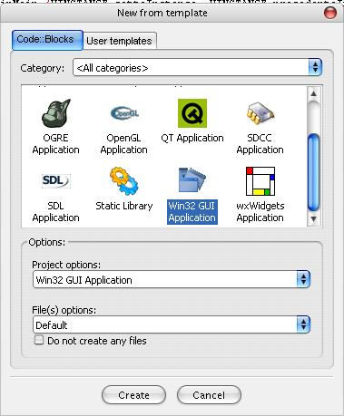
Comme vous pouvez vous en douter, vous devrez inclure la bibliothèque appropriée pour utiliser cette API, à savoir :
#include <windows.h>
Comme chacun sait, une seule fonction est commune à tous les programmes : le main. Le point d'entrée du programme est, dans cette API, un peu plus compliqué que dans un projet console ou SDL. Ainsi, le code minimal que vous pouvez faire en WinAPI est le suivant :
#include <windows.h>
int WinMain (
HINSTANCE cetteInstance,
HINSTANCE precedenteInstance,
LPSTR lignesDeCommande,
int modeDAffichage
)
{
return 0;
}
:waw: C'est quoi, tout ça ? Où diable sont passés les argc et argv tout bêtes ?
Pas de panique. ;) Étudions ensemble cette fonction. Vous connaissez forcément le type de retour de cette fonction : il s'agit d'un int. Passons maintenant aux arguments :
Le premier argument est l'instance actuelle de votre programme. C'est en quelque sorte une "boîte" représentant votre programme, et imbriquant tout ce qu'il contient (pour ne pas vous encombrer la tête) :
HINSTANCE cetteInstance
Le deuxième argument désigne l'instance précédente. En fait, ce paramètre date de Windows 16 bits, et donc obsolète. Il vaut donc toujours NULL :
HINSTANCE precedenteInstance
Le troisième argument remplace justement argv que vous connaissez déjà dans le prototype du main console ou SDL. Cependant, il est dans sa forme brute ; vous ne pourrez donc pas l'utiliser de suite (je vous expliquerai plus tard comment la découper et l'utiliser) :
LPSTR lignesDeCommande
Il est d'un type que vous ne connaissez pas, puisqu'il s'agit d'une structure signée Microsoft. Celle-ci correspond à un bête char*.
Le petit dernier ne vous servira probablement pas souvent : il s'agit du mode d'affichage (visible, invisible, minimisé etc...) de la fenêtre principale :
int modeDAffichage
Pour ceux qui écoutent les conseils du rédacteur -à savoir moi ;) -, vous devriez au préalable savoir à quoi correspondent les types principaux utilisés par cette API :
LPSTR correspondant à un char *, et ses déclinaisons :
LPCSTR correspondant à un const char *.
LPTSTR correspondant à un TCHAR * (voir TCHAR plus bas). On l'initialise avec la macro TEXT, selon :
LPTSTR string = TEXT("exemple");
LPWSTR correspondant à un wchar_t * On l'initialise avec le préfixe ' L', selon :
LPWSTR string = L"exemple";
WORD correspondant à un unsigned short
DWORD correspondant à un unsigned long
TCHAR correspondant à :
En compilant en Unicode : un wchar_t
Sinon : un char ;)
Et voilà pour une présentation restreinte ^^ .
Vous savez maintenant ne rien afficher sans erreur de compilation ! :lol: Génial, non ? Vous en voulez plus ? (pas étonnant ;) ) D'accord, direction "Votre première fenêtre" :) .
Étudions d'abord leur type respectif et leurs rôles :
fenetrePrincipale est de type HWND, qui veut dire handle de fenêtre. Si vous connaissez un minimum l'anglais, vous remarquerez que l'on pourrait le traduire par poignée.
Quel est le rapport ?
Réfléchissez : fenetrePrincipale sera une sorte de "poignée" nous permettant d'agir sur la fenêtre principale. En outre, cette structure possède sur la fenêtre toutes les informations nécessaires à son affichage. Bien sûr, ce handle ayant un nom, cela nous permet d'identifier, par le nom d'une variable, la fenêtre créée (bref : c'est bien pratique :) ).
message, quant à lui, est comme son nom l'indique un message système, utilisé pour communiquer entre l'utilisateur et les fenêtres : il s'agit en fait du descriptif d'un événement. Si vous connaissez la SDL, vous pourriez faire la correspondance avec 'SDL_event'.
classeFenetre est la classe de fenêtre (décidément, je choisis bien les noms ;) ) nécessaire à la construction de la fenêtre principale. C'est en fait une liste d'informations permettant par la suite de créer la fenêtre selon notre bon vouloir. (Je précise que la "classe" n'a pas ici la même définition que pour le C++.)
Remplissage de la classe de fenêtre
La création de la fenêtre demande le remplissage de sa classe, ou WNDCLASS. Nous allons donc nous en occuper :
Le champ 1 définit le style à affecter à la fenêtre. Ici, il n'y en a pas :
classeFenetre.style=0;
Le champ 2 définit la fonction callback à utiliser pour cette fenêtre (je vous explique plus loin) :
Le champ 3 définit combien de bytes en plus seront alloués à la suite de la structure (cela nous est inutile, donc 0 ^^ ) :
classeFenetre.cbClsExtra = 0;
Le champ 4 définit la même chose, mais suite à l'instance (donc aussi inutile) :
classeFenetre.cbWndExtra = 0;
Le champ 5 définit l'instance à laquelle appartient la fenêtre :
classeFenetre.hInstance = cetteInstance;
Le champ 6 définit l'icône à utiliser pour la fenêtre (en haut à gauche). Elle doit être chargée soit en passant par les ressources (nous verrons cela plus tard), soit, comme suit, avec une icône inclue dans Windows, possédant un ID spécifique (la liste sera peut-être proposée dans notre documentation) :
Le champ 7 définit le curseur par défaut à utiliser pour cette fenêtre (même chose que pour les icônes : le curseur utilisé ici est inclus dans Windows, et choisi parmi une petite liste) :
Le champ 8 définit la couleur à utiliser pour le fond de la fenêtre. Son type est HBRUSH, (traduit par brosse), et peut être changé grâce à une fonction de conversion, RGB->HBRUSH, que nous verrons plus tard, dans le chapitre sur l'affichage :
Le champ 9 définit le menu associé à cette fenêtre (peut être ajouté d'une autre manière) : ici, il n'y en aura aucun :
classeFenetre.lpszMenuName = NULL;
Et enfin le le champ 10, qui sera le nom de la classe en question :
classeFenetre.lpszClassName = "classeF";
Maintenant que nous avons rempli la classe de la fenêtre, encore faut-il la sauvegarder. Voici comment faire :
RegisterClass(&classeFenetre);
Création proprement dite de la fenêtre principale
Enfin ! Nous sommes prêts à créer notre fenêtre. C'est le travail de la fonction, dont voici le prototype :
HWND CreateWindow(
LPCTSTR lpClassName,
LPCTSTR lpWindowName,
DWORD dwStyle,
int x,
int y,
int nWidth,
int nHeight,
HWND hWndParent,
HMENU hMenu,
HANDLE hInstance,
LPVOID lpParam
);
:euh: Ne me dis pas que l'on doit retenir toutes ces fonctions ?
Bon d'accord, elles sont lourdes... mais non, vous n'êtes pas obligés de les retenir. Mais à force de les utiliser (vous verrez ;) ), vous les connaîtrez par coeur. "C'est en forgeant qu'on devient forgeron" à ce qu'il paraît. :p
Bon. Déjà, vous pouvez remarquer que son type de retour est HWND. Vous pouvez faire la correspondance avec fenetrePrincipale, et deviner que c'est celle-ci qui va contenir le retour de CreateWindow ^^ . En fait, cette fonction remplit la structure HWND avec les informations propres à la fenêtre, et la crée par la même occasion. (CreateWindow ne crée pas vraiment que des fenêtres au sens connu, mais toutes sortes de contrôles, que ce soit : fenêtre, bouton, listbox, progressbar, etc.)
Maintenant, occupons-nous de ses arguments :
L'argument 1 désigne la classe de fenêtre à partir de laquelle la fenêtre va être créée :
LPCTSTR lpClassName
(Vous avez peut être remarqué qu'il est de type LPCTSTR... C'est en fait la même chose que LPSTR mais constant, donc égal à const char[].)
L'argument 2 désigne le nom de la fenêtre, c'est-à-dire, dans le cas d'une fenêtre, la string qui va être affichée en guise de titre :
LPCTSTR lpWindowName
L'argument 3 désigne les styles à donner à la fenêtre :
DWORD dwStyle
(Vous avez sûrement remarqué que le type de cet argument vous est inconnu : en fait, il est utilisé un peu partout, et correspond à un unsigned long. Il est souvent utilisé pour les styles / flags, et sûrement construit à partir d'une association de bits.)
Les arguments 4 à 7 désignent respectivement : les coordonnées du coin supérieur gauche, la largeur, ainsi que la hauteur de la fenêtre :
int x,
int y,
int nWidth,
int nHeight
L'argument 8 désigne le handle de la fenêtre parent :
HWND hWndParent
L'argument 9 désigne, dans le cas d'une fenêtre, le menu associé à celle-ci, et dans le cas d'un contrôle, son ID (pour pouvoir le manipuler) :
HMENU hMenu
L'argument 10 désigne l'instance du programme :
HANDLE hInstance
(HINSTANCE dérive de HANDLE, donc son passage en tant que HANDLE se déroule sans histoire.)
L'argument 11 désigne les éventuels paramètres à envoyer à la fenêtre, à sa création :
LPVOID lpParam
(LPVOID est en fait un équivalent à void*. Pour ceux ayant fait de la SDL, cet argument possède le même rôle que le paramètre optionnel de type void* des timers.)
Et maintenant que vous connaissez chacun des arguments de la fonction CreateWindow, passons au codage pour créer une fenêtre :
fenetePrincipale = CreateWindow("classeF",
"Première fenêtre en winAPI !",
WS_OVERLAPPEDWINDOW, /*Style qui permet d'avoir une fenêtre tout ce qu'il y a de plus normale : barre de titre, menu système (réduire, maximiser, fermer), bordure etc...*/
CW_USEDEFAULT, // Permet à l'OS de déterminer dynamiquement la position de la fenêtre
CW_USEDEFAULT, //Idem
400,
300,
NULL, // Pas de fenêtre parent, puisque c'est la principale
NULL, //Aucun menu ne lui est associé
cetteInstance,
NULL); // Aucun paramètre à lui envoyer en plus
Mais la fenêtre ne s'affichera pas pour autant. :o Elle est créée, mais c'est tout. ^^
Pour l'afficher, il faut appeler la fonction ShowWindow ! Celle-ci prend en premier paramètre le handle de la fenêtre dont on veut changer le mode d'affichage, et un integer déterminant son mode. Vous pouvez soit utiliser le paramètre de WinMain modeDAffichage, soit utiliser la valeur qu'il prend d'habitude : SW_SHOW. Donc :
ShowWindow(fenetrePrincipale,SW_SHOW);
Maintenant que la fenêtre est en mode "affichée", il faut rafraîchir l'écran afin de la montrer à l'utilisateur : c'est le rôle de UpdateWindow, prenant comme seul paramètre le handle de la fenêtre. Vous l'utiliserez sûrement beaucoup après avoir créé des contrôles enfants d'une fenêtre, afin de rafraîchir l'écran juste après leur création.
Boucle événementielle
Afin d'interfacer l'utilisateur avec la fenêtre, nous avons besoin d'une boucle événementielle traitant les messages créés par l'utilisateur (qui ne le sait même pas :p ) et destinés aux fenêtres concernées. Pour cela, nous allons utiliser une nouvelle fonction que voici :
L'argument 1 désigne le message récupérateur des événements :
LPMSG msg
(Comme vous l'avez peut être deviné, les deux lettres 'LP' désignent un pointeur sur le type adjacent...)
L'argument 2 désigne le handle de fenêtre dont GetMessage va récupérer les événements (s'il est égal à NULL, GetMessage traitera toutes les fenêtres de l'instance) :
HWND hwnd
Les deux autres paramètres ne sont pas très importants pour le moment (je ne voudrais pas que vous partiez avant votre première fenêtre ;) ). Mettez-les donc à zéro.
Donc, mettons en place la boucle :
while (GetMessage(&message, NULL, 0, 0)) /*Récupération des évènements de toutes les fenêtres de l'instance dans message*/
{
TranslateMessage(&message); // Traduction de l'événement
DispatchMessage(&message); // Envoi du message correspondant à la fenêtre concernée
}
La fonction callback
Cf glossaire
Vous vous rappelez le champ de structure de classeFenetre où on a donné le nom d'une fonction callback ? Eh bien définissons-la. ^^ Voilà déjà son prototype :
Le paramètre 1 désigne le handle de la fenêtre concernée :
HWND fenetrePrincipale
Le paramètre 2 désigne le message envoyé par la boucle événementielle traitée :
UINT message
Les paramètres 3 et 4 désignent des pointeurs d'int chargés d'apporter des précisions sur l'origine du message :
WPARAM wParam, LPARAM lParam
Ces paramètres vous seront décrits un peu plus tard, quand nous parlerons plus en détail des messages créés par l'utilisateur.
La fonction callback étant un traitement des messages envoyés à la fenêtre, elle est chargée de faire telle ou telle action en fonction de tel ou tel message. C'est heureusement nous qui devons la coder. :p
Dans un premier temps, je vous propose de gérer les messages à l'intérieur de cette fonction de la manière suivante :
Le switch détermine quel message a été perçu par GetMessage :
WM_CREATE est envoyé à la création de la fenêtre. (Vous pourrez par ailleurs récupérer l'argument optionnel n°11 de CreateWindow à cet endroit.)
WM_DESTROY est envoyé lors de la destruction de la fenêtre. Par défaut (vous verrez que nous pouvons le changer), il est déclenché par WM_CLOSE, correspondant à un clic sur la croix en haut à droite que vous connaissez si bien ;) . Ici, il est traité, et PostQuitMessage est exécuté : il s'agit d'une fonction permettant de quitter simplement et proprement le programme. Elle prend comme unique argument 0.
Si aucun message déclaré explicitement n'est perçu, on retourne la procédure par défaut fournie par DefWindowProc.
Code complet
Et voilà : vous êtes prêts pour créer votre première fenêtre ! En combinant le tout, vous devriez avoir ce code-ci :magicien: :
#include <windows.h>
LRESULT CALLBACK procedureFenetrePrincipale(HWND, UINT, WPARAM, LPARAM);
int WinMain (HINSTANCE cetteInstance, HINSTANCE precedenteInstance,
LPSTR lignesDeCommande, int modeDAffichage)
{
HWND fenetrePrincipale;
MSG message;
WNDCLASS classeFenetre;
classeFenetre.style = 0;
classeFenetre.lpfnWndProc = procedureFenetrePrincipale;
classeFenetre.cbClsExtra = 0;
classeFenetre.cbWndExtra = 0;
classeFenetre.hInstance = NULL;
classeFenetre.hIcon = LoadIcon(NULL, IDI_APPLICATION);
classeFenetre.hCursor = LoadCursor(NULL, IDC_ARROW);
classeFenetre.hbrBackground = (HBRUSH)(1 + COLOR_BTNFACE);
classeFenetre.lpszMenuName = NULL;
classeFenetre.lpszClassName = "classeF";
// On prévoit quand même le cas où ça échoue
if(!RegisterClass(&classeFenetre)) return FALSE;
fenetrePrincipale = CreateWindow("classeF", "Ma première fenêtre winAPI !", WS_OVERLAPPEDWINDOW,
CW_USEDEFAULT, CW_USEDEFAULT, 400, 300,
NULL, NULL, cetteInstance, NULL);
if (!fenetrePrincipale) return FALSE;
ShowWindow(fenetrePrincipale, modeDAffichage);
UpdateWindow(fenetrePrincipale);
while (GetMessage(&message, NULL, 0, 0))
{
TranslateMessage(&message);
DispatchMessage(&message);
}
return message.wParam;
}
LRESULT CALLBACK procedureFenetrePrincipale(HWND fenetrePrincipale, UINT message, WPARAM wParam, LPARAM lParam)
{
switch (message)
{
case WM_CREATE:
return 0;
case WM_DESTROY:
PostQuitMessage(0);
return 0;
default:
return DefWindowProc(fenetrePrincipale, message, wParam, lParam);
}
}
Et vous obtenez cette oeuvre magnifique (il ne faut pas exagérer quand même :-° ) :
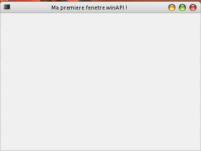
Enfin, presque ;) . Vous aurez sûrement une barre de titre différente, à cause du thème de Windows.
Voilà, ce premier chapitre est terminé, j'espère qu'il vous a plu :) . Ne vous découragez surtout pas face à la longueur du code, car cela en vaut la peine, et cela va rentrer progressivement en tant qu'automatisme.
Pour le moment, votre fenêtre vous paraît sûrement vide et terne ... nous allons l'animer un peu ;) . Nous allons voir ici comment créer des boutons, comment les manipuler, et comment faire apparaître un message à l'utilisateur.
Déjà, incorporez ou chargez le code obtenu dans la dernière sous-partie afin d'afficher une fenêtre (changez aussi les dimensions de 300 de hauteur à 110, cela sera plus esthétique :) ).
Création des boutons
Je vous propose dans cette sous-partie de créer deux boutons : un permettant d'afficher une information à l'utilisateur, et un autre pour quitter (ce n'est pas pour rien que je l'incorpore, vous allez pouvoir avoir plus de précisions sur la gestion des messages).
Les boutons sont créés à partir d'une fonction que vous connaissez bien désormais : CreateWindow.
:-° Mais je croyais que c'était pour faire des fenêtres ?
Oui, mais les contrôles sont considérés comme des fenêtres, enfants (donc "attachées" si vous voulez) de la fenêtre parent. Seules les classes de fenêtres sont différentes selon le contrôle. Vous vous rappelez de la classe que nous avons créée pour la fenêtre principale, classeFenetre ? Eh bien, pour les contrôles, les classes sont prédéfinies. On trouve donc comme classes :
BUTTON : permettant de créer un bouton.
LISTBOX : permettant de créer une liste de choix.
STATIC : permettant toutes sortes de choses, comme des images, des groupbox, etc.
Et bien d'autres...
Comme vous vous en doutez, nous allons donc utiliser la classe BUTTON. Avant de les créer, vous devez savoir une chose : les contrôles sont gérés (grâce aux messages, notifications [servant à avertir d'un événement secondaire]...) à partir soit d'un handle (pratique n'est ce pas ? ^^ ), soit d'un ID, défini grâce à :
#define ID 1
Où ID est généralement un mot l'identifiant bien (par convention, en majuscule), et suivi d'un nombre le remplaçant lors de la compilation. (Il faut avouer que recevoir le message ' CLIC ' est plus pratique que ' 02123 ' par exemple. Surtout quand les IDs se multiplient...)
Donc, nous allons d'abord créer les handles de boutons, dans un tableau pour plus d'accessibilité. Les contrôles sont déclarés au début du callback de la fenêtre à laquelle ils appartiennent :
Intégrez au préalable les définitions des ID des boutons au début de votre code :
#define ID_B_PARLER 0
#define ID_B_QUITTER 1
Dernière chose : vous vous rappelez le prototype de CreateWindow ? Cette fonction demandait l'instance. Or, la fonction callback n'entre pas dans la portée de cette variable. Nous sommes alors contraints d'en faire une variable globale. Déclarez une variable globale comme suit :
HINSTANCE instance;
Et, en guise de première instruction (de préférence après les déclarations de variables) de WinMain, copiez cetteInstance dans instance comme suit :
instance = cetteInstance;
Bien. Maintenant, nous sommes prêts à créer les boutons. Cette opération se fait en général dans le WM_CREATE, puisqu'ils sont créés en même temps que la fenêtre parent :
Comme vous pouvez le voir, les styles WS_CHILD et WS_VISIBLE sont appliqués aux boutons :
WS_CHILD solidarise le contrôle à la fenêtre parent. Sans lui, le contrôle flotterait "en l'air", en dehors de la fenêtre.
WS_VISIBLE affiche le contrôle (donc, pas besoin de ShowWindow).
Vous pouvez voir alors que les ID sont, comme je l'ai dit pendant la description de cette fonction, à la place du menu normalement associé à une fenêtre.
Les boutons sont maintenant créés, mais n'ont aucune action.
Gestion de l'enfoncement du bouton
Maintenant que les boutons existent, il nous faut les associer à des actions particulières. Tout d'abord, un peu de théorie. Je vous ai dit que le switch du message déterminait le message perçu : celui-ci a pu être dans le cas précédent WM_CREATE, ou WM_DESTROY. Mais ce message est complété par wParam et lParam, passés à la fonction callback. Ceux-ci contiennent des messages complémentaires, ou des notifications. Ces paramètres étant des doubles mots, on peut récupérer le mot bas et le mot haut de chacun de ces deux paramètres grâce aux macros LOWORD() ou HIWORD().
Justement, quand un bouton est enfoncé, le message vaut WM_COMMAND, et le mot bas de wParam détermine l'ID du bouton qui a été cliqué, et qui a donc envoyé ce message. En l'utilisant dans notre code, on obtient donc :
case WM_COMMAND:
switch(LOWORD(wParam))
{
case ID_B_PARLER:
//Ici l'instruction associée à "Parler"
break;
case ID_B_QUITTER:
//Là l'instruction associée à "Quitter"
break;
}
return 0;
Ainsi, si le bouton "Parler" a été cliqué, le message vaudra WM_COMMAND, et un test du mot bas du paramètre wParam indiquera l'ID de celui ci, ou ID_B_PARLER.
Peut-on, nous (à travers du code), envoyer des messages ?
Ça tombe bien, je voulais l'utiliser pour le bouton "Quitter". :p En effet, ce bouton a le même effet que "la croix". Comme son message associé est WM_DESTROY, nous allons donc envoyer le message WM_DESTROY à la fenêtre principale quand le bouton "Quitter" a été cliqué.
La fonction permettant d'y arriver s'appelle SendMessage (quelle coïncidence ^^) ; son prototype est le suivant :
Vous l'avez deviné, SendMessage ne fait qu'exécuter la fonction callback avec le message spécifié dans msg, les paramètres spécifiés dans wParam et lParam, et retourne ce que retourne le callback (logique).
Très pratique, vous vous en servirez beaucoup, je vous l'assure ^^ .
En l'adaptant à notre code, nous obtenons ceci :
SendMessage(fenetrePrincipale, WM_DESTROY, 0, 0);
Les paramètres n'étant pas utilisés, nous les mettons à zéro. Ce bout de code est évidemment à mettre dans le ' case ID_B_QUITTER '.
Le bouton "Quitter" est donc opérationnel. Occupons-nous maintenant du bouton "Parler". Ce bouton doit avoir pour effet d'afficher quelque chose à l'utilisateur : par exemple, de l'informer que le bouton a été cliqué (bon d'accord, ce n'est pas très original, mais ce sont les bases :p ). Et pour cela, rien de mieux que MessageBox.
MessageBox
Cette fonction, dont le prototype est le suivant :
int MessageBox(HWND hWnd, LPCTSTR lpText, LPCTSTR lpCaption, UINT uType);
affiche une petite messagebox portant comme titre la chaîne spécifiée par lpCaption, comme texte celui spécifié par lpText, étant rattachée à la fenêtre spécifiée par hWnd et ayant comme style ceux spécifiés dans uType.
Vraiment, vous ne connaissez pas ? Vous avez été bercé aux doux sons des erreurs, ou aux warnings de non-sauvegarde en quittant, tous deux rapportés grâce aux messages boxes. :p
Les icônes et boutons de celles-ci sont déterminés grâce au paramètre uType, mais la liste ne sera pas donnée ici.
Donc, en utilisant cette fonction en guise de réponse à un clic sur "Parler", on obtient ce code :
MB_ICONINFORMATION est une constante permettant d'ajouter un bouton 'OK' à la messagebox, et une icône en forme de bulle. Vous n'avez plus qu'à placer ce code dans le 'case ID_B_PARLER' du callback.
Code complet
Eh bien j'ai l'impression que l'on a fini notre modeste programme ! En voici donc le code complet :
Vous en voulez toujours plus, n'est-ce pas ? ;) Eh bien vous allez apprendre dans ce chapitre à créer des menus. Pour cela, deux manières de coder :
en passant par les ressources
dynamiquement en passant par des fonctions.
Nécessaire
En premier lieu, reprenez le code du chapitre précédent. En guise de test, nous créerons un menu "Actions" comportant les deux actions présentes sous la forme de boutons "Parler" et "Quitter".
Peu importe la méthode utilisée, des handles de menus seront nécessaires pour chaque menu, et chaque sous-menu associé à la fenêtre. Ceux-ci comportent le type HMENU :
HMENU menu, sousMenu;
Création du menu
En utilisant des fonctions
Les handles de menus peuvent être alors créés en vue d'un remplissage avec la fonction CreateMenu, ne comportant aucun paramètre :
HMENU CreateMenu(VOID);
Une fois créés, nous pouvons les remplir selon leur type avec la fonction suivante :
Cette fonction, dont le rôle est d'ajouter une entrée, que cela soit une commande ou un sous-menu, comporte les arguments suivants :
L'argument 1 désigne le menu auquel est associée l'entrée :
HMENU hMenu
L'argument 2 désigne le type de l'entrée, mais aussi par association de flags, des options facultatives (désactivé, coché, illustré, etc.) :
UINT uFlags
L'argument 3 désigne, dans le cas d'une commande, son ID (ayant le même effet que ceux des boutons), ou dans le cas d'une entrée popup, le handle du sous-menu associé :
UINT_PTR uIDNewItem
L'argument 4 désigne le nom affiché par l'entrée :
LPCSTR lpNewItem
Si vous voulez créer une entrée popup (donc un sous-menu), le uFlags doit correspondre à la valeur MF_POPUP. Dans le cas d'une commande, il doit être égal à MF_STRING. Les séparateurs peuvent, eux, être créés avec MF_SEPARATOR (les deux derniers paramètres seront alors ignorés).
Bien sûr, les sous-menus doivent être définis avant d'être associés à un menu, ou, dans le cas contraire, celui-ci n'aurait rien à intégrer.
Dans notre cas, la création du menu serait comme ceci :
Les ressources servent à énormément de choses en WinAPI. Elles servent, comme vous le savez, à spécifier les fichiers stockés dans l'exécutable en précisant son ID, type et chemin, mais aussi à définir des accélérateurs clavier (que nous verrons plus tard), des schémas de boîtes de dialogue (dont nous aborderons l'utilisation dans le chapitre suivant), ou encore des schémas de menus (qui nous intéressent ici :p ), et bien d'autres choses.
La création d'un menu en ressource est plus logique qu'en utilisant AppendMenu. Elle observe donc une hiérarchie sous cette forme, qu'on appelle communément template :
ID_MENU MENU
BEGIN
POPUP "Menu"
BEGIN
POPUP "Sous Menu"
BEGIN
MENUITEM "Truc", ID_TRUC
MENUITEM SEPARATOR
MENUITEM "Machin", ID_MACHIN
END
MENUITEM "Groar", ID_GROAR
END
POPUP "Menu2"
BEGIN
MENUITEM "Miaou", ID_MIAOU
END
END
(Bon d'accord, vive les noms... mais c'était pour vous montrer les différents cas possibles :-° .)
Comme vous pouvez le voir, ID_MENU n'est pas visible : il s'agit de l'identificateur du menu. (D'ailleurs, bien qu'il soit un ID, il n'a pas besoin d'être défini.) Seules les entrées entre ses BEGIN et END sont visibles : POPUP désigne les menus déroulants, et MENUITEM une commande (je suppose que vous savez ce que signifie SEPARATOR désormais ;) ). Les ID de chaque commande doivent être spécifiés après le nom affiché et une virgule.
Pour notre exemple, le code en ressource serait le suivant :
ID_MENU MENU
BEGIN
POPUP "Actions"
BEGIN
MENUITEM "Parler", ID_B_PARLER
MENUITEM "Quitter", ID_B_QUITTER
END
END
Bien. Après avoir créé le menu, encore faut-il le récupérer pour l'associer à la fenêtre. Pour cela, on utilise LoadMenu. Cette fonction, prenant comme premier paramètre l'instance actuelle, et en deuxième l'ID du menu, se charge de renvoyer un handle de menu. En utilisant ce handle de menu, vous pourrez l'utiliser lors de CreateWindow ou SetMenu (voir méthodes d'associations ci-après).
Association du menu avec la fenêtre
Afin d'intégrer le menu à la fenêtre, vous avez trois méthodes.
Dans le cas d'une définition sans ressources (ou avec, mais en utilisant LoadMenu), à la création de la fenêtre, vous devez passer le nom du menu parent (ici menu) au paramètre n°9 de CreateWindow, étant hMenu, sans guillemets. Exemple :
Dans le cas d'une définition utilisant les ressources, à la définition de la classe de fenêtre, vous devez passer le nom identificateur du menu au paramètre lpszMenuName de la structure WNDCLASS entre guillemets. Exemple :
classeFenetre.lpszMenuName = "MENU";
Dans les deux cas, dans du reste du code, vous pouvez utiliser la fonction SetMenu, prenant comme premier paramètre le nom de la fenêtre à laquelle le menu (précisé dans le paramètre 2 sous HMENU) est associé. Exemple (cas utilisant les ressources) :
#include <windows.h>
#include "constantes.h"
ID_MENU MENU
BEGIN
POPUP "Actions"
BEGIN
MENUITEM "Parler", ID_B_PARLER
MENUITEM SEPARATOR
MENUITEM "Quitter", ID_B_QUITTER
END
END
#include <windows.h>
#include "constantes.h"
HINSTANCE instance;
LRESULT CALLBACK procedureFenetrePrincipale(HWND, UINT, WPARAM, LPARAM);
int WinMain (HINSTANCE cetteInstance, HINSTANCE precedenteInstance,
LPSTR lignesDeCommande, int modeDAffichage)
{
HWND fenetrePrincipale;
MSG message;
WNDCLASS classeFenetre;
instance = cetteInstance;
classeFenetre.style = 0;
classeFenetre.lpfnWndProc = procedureFenetrePrincipale;
classeFenetre.cbClsExtra = 0;
classeFenetre.cbWndExtra = 0;
classeFenetre.hInstance = NULL;
classeFenetre.hIcon = LoadIcon(NULL, IDI_APPLICATION);
classeFenetre.hCursor = LoadCursor(NULL, IDC_ARROW);
classeFenetre.hbrBackground = (HBRUSH)(1 + COLOR_BTNFACE);
classeFenetre.lpszMenuName = NULL;
classeFenetre.lpszClassName = "classeF";
// On prévoit quand même le cas où ça échoue
if(!RegisterClass(&classeFenetre)) return FALSE;
fenetrePrincipale = CreateWindow("classeF", "Ma premiere fenetre winAPI !", WS_OVERLAPPEDWINDOW, CW_USEDEFAULT, CW_USEDEFAULT, 400, 130, NULL, NULL, cetteInstance, NULL);
if (!fenetrePrincipale) return FALSE;
ShowWindow(fenetrePrincipale, modeDAffichage);
UpdateWindow(fenetrePrincipale);
while (GetMessage(&message, NULL, 0, 0))
{
TranslateMessage(&message);
DispatchMessage(&message);
}
return message.wParam;
}
LRESULT CALLBACK procedureFenetrePrincipale(HWND fenetrePrincipale, UINT message, WPARAM wParam, LPARAM lParam)
{
static HWND boutons[2] = {NULL};
switch (message)
{
case WM_CREATE:
boutons[0] = CreateWindow("BUTTON", "Parler", WS_CHILD | WS_VISIBLE,
5, 5, 383, 30, fenetrePrincipale, (HMENU)ID_B_PARLER, instance, NULL);
boutons[1] = CreateWindow("BUTTON", "Quitter", WS_CHILD | WS_VISIBLE,
5, 45, 383, 30, fenetrePrincipale, (HMENU)ID_B_QUITTER, instance, NULL);
SetMenu(fenetrePrincipale, LoadMenu(instance, "ID_MENU"));
/*Ou dans le cas manuel, SetMenu(fenetrePrincipale, menu); où menu a été d"jà créé*/
return 0;
case WM_COMMAND:
switch(LOWORD(wParam))
{
case ID_B_PARLER:
MessageBox(fenetrePrincipale, "Clic", "Bonjour.", MB_ICONINFORMATION);
break;
case ID_B_QUITTER:
SendMessage(fenetrePrincipale, WM_DESTROY, 0, 0);
break;
}
return 0;
case WM_DESTROY:
PostQuitMessage(0);
return 0;
default:
return DefWindowProc(fenetrePrincipale, message, wParam, lParam);
}
}
Résultat :
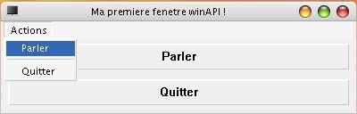
Pour aller plus loin
Activer / désactiver une entrée
Dès la création du menu : spécifier le flag MF_DISABLED pour désactiver l'entrée (MF_ENABLED, permettant de l'activer, étant par défaut), ou MF_GRAYED pour le griser. Exemple :
MENUITEM "Parler", ID_B_PARLER, MF_GRAYED
Dans le reste du code : utiliser la fonction EnableMenuItem, prenant comme premier paramètre le handle de menu, comme deuxième soit l'emplacement (basé sur 0) de l'entrée, soit sa commande (le choix étant spécifié par la valeur du troisième paramètre), et comme troisième son mode, par combinaison de son mode de détermination (MF_BYCOMMAND implique d'utiliser la commande pour le deuxième paramètre, et MF_BYPOSITION l'inverse) et du mode d'affichage, étant les mêmes valeurs possibles que pour les flags des entrées décrits ci-dessus. Exemple :
Dès la création du menu, on peut spécifier le flag MF_CHECKED (pour coché) ou MF_UNCHECKED (valeur par défaut, non coché). Exemple :
MENUITEM "Parler", ID_B_PARLER, MF_CHECKED
Dans le reste du code : utiliser la fonction CheckMenuItem, prenant comme premier paramètre le handle de menu concerné, et pour les deuxième et troisième paramètres, le même système que pour EnableMenuItem, excepté le fait que les états possibles sont ceux spécifiés ci-dessus. Exemple :
Nous allons maintenant aborder les boîtes de dialogue. Pour ce chapitre, l'objectif sera juste d'ajouter une boîte de dialogue simple (comportant une icône et du texte) faisant office d'"A propos".
Préparation
Pour faire apparaître la boîte de dialogue, nous avons besoin d'une commande. Pour cela, nous allons rajouter un menu popup, au même niveau que "Actions", mais ayant pour nom "Aide". Dans celui-ci, une entrée-commande sera ajoutée, portant "A propos" comme nom, et ID_B_APROPOS comme ID.
Pour cela, ajoutez (exemple utilisant les ressources : adaptez en conséquence pour les autres méthodes) :
POPUP "Aide"
BEGIN
MENUITEM "A propos", ID_B_APROPOS
END
dans le template du menu en ressources.
ID_B_APROPOS devra être par ailleurs défini dans constantes.h.
Enfin et bien sûr, ajoutez un nouveau 'case' portant cet ID dans le switch du mot faible du message WM_COMMAND. Nous le remplirons plus tard.
La création d'une boîte de dialogue exige deux parties distinctes : la définition de son template, et sa création proprement dite. Voyons chacune de ces étapes.
Template ressource
Vous vous souvenez du template d'un menu en ressources ? C'est à peu près pareil pour une boîte de dialogue, excepté le fait que le mot-clé MENU est remplacé par DIALOG (ou DIALOGEX, si vous utilisez des styles étendus), et des informations supplémentaires comme sa position / largeur / hauteur, ses styles et son titre sont rajoutés juste avant la définition. Un schéma basique de boîte de dialogue peut alors être le suivant :
ID_DIALOGUE DIALOG
CW_USEDEFAULT, CW_USEDEFAULT, 200, 120
STYLE WS_OVERLAPPEDWINDOW
CAPTION "Titre"
BEGIN
END
L'ordre des ajouts n'est pas important, excepté le fait que les positions (les quatre paramètres entre virgules) de la boîte de dialogue doivent être les premiers à être définis. WS_OVERLAPPEDWINDOW rend la boîte de dialogue modale, parfaitement banale : barre de titre, menu système (réduire, fermer, etc.)... tous les styles applicables aux fenêtres principales (contenus donc dans le champ uStyle de la WNDCLASS) le sont ici. Quant à CAPTION (dont la traduction française donne "Titre"), il indique la chaîne de caractères à afficher dans la barre de titre (d'où son nom).
Chaque ajout de contrôle s'exécute par l'intermédiaire de mots-clés. Sauf exception (informations en surplus nécessaires, etc.), les lignes de "déclaration" de contrôles en utilisant ces mots-clés possèdent une organisation de ce type :
MOTCLE TEXTE_ASSOCIE, ID, x, y, w, h, STYLES
Où x et y sont les coordonnées du coin supérieur gauche du contrôle, et w et h les dimensions du contrôle.
Par exemple, un bouton possède comme mot clé PUSHBUTTON. S'il est le bouton par défaut, il est alors DEFPUSHBUTTON. Autre exemple (je ne les choisis pas au hasard ;) ) : une icône possède le même mot-clé que pendant une intégration à l'exécutable de celle-ci, en passant par les ressources, à savoir ICON. Enfin, du texte peut être affiché avec le mot clé LTEXT (justifié à gauche) ou RTEXT (justifié à droite).
Maintenant que vous savez tout ceci, vous êtes prêts à définir le template de votre boîte de dialogue. En premier lieu, intégrez à l'exécutable l'icône voulue avec, comme vous le savez, la syntaxe suivante :
icone1 ICON "chemin/icone.ico"
Je vous propose donc :
APROPOS DIALOG
CW_USEDEFAULT, CW_USEDEFAULT, 200, 120
CAPTION "Titre"
STYLE WS_OVERLAPPEDWINDOW
BEGIN
DEFPUSHBUTTON "Ok", IDOK, 96, 90, 42, 12
ICON icone1, -1, 60, 55, 32, 32
LTEXT "A propos test des boîtes de dialogue", -1, 100, 58, 100, 10
END
Maintenant que le schéma est créé, passons à la création proprement dite.
Création
Pour créer la boîte de dialogue, deux méthodes : soit vous en faites une indépendante, de déco, etc., soit vous voulez la manipuler.
Vous pouvez donc utiliser soit CreateDialog, soit DialogBox. Leur prototype est presque pareil : elles possèdent toutes deux les mêmes paramètres, mais CreateDialog permet de récupérer un handle de fenêtre sur la boîte de dialogue créée (ce qui vous fait donc deviner que CreateDialog est la fonction à utiliser, si vous voulez manipuler la boîte de dialogue à partir d'une autre fenêtre, récupérer des infos, etc.). Voici donc leurs paramètres :
Le premier désigne l'instance actuelle :
HINSTANCE hInstance
Le deuxième désigne le template à utiliser, donc l'ID (plutôt une chaîne identifiante) de la boîte de dialogue entre guillemets :
LPCTSTR lpTemplate
Le troisième désigne le handle de la fenêtre parent :
HWND hWndParent
Le dernier désigne la fonction callback de la boîte de dialogue (un cast sera peut être nécessaire) :
DLGPROC lpDialogFunc
Donc, si on choisit par exemple DialogBox comme fonction, on aura alors l'extrait de code suivant :
case WM_COMMAND:
switch(LOWORD(wParam))
{
case ID_B_APROPOS:
DialogBox(instance, "APROPOS", fenetrePrincipale, (DLGPROC)aPropos_procedure);
break;
Or, aPropos_procedure n'existe pas. Nous allons donc nous occuper de sa fonction callback.
La fonction callback
Similaire à la procédure de la fenêtre principale, elle possède néanmoins un type de retour différent : BOOL APIENTRY. Je ne vais pas non plus le décrire ici.
Quelques différences notoires : WM_CREATE a été remplacé par WM_INITDIALOG, et WM_DESTROY n'est pas envoyé : EndDialog s'occupe de fermer la fenêtre (donc à ne pas utiliser de suite avec CreateDialog) en prenant comme paramètre : le handle de la boîte de dialogue, et 0.
#include <windows.h>
#include "constantes.h"
icone1 ICON "Icones/icone.ico"
ID_MENU MENU
BEGIN
POPUP "Actions"
BEGIN
MENUITEM "Parler", ID_B_PARLER
MENUITEM SEPARATOR
MENUITEM "Quitter", ID_B_QUITTER
END
POPUP "Aide"
BEGIN
MENUITEM "A propos", ID_B_APROPOS
END
END
APROPOS DIALOG
CW_USEDEFAULT, CW_USEDEFAULT, 200, 120
CAPTION "Titre"
STYLE WS_OVERLAPPEDWINDOW
BEGIN
DEFPUSHBUTTON "Ok", IDOK, 76, 90, 42, 12
ICON icone1, -1, 30, 50, 32, 32
LTEXT "A propos test des boîtes de dialogue", -1, 60, 38, 200, 10
END
Résultat : (pas d'icône chez moi, je n'en avais pas sous la main ;) )
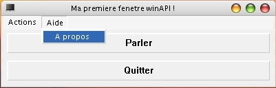
et
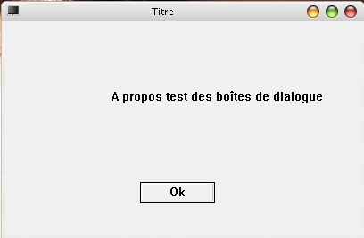
Pour aller plus loin
Vous pouvez récupérer le handle d'un contrôle d'une boîte de dialogue (pour pouvoir lui envoyer des messages) avec GetDlgItem, prenant comme premier paramètre le handle de la boîte de dialogue parent du contrôle, et en deuxième son ID.
Vous pouvez changer dynamiquement le texte des XTEXT avec SetDlgItemText, (ou Int, rajoutant un quatrième paramètre étant un booléen si l'int est signé ou non) prenant les mêmes paramètres que GetDlgItem, mais avec en plus le texte à afficher.
A l'inverse, vous pouvez utiliser GetDlgItemText (ou Int, où le troisième paramètre est un pointeur d'int qui va récupérer les éventuelles erreurs, et un quatrième spécifiant si l'int est signé ou non. La valeur est alors retournée.) pour en récupérer la valeur. Le troisième paramètre est alors une variable qui va contenir la valeur, et un quatrième est ajouté pour spécifier la taille de la chaîne à récupérer (pour éviter les dépassements de tampon).
Vous en savez maintenant assez pour pouvoir utiliser les autres contrôles, qui vous sont expliqués ici :magicien: :
<information>Seuls les points importants sont abordés. Si vous ne trouvez pas votre bonheur, je vous invite à aller sur msdn.</information>
Ce contrôle est l'un des plus utiles, mais aussi le plus complet. En effet, ce que l'on désigne par BUTTON est bien plus qu'un bouton, ce peut être :
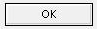
Un "push button" :
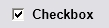
Une "check box" (deux ou trois états) :
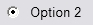
Un "radio button" :
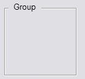
Une "group box" :
Nous allons détailler tour à tour chaque utilisation.
La première utilisation (la plus classique) est sans contestation celle du bouton poussoir, qui s'enclenche quand vous cliquez dessus.
La seconde est tout aussi utile : c'est une case à cocher. Elle peut avoir 2 ou 3 états. Les deux états communs sont coché, et non coché. Le troisième est non assigné, c'est-à-dire que vous ne voulez pas faire de choix entre les deux.
La troisième permet de faire un choix entre plusieurs possibilités.
La quatrième permet de regrouper les contrôles dans un carré surmonté d'un nom.
Création
Pour créer un BUTTON, il faut appeler CreateWindow en spécifiant "BUTTON" comme classe, ou utiliser le mot-clé PUSHBUTTON en ressource. Néanmoins, cela ne suffit pas car, comme vous l'avez vu, il y a plusieurs possibilités. Ce qui va nous intéresser est donc l'attribut de style. En plus de spécifier les styles habituels (WM_CHILD, WM_VISIBLE), vous pouvez spécifier un ou plusieurs de ces styles :
BS_3STATE : check box à 3 états.
BS_AUTO3STATE : check box trois états, qui bascule automatiquement d'un état à l'autre.
BS_AUTOCHECKBOX : idem, mais en 2 états.
BS_AUTORADIOBUTTON : radio button qui bascule automatiquement d'un choix à l'autre.
BS_CHECKBOX : check box deux états.
BS_DEFPUSHBUTTON : push button par défaut de la fenêtre.
BS_GROUPBOX : group box.
BS_LEFTTEXT : affiche le texte à gauche du radio button ou de la check box.
BS_OWNERDRAW : vous permet de dessiner vous-même le contrôle.
BS_PUSHBUTTON : push button.
BS_RADIOBUTTON : radio button.
BS_USERBUTTON : obsolète.
BS_BITMAP : affiche une image.
BS_BOTTOM : affiche le texte en bas du bouton.
BS_CENTER : affiche le texte au milieu du bouton (horizontalement).
BS_ICON : affiche une icône.
BS_FLAT : style "plat" (pas d'effet de profondeur).
BS_LEFT : affiche le texte à gauche du bouton.
BS_MULTILINE : si le texte est trop grand, le contrôle l'affichera sur plusieurs lignes.
BS_NOTIFY : permet au contrôle d'envoyer des notifications de type BN_KILLFOCUS et BN_SETFOCUS.
BS_PUSHLIKE : fait apparaître et comporter le contrôle comme un bouton (que ce soit un check box ou radio button).
BS_RIGHT : affiche le texte à droite du bouton.
BS_RIGHTBUTTON : même chose que BS_LEFTTEXT.
BS_TEXT : affiche du texte.
BS_TOP : affiche le texte en haut du bouton.
BS_VCENTER : affiche le texte au milieu du bouton, et verticalement.
Comment déterminer les radio button qui fonctionnent ensemble ?
C'est très simple : à chaque fois que vous commencez un nouveau groupe de radio button fonctionnant ensemble, il vous faut ajouter le style WS_GROUP lors de la création avec CreateWindow (voir le code complet en fin de description).
Notifications
Je vais décrire ici les notifications envoyées par le contrôle, via le message WM_COMMAND (sauf mention contraire). Nous partirons du principe que vous savez comment interagir avec ce message, et je décrirai donc ici uniquement les codes de notifications.
.
BN_CLICKED
Cette notification est envoyée quand l'utilisateur clique sur un bouton.
BN_DBLCLK ou BN_DOUBLECLICKED
Cette notification est envoyée quand l'utilisateur double-clique sur un bouton.
WM_CTLCOLORBTN
Ce message est envoyé à la fenêtre parent juste avant que le contrôle ne soit dessiné. Il est utile principalement pour changer la couleur du texte, ou du fond du contrôle pour le dessin.
Les paramètres valent alors:
wParam : handle du DC sur lequel dessiner.
lParam : handle du bouton.
Valeur de retour : handle d'une brosse qui sera utilisée pour le dessin du fond.
Messages
Ces messages peuvent être envoyés au contrôle avec la fonction :
SendMessage(hCtl,iCode,wParam,lParam)
Pour chaque message, je décrirai le rôle et la signification de wParam et lParam, ainsi que la valeur retournée.
BCM_GETIDEALSIZE
Ce message permet de récupérer la taille du bouton permettant d'afficher correctement le texte et l'image (si présente).
wParam : 0.
lParam : pointeur vers une structure de type SIZE qui recevra la taille désirée.
Valeur de retour : TRUE en cas de succès, et FALSE en cas d'échec.
BM_CLICK
Ce message permet de simuler un clic de souris sur le bouton.
wParam : 0.
lParam : 0.
Valeur de retour : aucune.
BM_GETCHECK
Ce message permet de récupérer l'état d'un check box ou d'un radio button.
wParam : 0.
lParam : 0.
Valeur de retour : BST_CHECKED, BST_INDETERMINATE ou BST_UNCHECKED (ou 0 en cas d'échec).
BM_GETIMAGE
Ce message permet de récupérer le handle de l'image, ou de l'icône associée au bouton.
wParam : IMAGE_BITMAP ou IMAGE_ICON.
lParam : 0.
Valeur de retour : le handle de l'image ou de l'icône (ou NULL en cas d'échec).
BM_GETSTATE
Ce message permet de récupérer l'état d'un bouton ou d'une check box.
wParam : 0.
lParam : 0.
Valeur de retour : c'est la combinaison d'une ou plusieurs de ces valeurs :
BST_CHECKED : le bouton est coché.
BST_FOCUS : le bouton a le focus clavier.
BST_INDETERMINATE : la check box est non assignée.
BST_PUSHED : le bouton est maintenu enfoncé.
BST_UNCHECKED : le bouton n'est pas coché.
BM_SETCHECK
Ce message permet de définir l'état d'une check box ou un d'un radio button.
wParam : BST_CHECKED, BST_INDETERMINATE ou BST_UNCHECKED
lParam : 0.
Valeur de retour: 0.
BM_SETIMAGE
Ce message permet de définir le handle de l'image, ou de l'icône associée au bouton.
wParam : IMAGE_BITMAP ou IMAGE_ICON.
lParam : le handle de l'image ou de l'icône.
Valeur de retour : le handle de l'image, ou de l'icône associée précédente (ou NULL si aucune).
BM_SETSTATE
Ce message permet de définir l'état de surbrillance d'un bouton. L'état de surbrillance est utilisé lorsque l'utilisateur est en train de cliquer sur le bouton.
wParam : TRUE pour mettre le bouton en surbrillance et FALSE pour ne pas le mettre en surbrillance.
lParam : 0.
Valeur de retour : 0.
Exemple
Ceci est le code complet d'un exemple utilisant les boutons.
#include <windows.h>
#include <stdio.h>
HINSTANCE instance;
#define ID_PUSHBUTTON_1 110
#define ID_PUSHBUTTON_2 111
#define ID_PUSHBUTTON_3 112
#define ID_CHECKBOX_1 113
#define ID_CHECKBOX_2 114
#define ID_CHECKBOX_3 115
#define ID_CHECKBOX_4 116
#define ID_RADIOBUTTON_11 117
#define ID_RADIOBUTTON_12 118
#define ID_RADIOBUTTON_13 119
#define ID_RADIOBUTTON_21 120
#define ID_RADIOBUTTON_22 121
#define ID_RADIOBUTTON_23 122
VOID RemplieFenetrePrincipale(HWND fenetrePrincipale)
{
// Premier groupe: le push button
HWND hGroup=CreateWindow(
"BUTTON",
"Le push button",
WS_CHILD|WS_VISIBLE|BS_GROUPBOX,
10,10,
120,150,
fenetrePrincipale,
NULL,
instance,
NULL);
{
HWND hControle;
// On le remplit avec un premier push button tout bête
hControle=CreateWindow(
"BUTTON",
"Button 1",
WS_CHILD|WS_VISIBLE|BS_PUSHBUTTON,
10+10,10+20,
100,20,
fenetrePrincipale,
(HMENU)ID_PUSHBUTTON_1,
instance,
NULL);
// un second avec quelques flags : plat et plusieurs lignes
hControle=CreateWindow(
"BUTTON",
"Button 2: texte long",
WS_CHILD|WS_VISIBLE|BS_PUSHBUTTON|BS_FLAT|BS_MULTILINE,
10+10,10+50,
100,40,
fenetrePrincipale,
(HMENU)ID_PUSHBUTTON_2,
instance,
NULL);
// et un troisième un peu plus exotique, c'est aussi le bouton par défaut de la fenêtre
// on lui met aussi une image alignée à gauche
hControle=CreateWindow(
"BUTTON",
"",
WS_CHILD|WS_VISIBLE|BS_DEFPUSHBUTTON|BS_ICON|BS_LEFT,
10+10,10+100,
100,40,
fenetrePrincipale,
(HMENU)ID_PUSHBUTTON_3,
instance,
NULL);
HANDLE hIcon=LoadIcon(NULL,IDI_ERROR);
SendMessage(hControle,BM_SETIMAGE,IMAGE_ICON,(LPARAM)hIcon);
}
// Deuxième groupe: les check box
hGroup=CreateWindow(
"BUTTON",
"La check box",
WS_CHILD|WS_VISIBLE|BS_GROUPBOX,
130,10,
120,150,
fenetrePrincipale,
NULL,
instance,
NULL);
{
HWND hControle;
// une check box automatique deux états
hControle=CreateWindow(
"BUTTON",
"Check box 1",
WS_CHILD|WS_VISIBLE|BS_AUTOCHECKBOX,
130+10,10+20,
100,20,
fenetrePrincipale,
(HMENU)ID_CHECKBOX_1,
instance,
NULL);
// le même mais plat, et avec le texte à gauche de la case à cocher
hControle=CreateWindow(
"BUTTON",
"Check box 2",
WS_CHILD|WS_VISIBLE|BS_AUTOCHECKBOX|BS_FLAT|BS_LEFTTEXT,
130+10,10+50,
100,20,
fenetrePrincipale,
(HMENU)ID_CHECKBOX_2,
instance,
NULL);
// une autre check box simple automatique mais trois états
hControle=CreateWindow(
"BUTTON",
"Check box 3",
WS_CHILD|WS_VISIBLE|BS_AUTO3STATE,
130+10,10+80,
100,20,
fenetrePrincipale,
(HMENU)ID_CHECKBOX_3,
instance,
NULL);
// le même mais non automatique :)
hControle=CreateWindow(
"BUTTON",
"Check box 4",
WS_CHILD|WS_VISIBLE|BS_3STATE,
130+10,10+110,
100,20,
fenetrePrincipale,
(HMENU)ID_CHECKBOX_4,
instance,
NULL);
}
// troisième groupe : les radio button
hGroup=CreateWindow(
"BUTTON",
"Le radio button",
WS_CHILD|WS_VISIBLE|BS_GROUPBOX,
10,160,
240,110,
fenetrePrincipale,
NULL,
instance,
NULL);
{
HWND hControle;
// trois radio button
hControle=CreateWindow(
"BUTTON",
"Choix 1.1",
WS_CHILD|WS_VISIBLE|BS_AUTORADIOBUTTON|WS_GROUP,
10+10,160+20,
100,20,
fenetrePrincipale,
(HMENU)ID_RADIOBUTTON_11,
instance,
NULL);
hControle=CreateWindow(
"BUTTON",
"Choix 1.2",
WS_CHILD|WS_VISIBLE|BS_AUTORADIOBUTTON,
10+10,160+50,
100,20,
fenetrePrincipale,
(HMENU)ID_RADIOBUTTON_12,
instance,
NULL);
hControle=CreateWindow(
"BUTTON",
"Choix 1.3",
WS_CHILD|WS_VISIBLE|BS_AUTORADIOBUTTON,
10+10,160+80,
100,20,
fenetrePrincipale,
(HMENU)ID_RADIOBUTTON_13,
instance,
NULL);
// trois autres, mais qui forment un autre groupe
hControle=CreateWindow(
"BUTTON",
"Choix 2.1",
WS_CHILD|WS_VISIBLE|BS_AUTORADIOBUTTON|WS_GROUP,
130+10,160+20,
100,20,
fenetrePrincipale,
(HMENU)ID_RADIOBUTTON_21,
instance,
NULL);
hControle=CreateWindow(
"BUTTON",
"Choix 2.2",
WS_CHILD|WS_VISIBLE|BS_AUTORADIOBUTTON,
130+10,160+50,
100,20,
fenetrePrincipale,
(HMENU)ID_RADIOBUTTON_22,
instance,
NULL);
hControle=CreateWindow(
"BUTTON",
"Choix 2.3",
WS_CHILD|WS_VISIBLE|BS_AUTORADIOBUTTON,
130+10,160+80,
100,20,
fenetrePrincipale,
(HMENU)ID_RADIOBUTTON_23,
instance,
NULL);
}
}
VOID AfficheActionCheckBox(int index,HWND hCtl,HWND fenetrePrincipale)
{
// test si la check box est cochée, non cochée ou inderterminée.
LRESULT lRes=SendMessage(hCtl,BM_GETCHECK,0,0);
CHAR lpMessage[128];
sprintf(lpMessage,"La check box n°%d est maintenant %s",index,
lRes==BST_CHECKED?"cochée":
lRes==BST_UNCHECKED?"décochée":"inderterminée");
MessageBox(fenetrePrincipale,lpMessage,"Vous avez modifié une check box",
MB_ICONINFORMATION|MB_OK);
}
VOID DemandeActionCheckBox4(HWND hCtl,HWND fenetrePrincipale)
{
// test si la check box est cochée, non cochée ou inderterminée.
LRESULT lRes=SendMessage(hCtl,BM_GETCHECK,0,0);
PCHAR lpProchainEtat;
UINT iProchainEtat;
UINT iChoix;
CHAR lpMessage[128];
if(lRes==BST_CHECKED)
{
lpProchainEtat="inderterminée";
iProchainEtat=BST_INDETERMINATE;
}
else if(lRes==BST_INDETERMINATE)
{
lpProchainEtat="décochée";
iProchainEtat=BST_UNCHECKED;
}
else
{
lpProchainEtat="cochée";
iProchainEtat=BST_CHECKED;
}
sprintf(lpMessage,"Voulez-vous passer à l'état %s ?",lpProchainEtat);
iChoix=MessageBox(fenetrePrincipale,lpMessage,"",MB_YESNO);
if(iChoix==IDYES)
SendMessage(hCtl,BM_SETCHECK,(WPARAM)iProchainEtat,0);
}
VOID NotificationControle(HWND fenetrePrincipale,UINT message, WPARAM wParam, LPARAM lParam)
{
UINT iId=LOWORD(wParam);
HWND hCtl=(HWND)lParam;
switch(iId)
{
case ID_PUSHBUTTON_1:
MessageBox(fenetrePrincipale,"Vous avez appuyé sur le premier bouton","",MB_OK);
break;
case ID_PUSHBUTTON_2:
MessageBox(fenetrePrincipale,"Vous avez appuyé sur le second bouton","",MB_OK);
break;
case ID_PUSHBUTTON_3:
MessageBox(fenetrePrincipale,"Vous avez appuyé sur le troisième bouton","",MB_OK);
break;
case ID_CHECKBOX_1:
case ID_CHECKBOX_2:
case ID_CHECKBOX_3:
AfficheActionCheckBox(iId-ID_CHECKBOX_1,hCtl,fenetrePrincipale);
break;
case ID_CHECKBOX_4:
DemandeActionCheckBox4(hCtl,fenetrePrincipale);
break;
}
}
LRESULT CALLBACK procedureFenetrePrincipale(HWND fenetrePrincipale, UINT message, WPARAM wParam, LPARAM lParam)
{
static HWND boutons[2] = {NULL};
switch (message)
{
case WM_CREATE:
RemplieFenetrePrincipale(fenetrePrincipale);
return 0;
case WM_COMMAND:
NotificationControle(fenetrePrincipale,message,wParam,lParam);
return 0;
case WM_DESTROY:
PostQuitMessage(0);
return 0;
default:
return DefWindowProc(fenetrePrincipale,message,wParam,lParam);
}
}
int WinMain (HINSTANCE cetteInstance, HINSTANCE precedenteInstance,
LPSTR lignesDeCommande, int modeDAffichage)
{
HWND fenetrePrincipale;
MSG message;
WNDCLASS classeFenetre;
instance = cetteInstance;
classeFenetre.style = 0;
classeFenetre.lpfnWndProc = procedureFenetrePrincipale;
classeFenetre.cbClsExtra = 0;
classeFenetre.cbWndExtra = 0;
classeFenetre.hInstance = NULL;
classeFenetre.hIcon = LoadIcon(NULL, IDI_APPLICATION);
classeFenetre.hCursor = LoadCursor(NULL, IDC_ARROW);
classeFenetre.hbrBackground = (HBRUSH)(1 + COLOR_BTNFACE);
classeFenetre.lpszMenuName = NULL;
classeFenetre.lpszClassName = "classeF";
// On prévoit quand même le cas où ça échoue
if(!RegisterClass(&classeFenetre))
return FALSE;
fenetrePrincipale=CreateWindow(
"classeF",
"Ma premiere fenetre winAPI !",
WS_OVERLAPPEDWINDOW,
CW_USEDEFAULT,CW_USEDEFAULT,
270,320,
NULL,
NULL,
cetteInstance,
NULL);
if (!fenetrePrincipale)
return FALSE;
ShowWindow(fenetrePrincipale,modeDAffichage);
UpdateWindow(fenetrePrincipale);
while(GetMessage(&message,NULL,0,0))
{
TranslateMessage(&message);
DispatchMessage(&message);
}
return message.wParam;
}
Le contrôle d'édition est un contrôle rectangulaire utilisé dans les boîtes de dialogue pour permettre à l'utilisateur d'entrer et d'éditer du texte au clavier. On peut également l'utiliser dans une fenêtre standard.
Création
Pour créer un Contrôle d'édition, il faut appeler CreateWindow en spécifiant "EDIT" comme classe. Dans un fichier ressource, on écrira par exemple :
CONTROL "", IDC_NOMDUCONTROLE, <couleur nom="bleu">"EDIT"</couleur>, WS_CHILD | WS_VISIBLE, x, y, largeur, hauteur
Néanmoins, cela ne suffit pas car comme vous vous en doutez, nous avons plusieurs possibilités pour créer notre contrôle. Ce qui va nous intéresser est donc l'attribut de style . En plus de spécifier les styles habituels (WM_CHILD,WM_VISIBLE), vous pouvez définir un ou plusieurs de ces styles spécifiques qui commencent tous par "ES_" :
ES_AUTOHSCROLL : défilement automatique du texte de 10 caractères vers la droite quand l'utilisateur tape un caractère à la fin de la ligne. Quand l'utilisateur presse sur la touche "Entrée", le contrôle fait revenir tout le texte à la position d'origine.
ES_AUTOVSCROLL : fait défiler le texte automatiquement d'une page vers le haut quand l'utilisateur presse sur la touche "Entrée" à la dernière ligne.
ES_CENTER : centre le texte.
ES_LEFT : aligne le texte à gauche.
ES_LOWERCASE : convertit en minuscules tous les caractères tapés dans le contrôle.
ES_MULTILINE : par défaut, un contrôle edit n'est constitué que d'une seule ligne. Ce style affiche un contrôle multiligne.
ES_NOHIDESEL : quand le contrôle perd le focus ; par défaut, la sélection de texte est cachée, et lorsqu'il a le focus, l'affichage du texte sélectionné est inversé. Avec ce style, le texte sélectionné est inversé, que le contrôle ait le focus ou non.
ES_NUMBER : ne permet que les chiffres.
ES_OEMCONVERT : convertit le texte entré dans le contrôle, de sorte que le texte tapé est mappé du code ANSI vers le code OEM, et inversement.
ES_PASSWORD : affiche un astérisque * pour chaque caractère entré dans le contrôle Edit. Ce style n'est valide que pour les contrôles d'une seule ligne.
ES_READONLY : empêche l'utilisateur de taper ou d'éditer du texte dans la commande d'édition.
ES_RIGHT : aligne le texte à droite.
ES_UPPERCASE : convertit en majuscules tous les caractères tapés dans le contrôle.
ES_WANTRETURN : indique qu'un retour de chariot est inséré quand l'utilisateur presse sur la touche "Entrée", si le texte est écrit dans un contrôle Edit multiligne dans une boîte de dialogue. Si ce style n'est pas spécifié, presser sur le touche "Entrée" aura le même effet que de presser sur le bouton par défaut de la boîte de dialogue. Ce style n'a pas d'effet sur un contrôle Edit d'une ligne.
Nous avons créé le contrôle Edit, nous allons maintenant étudier les façons de l'utiliser. Ainsi, dans un premier temps, nous traiterons des notifications envoyées par le contrôle à la fenêtre parent, puis nous verrons les messages envoyés par la fenêtre parent au contrôle.
Les notifications
L'utilisateur envoie des requêtes d'édition en utilisant le clavier ou la souris. Le système envoie chaque requête à la fenêtre parent du contrôle dans le message WM_COMMAND. J'ai considéré que vous savez comment interagir avec ce message, et je décrirai donc ici uniquement les codes de notification.
EN_ALIGN_LTR_EC
Cette notification est envoyée quand l'utilisateur change de direction dans le contrôle d'édition de gauche vers la droite.
EN_ALIGN_RTL_EC
Cette notification est envoyée quand l'utilisateur change de direction dans le contrôle d'édition de droite vers la gauche.
EN_CHANGE
L'utilisateur a modifié le texte du contrôle. Le message est envoyé après que le texte soit affiché (différent de EN-UPDATE).
EN_HSCROLL
L'utilisateur a cliqué sur la barre horizontale de défilement du contrôle d'édition.
EN_MAXTEXT
Quand l'utilisateur insère du texte, et que le nombre de caractères entrés est supérieur à ce qui est possible pour ce contrôle, l'insertion est tronquée.
EN_UPDATE
L'utilisateur a modifié le texte dans le contrôle d'édition, et le système va afficher le nouveau texte.
EN_VSCROLL
L'utilisateur a cliqué sur la barre verticale de défilement, ou a utilisé la roulette de la souris au-dessus du contrôle d'édition.
WM_CTLCOLOREDIT
Ce message est envoyé par le système à la fenêtre parent avant que le contrôle ne soit dessiné. Ce message contient le handle du contexte d'affichage (DC) dans wparam, et le handle de la fenêtre fille dans lparam. La fenêtre parent peut utiliser ces handle pour changer les couleurs du texte et du fond du contrôle d'édition.
Les messages
Ces messages peuvent être envoyés au contrôle avec la fonction :
SendMessage(hCtl,iCode,wParam,lParam)
Pour chaque message, je décrirai le rôle et la signification de wParam et lParam et de la valeur retournée.
EM_GETCUEBANNER
Recherche une sélection textuelle dans le texte affiché.
wParam : pointeur sur une chaîne de caractères unicode qui contient la sélection textuelle.
lParam : taille du buffer qui contient cette sélection.
Valeur retournée : TRUE si la sélection a été trouvée, FALSE en cas d'échec.
EM_GETFIRSTVISIBLELINE
Ce message recherche l'index de la ligne visible la plus haute dans un contrôle d'édition multiligne.
wParam : 0.
lParam : 0.
Valeur retournée : index de la ligne.
EM_GETHANDLE
Ce message renvoie le handle de la mémoire courante allouée au texte d'un contrôle d'édition multiligne.
wParam: 0.
lParam : 0.
Valeur retournée : handle du buffer qui contient le texte du contrôle d'édition. Si une erreur survient, comme par exemple l'envoi du texte à un contrôle d'une seule ligne, cette valeur sera 0.
EM_GETLIMITTEXT
Recherche les limites du texte courant.
wParam : 0.
lParam : 0.
Valeur retournée : limite du texte.
EM_GETLINE
Ce message copie une ligne de texte depuis un contrôle d'édition, et le place dans un buffer défini.
wParam : indique l'index de la ligne à rechercher dans un contrôle d'édition multiligne. Si ce paramètre est 0, la ligne recherchée sera la ligne la plus haute dans le texte. Si le contrôle ne contient qu'une seule ligne, ce paramètre sera ignoré.
lParam : pointeur sur le buffer qui va recevoir la copie de la ligne. Avant d'envoyer le message, définissez le premier mot de ce buffer à sa taille en TCHAR. Pour un texte ANSI, c'est le nombre de bytes ; pour un texte Unicode c'est le nombre de caractères. Cette taille dans le premier mot sera remplacée par la copie de la première ligne.
Valeur retournée : nombre de TCHAR copiés. La valeur retournée sera 0 si le nombre de lignes spécifié dans le paramètre wParam est plus grand que le nombre de lignes contenu dans le contrôle d'édition.
EM_GETLINECOUNT
Ce message recherche le nombre de lignes dans un contrôle d'édition multiligne.
wParam : 0.
lParam : 0.
Valeur retournée : integer, qui définit le nombre total de lignes de texte contenu dans un contrôle d'édition multiligne. Si le contrôle ne contient pas de texte, la valeur retournée sera 1. Cette valeur ne sera jamais inférieure à 1.
EM_GETMODIFY
Ce message recherche l'état du flag de modification du contrôle d'édition. Le flag indique si le contenu du contrôle a été modifié.
wParam : 0.
lParam : 0.
Valeur retournée : non nulle s'il y a une modification, 0 s'il n'y a pas de modification.
EM_GETPASSWORDCHAR
Ce message recherche le caractère d'un mot de passe que l'utilisateur entre dans le contrôle d'édition.
wParam : 0.
lParam : 0.
Valeur retournée : définit le caractère qui doit être affiché à la place des caractères entrés par l'utilisateur. Si cette valeur est NULL, il n'y a pas de caractères de mot de passe, et le contrôle affiche les caractères entrés par l'utilisateur.
EM_GETRECT
Ce message recherche le rectangle de formatage d'un contrôle d'édition. Le rectangle de formatage est le rectangle dans lequel le contrôle affiche le texte. Ce rectangle est indépendant de la taille de la fenêtre du contrôle d'édition.
wParam : 0.
lParam : pointeur sur une structure RECT qui reçoit le rectangle de formatage.
Valeur retournée : cette valeur n'a pas de grande signification.
EM_GETSEL
Message qui recherche les positions des caractères de début et de fin d'une sélection dans le contrôle d'édition.
wParam : pointeur sur un buffer qui reçoit la position de départ de la sélection. Ce paramètre peut être NULL.
lParam : pointeur sur un buffer qui reçoit la position de premier caractère non sélectionné après la fin de la sélection. Ce paramètre peut être NULL.
Valeur retournée : valeur contenant la position de départ de la sélection dans le mot bas, et la position du premier caractère après le dernier sélectionné dans le mot haut. Si l'une de ces valeurs excède 65,535, la valeur retournée sera 1.
EM_GETWORDBREAKPROC
Ce message recherche l'adresse de la fonction courante de retour à la ligne.
wParam : 0.
lParam : 0.
Valeur retournée : définit l'adresse de la fonction Wordwrap (retour à la ligne) de l'application. Cette valeur est NULL si aucune fonction Wordwrap n'existe.
EM_HIDEBALLOONTIP
Cache toute info bulle associée au contrôle d'édition.
wParam : 0.
lParam : 0.
Valeur retournée : si le message réussit, cette valeur sera TRUE, sinon, elle sera FALSE.
EM_LINEFROMCHAR
Ce message recherche l'index de la ligne contenant l'index d'un caractère défini, dans un contrôle d'édition. L'index d'un caractère appartient à une suite dont le premier terme est 0.
wParam : définit l'index du caractère contenu dans la ligne dont le numéro est recherché. Si ce paramètre est 1, EM_LINEFROMCHAR recherche soit le numéro de la ligne courante (la ligne où se trouve le curseur), soit, si une sélection existe, le numéro de la ligne où se situe le début de la sélection de texte.
lparam : 0.
Valeur retournée : numéro de la ligne contenant l'index du caractère spécifié dans wParam. Ce numéro appartient à une série qui commence à 0.
EM_LINEINDEX
Ce message définit la limite de texte d'un contrôle d'édition. Cette limite est la quantité maximum de texte, en TCHAR, que l'utilisateur peut entrer dans le contrôle d'édition.
wParam : spécifie le nombre maximum de TCHAR que l'utilisateur peut entrer. Pour le texte ANSI, c'est le nombre de bytes ; pour le texte Unicode, c'est le nombre de caractères. Ce nombre ne doit pas inclure le caractère nul terminal.
lParam : 0
Valeur retournée : pas de valeur retournée.
EM_LINELENGTH
Ce message recherche la longueur, en caractères, d'une ligne dans un contrôle d'édition.
wParam : définit l'index du caractère dans une ligne dont la longueur est recherchée. Si ce paramètre est plus grand que le nombre de caractères dans le contrôle, la valeur retournée sera 0. Ce paramètre peut être 1. Dans ce cas, le message retourne le nombre de caractères non sélectionnés dans la ligne des caractères sélectionnés. Par exemple, si une sélection va du 4ème caractère d'une ligne au 8ème caractère avant la fin de la ligne qui suit, la valeur retournée sera 10 (3 caractères sur la première ligne, et 7 sur la ligne suivante).
lParam : 0.
Valeur retournée : pour des contrôles d'édition multiligne, la valeur retournée est la longueur, en TCHAR, de la ligne définie par le paramètre wParam. Pour le texte ANSI, c'est le nombre de bytes ; pour le texte Unicode, c'est le nombre de caractères. Cette valeur n'inclut pas le caractère de retour de chariot de fin de ligne. Pour un contrôle d'une seule ligne, la valeur retournée est la longueur, en TCHAR, du texte dans le contrôle d'édition.
EM_LINESCROLL
Fait défiler le texte dans un contrôle d'édition multiligne.
wParam : définit le nombre de caractères à faire défiler horizontalement.
lParam : définit le nombre de lignes à faire défiler verticalement.
Valeur retournée : si le message est envoyé à un contrôle d'édition multiligne, la valeur est TRUE. Si le message est envoyé à un contrôle d'édition d'une ligne la valeur est FALSE.
EM_POSFROMCHAR
Ce message recherche les coordonnées dans la zone client d'un caractère dans le contrôle d'édition.
wParam : index du caractère (les index commencent par 0).
lParam : 0.
Valeur retournée : contient les coordonnées du caractère dans la zone client. Le mot bas contient la coordonnée horizontale, et le mot haut contient la coordonnée verticale.
EM_REPLACESEL
Ce message remplace la sélection courante dans le contrôle d'édition avec le texte spécifié.
wParam : spécifié seulement si l'opération peut être annulée. Si le paramètre est TRUE, l'opération peut être annulée. Si le paramètre est FALSE, l'opération ne peut pas être annulée.
lParam : pointeur sur une chaîne à terminaison nulle contenant le texte de remplacement.
Valeur retournée : ne retourne pas de valeur.
EM_SCROLL
Ce message fait défiler le texte verticalement dans un contrôle d'édition. Ce message est équivalent au message WM_VSCROLL.
wParam : peut être une des valeurs suivantes : *** SB_LINEDOWN : déplace les lignes vers le bas *** SB_LINEUP : déplace les lignes vers le haut. *** SB_PAGEDOWN : passe à la page suivante. *** SB_PAGEUP : passe à la page précédente.
lParam : 0.
Valeur retournée : si le message réussit, le mot haut retourne la valeur TRUE, et le mot bas est le nombre de lignes de défilement. Si le wParam spécifie une valeur invalide, cette valeur sera FALSE.
EM_SCROLLCARET
Ce message fait avancer le curseur dans le contrôle d'édition.
wParam : ce paramètre est réservé. Il peut être défini à 0.
lParam : ce paramètre est réservé. Il peut être défini à 0.
Valeur retournée : sans grande signification.
EM_SETCUEBANNER
Le texte du contrôle est affiché comme information, et va s'en aller dès que l'utilisateur commencera à utiliser le contrôle.
wParam : 0
lParam : pointeur sur une chaîne de caractères Unicode, qui contient le texte à afficher en "information".
Valeur retournée : si le message réussit, cette valeur sera TRUE ; dans le cas contraire, FALSE.
EM_SETHANDLE
Message qui définit le handle de la mémoire qui va être utilisée par un contrôle d'édition.
wParam : handle de la mémoire du buffer que le contrôle d'édition utilise pour placer le texte courant affiché, au lieu d'utiliser sa propre mémoire.
lParam : 0
Valeur retournée : pas de valeur retournée.
EM_SETLIMITTEXT
Ce message définit la limite du texte d'un contrôle d'édition. La limite du texte est la quantité maximum de texte, en TCHAR, que l'utilisateur peut entrer dans le contrôle d'édition. C'est le même message que EM_LIMITTEXT.
wParam : définit le nombre maximum de TCHAR que l'utilisateur peut entrer. Pour un texte ANSI, c'est le nombre de bytes ; pour un texte Unicode, c'est le nombre de caractères. Ce nombre ne doit pas inclure le caractère nul de fin.
lParam : 0.
Valeur retournée : pas de valeur retournée.
EM_SETMODIFY
Ce message applique ou annule le flag de modification pour un contrôle d'édition. Le flag de modification indique si le texte à l'intérieur d'un contrôle d'édition a été modifié.
wParam : donne la nouvelle valeur pour le flag de modification . Une valeur TRUE indique que le texte a été modifié, une valeur FALSE indique qu'il n'y a pas eu de modification.
lParam : 0
Valeur retournée : pas de valeur retournée.
EM_SETPASSWORDCHAR
Ce message définit ou annule le caractère de mot de passe pour un contrôle d'édition. Quand le caractère de mot de passe est défini, ce caractère est affiché à la place des caractères entrés par l'utilisateur.
wParam : définit le caractère à afficher à la place des caractères entrés par l'utilisateur. Si ce paramètre est zéro, le contrôle annule le caractère courant de mot de passe, et affiche les caractères entrés au clavier par l'utilisateur.
lParam : 0.
Valeur retournée : pas de valeur retournée.
EM_SETREADONLY
Ce message définit ou annule le style ES_READONLY d'un contrôle d'édition.
wParam : TRUE si le style ES_READONLY est défini, FALSE sinon.
lParam : 0.
Valeur retournée : "non zéro" si la fonction réussit. Zéro si la fonction échoue.
EM_SETRECT
Ce message définit le rectangle de formatage d'un contrôle d'édition multiligne. Le rectangle de formatage est le rectangle dans lequel le contrôle dessine le texte. Il est indépendant de la taille de la fenêtre du contrôle d'édition.
wParam : 0.
lParam : pointeur sur une structure RECT qui définit les nouvelles dimensions du rectangle. Si le paramètre est NULL, le rectangle de formatage est défini aux valeurs par défaut.
Valeur retournée : pas de valeur retournée.
EM_SETRECTNP
Ce message définit le rectangle de formatage d'un contrôle d'édition. Ce message est le même que le message EM_SETRECT à ceci près qu'il ne redessine pas la fenêtre du contrôle d'édition.
wParam : 0.
lParam : pointeur sur une structure RECT qui définit les nouvelles dimensions du rectangle. Si le paramètre est NULL, le rectangle de formatage est défini aux valeurs par défaut.
Valeur retournée : pas de valeur retournée.
EM_SETSEL
Ce message sélectionne une suite de caractères dans un contrôle d'édition.
wParam : spécifie la position du caractère situé au début de la sélection.
lParam : spécifie la position du caractère de fin de la sélection.
Valeur retournée : pas de valeur retournée.
EM_SHOWBALLOONTIP
Ce message affiche une info-bulle associée à un contrôle d'édition.
wParam : 0.
lParam : pointeur sur une structure EDITBALLOONTIP contenant l'information concernant l'info-bulle à afficher.
Valeur retournée : si le message réussit, la valeur retournée sera TRUE ; sinon, FALSE.
EM_UNDO
Ce message annule la dernière opération du contrôle d'édition dans la file des annulations du contrôle.
wParam : 0.
lParam : 0.
Valeur retournée : pour un contrôle d'une seule ligne, cette valeur est toujours TRUE. Pour un contrôle multiligne, cette valeur est TRUE si l'annulation a réussi, ou FALSE dans le cas contraire.
Exemple
#include <windows.h>
#include <stdio.h>
#define ID_BOUTON1 110
#define ID_BOUTON2 111
#define ID_BOUTON3 112
//variables globales
HINSTANCE inst;
HWND hEdit[2]; //handle des deux contrôles d'édition
//Afficher un contrôle d'édition d'une ligne
HWND afficheEditUneLigne (HWND hwnd)
{
HWND hEdit=CreateWindow(
"EDIT",
"Modifiez le texte SVP",
WS_VISIBLE|WS_CHILD|WS_BORDER|ES_CENTER ,
50,10,500,20,hwnd,NULL,inst,NULL);
return hEdit;
}
//Afficher un contrôle d'édition multiligne
HWND afficheEditMultiligne (HWND hwnd)
{
char texte[2000]={0};
strncat (texte, "Vous voudriez apprendre l'API windows et vous trouvez les autres ",1000);
strncat (texte, "cours présents sur le net trop difficiles, ou pas assez précis ?",1000);
strncat (texte, "Vous avez frappé à la bonne porte. Bienvenue dans ce tutorial.",1000);
strncat (texte, "Vous allez apprendre ici à vous servir d'une API très développée :",1000);
strncat (texte, "l'API Win32. Sa proximité avec le système d'exploitation lui permet ",1000);
strncat (texte, "d'avoir un contrôle total sur n'importe quelle partie de l'OS et un ",1000);
strncat (texte, "grand éventail de fonctions. L'API Windows est, malheureusement et comme ",1000);
strncat (texte, "son nom l'indique, exclusivement dédié à Windows. Donc si vous ",1000);
strncat (texte, "possédez un autre OS, passez votre chemin. Je considère dans ce tutorial que ",1000);
strncat (texte, "vous ne connaissez strictement rien à l'API Windows, ceci pour ne pas ",1000);
strncat (texte, "décourager les débutants, néammoins, vous aurez besoin des connaissances ",1000);
strncat (texte, "acquises tout au long du tuto de M@teo. Vous trouverez donc ici des ",1000);
strncat (texte, "cours évolutifs, une documentation sur les différents messages, ",1000);
strncat (texte, "notifications, styles, fonctions etc., des projets grands, ",1000);
strncat (texte, "moyens ou petits ainsi que des bibliothèques statiques ",1000);
strncat (texte, "ou dynamiques, et enfin des annexes. ",1000);
HWND hEdit=CreateWindow("EDIT",
texte,
WS_VISIBLE|WS_CHILD|ES_MULTILINE|ES_AUTOVSCROLL,
50,50,500,300,hwnd,NULL,inst,NULL);
return hEdit;
}
//Traitement des messages
void messageCtl(HWND hwnd,UINT message, WPARAM wParam, LPARAM lParam)
{
UINT motBas = LOWORD(wParam);
HWND hCtl= (HWND) lParam;
int nombreLignes=0;
char lignes[70]={0},nLignes[5]={0};
switch(motBas)
{
case ID_BOUTON1://nombre de lignes
//envoyer le message approprié pour trouver le nombre de lignes dans le contôle
nombreLignes = SendMessage( hEdit[1], EM_GETLINECOUNT,wParam,lParam);
//transformer un integer en chaîne de caractères et afficher le résultat
sprintf(nLignes,"%d",nombreLignes);
strncat(lignes,"Il y a ",70);
strncat(lignes,nLignes,70);
strncat(lignes, " lignes dans ce texte. Supprimez ou ajoutez \n en et testez le message.",70);
MessageBox(hwnd,lignes,"",MB_OK);
break;
case ID_BOUTON2: //marges de gauche
wParam = EC_LEFTMARGIN ;
LOWORD(lParam) = 100;
//ou
//lParam = (LPARAM)MAKELONG (100,0);
//envoi du message au contrôle d'édition
SendMessage( hEdit[1], EM_SETMARGINS,wParam,lParam);
MessageBox(hwnd,"A vous de trouver comment réduire \nles lignes maintenant ! :)","",MB_OK);
break;
}
}
//Traitement des notifications
void NotificationControle(HWND hwnd,UINT message, WPARAM wParam, LPARAM lParam)
{
UINT motHaut= HIWORD(wParam);
HWND hCtl= (HWND) lParam;
switch(motHaut)
{
//Notification EN_CHANGE envoyée par le contrôle
case EN_CHANGE:
if (hCtl == hEdit[0])
{
MessageBox(hwnd,"Vous avez modifié le texte d'une contrôle à une ligne !!","",MB_OK);
}
break;
case BN_CLICKED: // cliquer sur un des boutons pour analyser les messages
messageCtl((HWND)hwnd,(UINT)message,(WPARAM)wParam,(LPARAM)lParam);
break;
}
}
//Boutons pour la démo
HWND boutonMessage(HWND hwnd,HMENU code,long x, long y, char * texte)
{
HWND hBouton=CreateWindow(
"BUTTON",
texte,
WS_CHILD|WS_VISIBLE|BS_PUSHBUTTON,
x,y,
350,30,
hwnd,
code,
inst,
NULL);
return hBouton;
}
LRESULT CALLBACK Procedure (HWND hwnd, UINT message, WPARAM wParam, LPARAM lParam)
{
static HWND hBouton[3]={0};
switch (message)
{
//afficher les contrôles d'édition à la réception du message WM_CREATE
case WM_CREATE:
hEdit[0]=afficheEditUneLigne (hwnd);
hEdit[1]=afficheEditMultiligne(hwnd);
//affichage des boutons pour la démo:
hBouton[0]= boutonMessage(hwnd, (HMENU)ID_BOUTON1,120,355,"Tester le message EM_GETLINECOUNT");
hBouton[1]= boutonMessage(hwnd, (HMENU)ID_BOUTON2,120,395,"Test le EM_SETMARGINS (Gauche)");
hBouton[2]= boutonMessage(hwnd, (HMENU)ID_BOUTON3,120,435,"Test le EM_SETMARGINS (Droite)");
return 0;
case WM_COMMAND:
//Recevoir une notification
NotificationControle(hwnd,message,wParam,lParam);
return 0;
case WM_CLOSE:
DestroyWindow(hwnd);
return 0;
case WM_DESTROY:
PostQuitMessage(0);
return 0;
default:
return DefWindowProc(hwnd, message, wParam, lParam);
}
}
int WINAPI WinMain(HINSTANCE cetteInstance, HINSTANCE precedenteInstance,
LPSTR lignesDeCommande, int modeDAffichage)
{
//Variables de la fonction principale
MSG msg;
WNDCLASS wc;
HWND hwnd;
inst = cetteInstance;
// Structure de la classe de la fenêtre principale
wc.style = 0 ;
wc.lpfnWndProc = Procedure;
wc.cbClsExtra = 0;
wc.cbWndExtra = 0;
wc.hInstance = cetteInstance;
wc.hIcon = NULL;
wc.hCursor = LoadCursor(NULL, IDC_ARROW);
wc.hbrBackground = (HBRUSH)(1+ COLOR_BTNFACE);
wc.lpszMenuName = NULL;
wc.lpszClassName = "ClassePrincipale";
//Enregistrer la classe de fenêtre
if(!RegisterClass(&wc)) return FALSE;
hwnd = CreateWindow("ClassePrincipale", "Démo du contrôle d'édition",WS_OVERLAPPEDWINDOW ,
200,100,600 ,500, NULL, NULL, cetteInstance, NULL);
if (!hwnd) return FALSE;
ShowWindow(hwnd,SW_SHOW);
UpdateWindow( hwnd );
//Boucle de message
while (GetMessage(&msg, NULL, 0, 0))
{
TranslateMessage(&msg);
DispatchMessage(&msg);
}
return msg.wParam;
}
Ce contrôle est appelé sous Windows une COMBOBOX, et permet d'afficher une liste déroulante de choix.
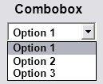
Création
Pour créer une combobox, il faut appeler CreateWindow en spécifiant "COMBOBOX" comme classe.
Néanmoins, cela ne suffit pas, car comme vous l'avez vu, il y a plusieurs possibilités. Ce qui va nous intéresser est donc l'attribut de style. En plus de spécifier les styles habituels (WM_CHILD,WM_VISIBLE), vous pouvez spécifier un ou plusieurs de ces styles :
CBS_AUTOHSCROLL : défile automatiquement le texte vers la droite dans le contrôle EDIT quand l'utilisateur tape un caractère à la fin de la ligne. Si ce style n'est pas défini, l'utilisateur ne peut saisir plus de caractères que ceux qui tiennent dans le contrôle EDIT.
CBS_DISABLENOSCROLL : dessine une barre de défilement vertical désactivée quand il n'y a pas assez d'éléments. Sans ce style, la barre verticale n'est pas affichée.
CBS_DROPDOWN : similaire à CBS_SIMPLE, sauf que la liste n'est pas affichée tant que l'utilisateur ne clique pas sur le contrôle EDIT.
CBS_DROPDOWNLIST : similaire à CBS_DROPDOWN, sauf que le contrôle EDIT ne peut pas être modifié, et affiche le texte de l'élément sélectionné (ou rien si aucun élément n'est sélectionné).
CBS_HASSTRINGS : spécifie une COMBOBOX dessinée par l'utilisateur, contenant des chaînes de caractères.
CBS_LOWERCASE : convertit en minuscules tous les textes.
CBS_NOINTEGRALHEIGHT : spécifie que la taille de la COMBOBOX soit exactement celle spécifiée par l'application, au lieu d'arrondir pour n'afficher que des éléments entiers.
CBS_OEMCONVERT : convertit le texte entré dans le EDIT vers le set de caractères OEM, puis reconvertit vers le set de caractères Windows.
CBS_OWNERDRAWFIXED : spécifie une COMBOBOX dessinée par l'utilisateur : tous les éléments ont la même hauteur
CBS_OWNERDRAWVARIABLE : spécifie une COMBOBOX dessinée par l'utilisateur : tous les éléments n'ont pas la même hauteur.
CBS_SIMPLE : affiche une liste en permanence, et pas seulement quand l'utilisateur clique dessus. La sélection est affichée dans le EDIT.
CBS_SORT : trie automatiquement les chaînes de caractères.
CBS_UPPERCASE : convertit automatiquement en majuscules les caractères.
Notifications
CBN_CLOSEUP
Cette notification est envoyée lorsque la liste déroulante a été fermée.
CBN_DBLCLK
Cette notification est envoyée lorsque l'utilisateur double-clique sur un élément de la liste.
CBN_DROPDOWN
Cette notification est envoyée lorsque la liste déroulante a été ouverte.
CBN_EDITCHANGE
Cette notification est envoyée lorsque le texte (ou une portion de texte) de l'EDIT a été modifié (soit parce que l'utilisateur a sélectionné un élément, soit parce qu'il a entré du texte).
CBN_EDITUPDATE
Cette notification est envoyée lorsque le texte (ou une portion de texte) de l'EDIT a été modifié (soit parce que l'utilisateur a sélectionné un élément, soit parce qu'il a entré du texte).
CBN_SELCHANGE
Cette notification est envoyée lorsque la sélection en cours de la liste a changé.
CBN_SELENDCANCEL
Cette notification est envoyée lorsque l'utilisateur clique sur un élément, puis clique sur un autre contrôle, annulant alors la sélection.
CBN_SELENDOK
Cette notification est envoyée lorsque l'utilisateur clique sur un élément, puis ferme la liste, acceptant alors la sélection.
Messages
Ces messages peuvent être envoyés au contrôle avec la fonction :
SendMessage(hCtl,iCode,wParam,lParam)
Pour chaque message, je décrirai le rôle et la signification de wParam et lParam et de la valeur retournée.
CB_ADDSTRING
Ajoute un élément à la liste (une chaîne de caractères).
wParam : 0.
lParam : pointeur vers la chaîne de caractères.
Valeur de retour : index de l'élément ajouté (relatif à 0).
CB_DELETESTRING
Supprime un élément de la liste (une chaîne de caractères).
wParam : index de l'élément (relatif à 0).
lParam : 0.
Valeur de retour : le nombre d'éléments restants dans la liste, ou CB_ERR en cas d'erreur.
CB_FINDSTRING
Ce message permet de rechercher un élément qui commence par une chaîne de caractères spécifiée.
wParam : spécifie l'index du précédent élément trouvé (relatif à 0), ou -1 pour commencer du début.
lParam : pointeur sur une chaîne de caractères qui contient les caractères à rechercher.
Valeur de retour : index (relatif à 0) de l'élément trouvé, ou CB_ERR si aucun.
CB_FINDSTRINGEXACT
Ce message permet de rechercher une chaîne de caractères qui correspond exactement à celle spécifiée.
wParam : spécifie l'index du précédent élément trouvé (relatif à 0), ou -1 pour commencer du début.
lParam : pointeur sur la chaîne de caractères à rechercher.
Valeur de retour : index (relatif à 0) de l'élément trouvé, ou CB_ERR si aucun.
CB_GETCOUNT
Ce message permet de connaître le nombre d'éléments qu'il y a dans la liste.
wParam : 0.
lParam : 0.
Valeur de retour : le nombre d'éléments, ou CB_ERR en cas d'erreur
CB_GETCURSEL
Ce message permet de connaître l'index de l'élément sélectionné.
wParam : 0.
lParam : 0.
Valeur de retour : index de l'élément sélectionné (relatif à 0), ou CB_ERR si aucun.
CB_GETDROPPEDSTATE
Ce message permet de savoir si la liste est déroulée ou non.
wParam : 0.
lParam : 0.
Valeur de retour : TRUE si elle déroulée, et FALSE sinon.
CB_GETITEMDATA
Ce message permet de récupérer la valeur associée à un élément de la liste par le message CB_SETITEMDATA.
wParam : index de l'élément (relatif à 0).
lParam : 0.
Valeur de retour : valeur associée, ou CB_ERR en cas d'erreur.
CB_GETLBTEXT
Ce message permet de récupérer le texte d'un élément.
wParam : index de l'élément (relatif à 0).
lParam : pointeur vers la chaîne de caractères qui reçoit le texte.
Valeur de retour : longueur du texte (sans le caractère nul), ou CB_ERR en cas d'erreur.
CB_GETLBTEXTLEN
Ce message permet de récupérer la longueur du texte d'un élément.
wParam : index de l'élément (relatif à 0).
lParam : 0.
Valeur de retour : longueur du texte (sans le caractère nul), ou CB_ERR en cas d'erreur.
CB_INSERTSTRING
Ce message permet d'insérer une chaîne de caractères dans la liste.
wParam : index de la position à laquelle insérer la chaîne, ou -1 pour l'ajouter à la fin de la liste.
lParam : pointeur vers la chaîne de caractères.
Valeur de retour : index de l'élément inséré, ou CB_ERR/CB_ERRSPACE en cas d'erreur.
CB_LIMITTEXT
Ce message permet de limiter le texte écrit par l'utilisateur dans le contrôle EDIT.
wParam : nombre maximum de caractères (caractère nul non compris).
lParam : 0.
Valeur de retour : TRUE
CB_RESETCONTENT
Ce message permet de supprimer tous les éléments de la liste.
wParam : 0.
lParam : 0.
Valeur de retour : CB_OKAY
CB_SETCURSEL
Ce message permet de définir l'élément sélectionné.
wParam : index de l'élément (relatif à 0), ou -1 pour n'en sélectionner aucun et effacer le contrôle EDIT.
lParam : 0.
Valeur de retour : index de l'élément sélectionné, ou CB_ERR en cas d'erreur.
CB_SETITEMDATA
Ce message permet d'associer une valeur à un élément de la liste.
wParam : index de l'élément (relatif à 0).
lParam : valeur à associer.
Valeur de retour : CB_ERR en cas d'erreur.
CB_SHOWDROPDOWN
Ce message permet de montrer où cacher la liste.
wParam : TRUE pour afficher la liste, et FALSE pour la cacher.
lParam : 0.
Valeur de retour : TRUE
Exemple
Ceci est le code complet d'un exemple utilisant la combobox :
Une list-Box (liste de choix en français) est un contrôle qui contient une liste d'items que l'utilisateur peut choisir comme dans un menu déroulant. On utilise ce contrôle quand l'application doit présenter une liste de noms, des noms de fichiers par exemple, parmi lesquels l'utilisateur fait un choix. Il sélectionne une chaîne en cliquant dessus. La sélection est en surbrillance, et une notification est envoyée à la fenêtre parent.
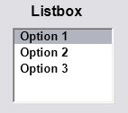
Création
Pour créer une list-box, il faut appeler CreateWindow en spécifiant "LISTBOX" dans la classe. Ou bien dans un fichier ressource, on écrira par exemple :
CONTROL "", ID_NOMDELALISTBOX, "LISTBOX", WS_CHILD | WS_VISIBLE, x, y, largeur, hauteur
Néanmoins, cela ne suffit pas, car comme vous vous en doutez, nous avons plusieurs possibilités pour créer notre contrôle. Ce qui va nous intéresser est donc l'attribut de style. En plus de spécifier les styles habituels (WM_CHILD,WM_VISIBLE), vous pouvez spécifier un ou plusieurs de ces styles spécifiques qui commencent tous par "LSB_":
LBS_COMBOBOX : notifie à la list-box qu'elle fait partie d'une combo-box (contrôle formé par la réunion d'une list-box et d'un contrôle d'édition). Ceci permet la coordination entre les deux contrôles, de telle sorte qu'ils présentent une interface utilisateur unifiée (UI). La combo-box doit définir ce style. Si ce style est spécifié par la list-box, une erreur en résultera.
LBS_DISABLENOSCROLL: affiche une barre verticale de défilement, désactivée quand la boîte ne contient pas assez d'items pour les faire défiler. Si vous ne définissez pas ce style, la barre de défilement sera cachée quand la list-box ne contiendra pas assez d'éléments.
LBS_EXTENDEDSEL : permet la sélection de plusieurs items, en utilisant la touche SHIFT et la souris, ou une combinaison de touches particulières.
LBS_HASSTRINGS : spécifie que la list-box contient des items constitués de chaînes de caractères. La list-box conserve la mémoire et les adresses des chaînes de caractères. Ainsi, l'application peut utiliser le message MB_GETTEXT pour rechercher le texte pour un item particulier. Par défaut, toutes les list-box ont ce style, à l'exception des list-box qui se redessinent elles-mêmes. Vous pouvez créer une list-box qui se redessine soit avec ce style, soit sans ce style.
LBS_MULTICOLUMN : définit une list-box multi-colonnes qui défile horizontalement. Le message LB_SETCOLUMNWIDTH définit la largeur des colonnes.
LBS_MULTIPLESEL : une chaîne est sélectionnée à chaque clic. L'utilisateur peut sélectionner plusieurs chaînes.
LBS_NODATA : définissez ce style quand le nombre d'items dans la list-box dépasse une centaine. Une list-box no-data doit aussi avoir le style LBS_OWNERDRAWFIXED, mais ne doit pas avoir le style LBS_SORT ou LBS_HASSTRINGS. Cette list-box ressemble à une list-box qui se redessine, sauf qu'elle ne contient pas de donnée (data), de chaîne ou de bitmap pour un item. Les commandes pour ajouter, insérer, ou supprimer un item ignorent toujours toute donnée spécifique de l'item ; une requête pour trouver une chaîne à l'intérieur de la list-box échoue toujours. Le système envoie le message WM_DRAWITEM à la fenêtre propriétaire quand un item doit être dessiné. Le membre itemID de la structure DRAWITEMSTRUCT passé avec le message WM_DRAWITEM définit le numéro de ligne de l'item à redessiner. Une list-boxno-data ne peut pas envoyer un message WM_DELEITEM.
LBS_NOINTEGRALHEIGHT : définit si la taille de la list-box est exactement la taille spécifiée par l'application quand elle l'a créée. Normalement, le système redimensionne la list-box pour qu'elle n'affiche pas d'item partiellement.
LBS_NOREDRAW : spécifie que l'apparence de la list-box n'est pas remise à jour après une modification. Pour changer le mode de mise à jour, utilisez le message WM_SETREDRAW.
LBS_NOSEL : spécifie que la list-box contient des items qui peuvent être vus mais pas sélectionnés.
LBS_NOTIFY : notifie la fenêtre parent à l'aide d'un message d'entrée chaque fois que l'utilisateur clique ou double-clique sur une chaîne dans la list-box.
LBS_OWNERDRAWFIXED : spécifie que le "propriétaire" de la list-box gère la réactualisation de son contenu et veille à ce que les items de la list-box conservent la même hauteur. La fenêtre propriétaire reçoit le message WM_MEASUREITEM quand la list-box est créée, et le message WM_DRAWITEM quand l'aspect visuel de la list-box a changé.
LBS_OWNERDRAWVARIABLE : spécifie que le propriétaire de la list-box est responsable de l'actualisation de son contenu, et que les items dans la list-box ont une hauteur variable. La fenêtre propriétaire reçoit le message WM_MEASUREITEM pour chaque item dans une combo-box quand la combo-box est créée, et WM_DRAWITEM quand l'aspect visuel de la combo-box change.
LBS_SORT : met les chaînes de la list-box dans l'ordre alphabétique.
LBS_STANDARD : met les chaînes de la list-box dans l'ordre alphabétique. La fenêtre parent reçoit un message d'entrée chaque fois que l'utilisateur clique ou double clique sur une chaîne. La list-box a des bords sur tout son pourtour.
Les notifications
L'utilisateur envoie des requêtes d'édition en utilisant le clavier ou la souris. Le système envoie chaque requête à la fenêtre parent du contrôle dans le message WM_COMMAND. J'ai considéré que vous savez comment interagir avec ce message, et je décrirai donc ici uniquement les codes de notification.
LBN_DBLCLK
Notification envoyée par la list-box quand l'utilisateur double-clique sur une chaîne dans la list-box.
LBN_SELCANCEL
Une application envoie cette notification quand l'utilisateur annule la sélection dans une list-box.
LBN_SELCHANGE
Une application envoie cette notification quand la sélection dans une list-box vient de changer.
LBN_SETFOCUS
Une application envoie cette notification quand la list-box reçoit le focus clavier.
Parmi les notifications, il existe également des messages de types WM_, qui seront reçus par la procédure de la fenêtre parent.
WM_CTLCOLORLISTBOX
Ce message est envoyé à la fenêtre parent de la list-box avant que le système ne dessine la list-box. En répondant à ce message, la fenêtre parent peut définir les couleurs du texte et du fond de la list-box en utilisant le dispositif de handle contextuels spécifique. La list-box sera coloriée avec la brosse retournée par ce message.
Les messages
Ces messages peuvent être envoyés au contrôle avec la fonction :
SendMessage(hCtl,iCode,wParam,lParam)
Pour chaque message, je décrirai le rôle et la signification de wParam, de lParam et de la valeur retournée.
LB_ADDFILE
L'application envoie ce message pour ajouter le nom de fichier spécifique à la list-box qui contient une liste de répertoires.
wparam : 0
lParam : pointeur sur un buffer qui définit le nom du fichier à ajouter.
Valeur retournée : index du fichier ajouté dont la série commence à 0, ou LB_ERR si une erreur survient.
LB_ADDSTRING
Une application envoie ce message pour ajouter une chaîne dans la list-box. Si la list-box n'a pas le style LBS_SORT, la chaîne est ajoutée à la fin de la liste. Autrement, la chaîne est insérée dans la liste, et la liste est réorganisée.
wparam : 0
lParam : pointeur sur une chaîne terminée par un caractère nul qui sera ajouté.
Valeur retournée : index d'origine 0 de la chaîne dans la list-box signifie que le message a réussi. LB_ERR indique qu'une erreur est survenue. LB_ERRSPACE indique qu'il n'y a pas assez de place pour stocker la nouvelle chaîne.
LB_DELETESTRING
Ce message est envoyé par l'application pour supprimer une chaîne dans la list-box.
wparam : index d'origine 0 de la chaîne dans la list-box.
lParam : 0
Valeur retournée : le nombre de chaînes supprimées dans la liste signifie que l'opération a réussi. LB_ERR indique que l'index spécifié est un index supérieur au nombre d'items de la liste.
LB_FINDSTRING
Ce message est envoyé par l'application pour trouver la première chaîne dans la list-Box contenant le préfixe précisé.
wparam : index, faisant partie d'une suite commençant par zéro, de l'item placé avant le premier item recherché. Quand la recherche atteint la fin de la liste, elle se poursuit en revenant au début de la list-box jusqu'à l'item spécifié par le paramètre d'index de départ. Si l'index de départ est -1, la recherche va du début à la fin de la list-box.
lParam : pointeur sur une chaîne à terminaison nulle qui contient le préfixe recherché. La recherche est indépendante de la case ; ainsi, cette chaîne peut contenir n'importe quelle combinaison de lettres majuscules ou minuscules.
Valeur retournée : si c'est l'index de l'item associé, le message a réussi. LB_ERR indique que la recherche est infructueuse.
LB_FINDSTRINGEXACT
Ce message est envoyé par une application pour trouver la première chaîne associée à la chaîne précisée dans le paramètre lParam.
wparam : index (série d'origine 0) de l'item situé avant le premier item où commence la recherche. Quand la recherche atteint la fin de la liste, elle se poursuit en revenant au début de la list-box jusqu'à l'item spécifié par le paramètre d'index de départ. Si l'index de départ est -1, la recherche va du début à la fin de la list-box.
lParam : pointeur sur une chaîne à terminaison nulle contenant le nom complet du fichier recherché avec son extension. La recherche est indépendante de la case ; ainsi, cette chaîne peut contenir n'importe quelle combinaison de lettres majuscules ou minuscules.
Valeur retournée : si c'est l'index de l'item associé, le message a réussi. LB_ERR indique que la recherche est infructueuse.
LB_GETCARETINDEX
Ce message est envoyé par une application pour déterminer l'index de l'item ayant le focus dans une list-box à sélection multiple. L'item peut ou ne peut pas être sélectionné.
wparam : 0
lParam : 0
Valeur retournée : index de l'item de la list-box ayant le focus. Si la list-box est une list-box à sélection unique, la valeur est l'index de l'item sélectionné, s'il y en a un.
LB_GETCOUNT
Ce message est envoyé par l'application pour rechercher le nombre d'items qu'il y a dans une list-box.
wparam : 0
lParam : 0
Valeur retournée : nombre d'items dans la list-box si le message réussit. LB_ERR indique qu'une erreur s'est produite.
LB_GETCURSEL
Ce message est envoyé par une application pour recherche l'index de l'item sélectionné, s'il y en a un, dans une list-box à sélection unique.
wparam : 0
lParam :0
Valeur retournée : dans une list-box à une seule sélection, cette valeur est l'index de l'item sélectionné. S'il n'y a pas de sélection, la valeur retournée est LB_ERR.
LB_GETITEMDATA
Ce message est envoyé par une application pour trouver la valeur 32 bit définie par l'application, et associée à l'item spécifié de la list-box.
wparam : index de l'item
lParam : 0
Valeur retournée : valeur 32 bits associée à l'item, ou LB-ERR si une erreur est survenue. Si l'item est dans une list-box avec une auto-remise à jour, et qui a été créée sans le style LBS_HASSTRING, cette valeur 32 bits sera dans le paramètre lParam des messages LB_ADDSTRING ou LB_INSERTSTRING, qui ajoutent un item à la list-box. Autrement, c'est la valeur de lParam du message LB_SETITEMDATA.
LB_GETITEMRECT
Ce message est envoyé par l'application pour rechercher les dimensions du rectangle qui limite un item de la list-box quand il est normalement affiché dans la list-box.
wparam : index de l'item
lParam : pointeur sur une structure RECT qui reçoit les coordonnées clientes de l'item dans la list-box.
Valeur retournée : LB_ERR s'il y a une erreur.
LB_GETSELITEMS
Ce message est envoyé par une application pour remplir un buffer avec un tableau d'entiers (integer) qui définit les numéros des items dans la sélection d'items d'une list-box à sélection multiple.
wparam : nombre maximum d'items sélectionnés dont les numéros seront placés dans le buffer.
lParam : pointeur sur le buffer assez grand pour contenir le nombre d'entiers défini dans le paramètre lParam.
Valeur retournée : nombre d'items placés dans le buffer. Si la list-box est à sélection unique, la valeur retournée est LB_ERR. Ce message retourne aussi LB_ERR si vous passez des paramètres invalides à une list-box à sélection multiple.
LB_GETSELCOUNT
Ce message est envoyé par une application pour rechercher le nombre total d'items sélectionnés dans une list-box à sélection multiple.
wparam : 0
lParam : 0
Valeur retournée : nombre d'items sélectionnés dans la list-box si le message réussit. LB_ERR si la list-box est à sélection unique.
LB_GETTEXT
Ce message est envoyé par une application pour rechercher une chaîne dans une list-box.
wparam : index de la chaîne cherchée.
lParam : pointeur sur un buffer qui reçoit la chaîne. Le buffer doit avoir une taille suffisante pour contenir la chaîne avec un caractère nul de terminaison. Un message LB_GETTEXTLEN peut être envoyé après LB_GETTEXT pour rechercher la longueur, en caractères, de la chaîne.
Valeur retournée : longueur de la chaîne, en caractères sans le caractère nul de terminaison si le message réussit. LB_ERR indique que l'index n'est pas un index valide.
LB_GETTEXTLEN
Une application envoie le message LB_GETTEXTLEN pour retrouver la longueur d'une chaîne dans la list-box.
wparam : index (origine 0) de la chaîne.
lParam : 0
Valeur retournée : longueur de la chaîne, en CHAR, en excluant le caractère nul terminal. Sous certaines conditions, cette valeur peut être supérieure à la longueur du texte. Si wParam ne définit pas un index valide, cette valeur est LB_ERR.
LB_INSERTSTRING
Une application envoie ce message pour insérer une chaîne dans une list-box. Différemment du message LB_ADDSTING, ce message ne produit pas de liste que l'on pourrait trier avec le style LBS_SORT.
wparam : définit l'index (d'origine 0) de la position où il faut insérer l'item. Si ce paramètre est 1, la chaîne sera ajoutée à la fin de la liste.
lParam : pointeur sur la chaîne à terminaison nulle que l'on veut insérer.
Valeur retournée : index de la position à laquelle la chaîne doit être insérée. Si une erreur survient, la valeur retournée est LB_ERR. S'il n'y a pas assez de place pour stocker la nouvelle chaîne, la valeur retournée sera LB_ERRSPACE.
LB_RESETCONTENT
L'application envoie ce message pour supprimer tous les items d'une list-box.
wparam : 0
lParam : 0
Valeur retournée : ne retourne pas de valeur.
LB_SETCURSEL
Une application envoie ce message pour sélectionner une chaîne et la faire apparaître en la faisant défiler dans la zone visible, si nécessaire. Quand la nouvelle chaîne est sélectionnée, la list-box supprime la surbrillance de la chaîne sélectionnée préalablement.
wparam : définit l'index (d'origine 0) de la chaîne sélectionnée. Si ce paramètre est -1, la list-box est définie comme n'ayant pas de sélection.
lParam : 0
Valeur retournée : si une erreur survient, la valeur est LB_ERR. Si wParam est -1, la valeur retournée est LB_ERR même s'il n'y a pas eu d'erreur.
LB_SETHORIZONTALEXTENT
Une application envoie ce message pour définir la distance de déplacement horizontal (scrolling), en pixels, d'une list-box. Si la largeur de la list-box est inférieure à cette valeur, la barre horizontale fait défiler les items horizontalement. Si la largeur de la list-box est égale ou supérieure à cette valeur, la barre horizontale de défilement est cachée.
wparam : définit le nombre de pixels de déplacement de la list-box.
lParam : 0
Valeur retournée : pas de valeur retournée.
LB_SETITEMDATA
Une application envoie ce message pour définir une valeur associée à l'item spécifié d'une list-box.
wparam : définit l'index (d'origine 0) de l'item. Si cette valeur est -1, la valeur de lParam sera appliquée à tous les items de la list-box.
lParam : définit la valeur à associer à l'item.
Valeur retournée : si une erreur survient, LB_ERR.
LB_SETSEL
Une application envoie ce message pour sélectionner une chaîne dans une list-box à sélection multiple.
wparam : précise comment le sélection va être définie. Si ce paramètre est TRUE, la chaîne est sélectionnée et mise en surbrillance ; si ce paramètre est FALSE, la surbrillance est annulée et la chaîne n'est pas sélectionnée.
lParam : définit l'index (d'origine 0) de la chaîne choisie. Si ce paramètre est 1, la sélection est ajoutée ou annulée de toutes les chaînes, en fonction du paramètre wParam.
Valeur retournée : LB_ERR en cas d'erreur.
Exemple
#include <windows.h>
#include <stdio.h>
#define ID_BOUTON1 110
#define ID_BOUTON2 111
//variables globales
HINSTANCE inst;
HWND hListBox[2]; //handle des deux contrôles d'édition
//Afficher une list-Box et la remplir
HWND afficheListBox (HWND hwnd)
{
HWND hListBox=CreateWindow(
"LISTBOX","",
WS_VISIBLE|WS_CHILD|WS_BORDER |LBS_NOTIFY,
50,50,150,200,hwnd,NULL,inst,NULL);
//Entrer des items dans la list-box
SendMessage (hListBox, LB_ADDSTRING ,0,(LPARAM)"Première entrée");
SendMessage (hListBox, LB_ADDSTRING ,0,(LPARAM)"Deuxième entrée");
SendMessage (hListBox, LB_ADDSTRING ,0,(LPARAM)"Troisième entrée");
SendMessage (hListBox, LB_ADDSTRING ,0,(LPARAM)"Quatrième entrée");
return hListBox;
}
//Boutons pour la démo
HWND boutonMessage(HWND hwnd,HMENU code,long x, long y, char * texte)
{
HWND hBouton=CreateWindow(
"BUTTON",
texte,
WS_CHILD|WS_VISIBLE|BS_PUSHBUTTON,
x,y,
350,30,
hwnd,
code,
inst,
NULL);
return hBouton;
}
LRESULT CALLBACK Procedure (HWND hwnd, UINT message, WPARAM wParam, LPARAM lParam)
{
static HWND hBouton[1]={0};
char texte[5]={0},texte2[50]={0};
switch (message)
{
//afficher les contrôles d'édition à la réception du message WM_CREATE
case WM_CREATE:
hListBox[0]=afficheListBox (hwnd);
//afficher les boutons pour la démo
hBouton[0]= boutonMessage(hwnd, (HMENU)ID_BOUTON1,220,90,"Message LB_GETCURSEL: item sélectionné ");
return 0;
case WM_COMMAND:
switch (LOWORD(wParam))
{
//test du message LB_GETCURSEL
case ID_BOUTON1 :
//Trouver le numéro de la ligne sélectionnée, et transformer le résultat en chaîne
sprintf(texte,"%d",(SendMessage(hListBox[0],LB_GETCURSEL,0,0)+1));
//Afficher une boîte de dialogue
//s'il y a une sélection
if (SendMessage(hListBox[0],LB_GETCURSEL,0,0)!= LB_ERR)
{
strncat(texte2,"Vous avez sélectionné la ligne ",50);
strncat(texte2,texte,50);
}
else //pas de sélection
{
strncat(texte2,"Vous n'avez sélectionné aucune ligne." ,50);
}
MessageBox(hwnd,(LPCTSTR )texte2,"",MB_OK|MB_ICONWARNING);
break;
//ajoutez d'autres tests et d'autres boutons si vous le voulez
//case ID_BOUTON2:
//autre test
//breaks;
}
switch (HIWORD(wParam))
{
case LBN_SELCHANGE :
char temp[256] = "";
SendMessage(hListbox, LB_GETTEXT, SendMessage(hListbox[0], LB_GETCURSEL, 0, 0), temp);
MessageBox(hwnd,temp, "Item sélectionné :", MB_ICONINFORMATION);
break;
}
return 0;
case WM_CLOSE:
DestroyWindow(hwnd);
return 0;
case WM_DESTROY:
PostQuitMessage(0);
return 0;
default:
return DefWindowProc(hwnd, message, wParam, lParam);
}
}
int WINAPI WinMain(HINSTANCE cetteInstance, HINSTANCE precedenteInstance,
LPSTR lignesDeCommande, int modeDAffichage)
{
//Variables de la fonction principale
MSG msg;
WNDCLASS wc;
HWND hwnd;
inst = cetteInstance;
// Structure de la classe de la fenêtre principale
wc.style = 0 ;
wc.lpfnWndProc = Procedure;
wc.cbClsExtra = 0;
wc.cbWndExtra = 0;
wc.hInstance = cetteInstance;
wc.hIcon = NULL;
wc.hCursor = LoadCursor(NULL, IDC_ARROW);
wc.hbrBackground = (HBRUSH)(1+ COLOR_BTNFACE);
wc.lpszMenuName = NULL;
wc.lpszClassName = "ClassePrincipale";
//Enregistrer la classe de fenêtre
if(!RegisterClass(&wc)) return FALSE;
hwnd = CreateWindow("ClassePrincipale", "Démo du contrôle List-Box",WS_OVERLAPPEDWINDOW ,
200,100,600 ,300, NULL, NULL, cetteInstance, NULL);
if (!hwnd) return FALSE;
ShowWindow(hwnd,SW_SHOW);
UpdateWindow( hwnd );
//Boucle de message
while (GetMessage(&msg, NULL, 0, 0))
{
TranslateMessage(&msg);
DispatchMessage(&msg);
}
return msg.wParam;
}
Le slider, ou trackbar, (glissière en français) est très utilisé dans la plupart des programmes d'aujourd'hui. Vous l'avez sûrement utilisé sans même savoir ce qui se passait derrière, chose que je propose de faire ici. :p
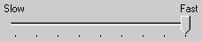
Il est loin d'être particulièrement difficile, et je ne vous cacherai pas que sa préparation est plus l'objet d'erreurs que son utilisation. En effet, il fait partie de la Common Controls Library, ou bibliothèque des contrôles communs, que vous devrez intégrer et lier au projet.
Préparation préalable
Intégration
Afin de déclarer le slider, ou plutôt sa classe, vous aurez besoin d'insérer dans votre projet :
#include <commctrl.h>
Linker
Et en ce qui concerne le linker, vous devrez ajouter l'entrée -lcomctl32, ou sous C::B comctl32.
En bref, rien de bien sorcier. La seule source d'erreurs est une potentielle faute d'orthographe. ;)
Création
Concernant sa création, vous pouvez passer comme d'habitude par CreateWindow, ou par les template de ressource. Le mot-clé à utiliser est alors CONTROL. Je vous l'avais dit qu'il était générique... c'est le mot-clé se rapprochant le plus de CreateWindow. Mais dans les deux cas, le nom de classe à utiliser est TRACKBAR_CLASS. En plus de spécifier cette constante prédéfinie au 2ème argument de CreateWindow (ou au 3ème de CONTROL), vous pouvez utiliser un ou plusieurs, par associations de flag, des styles suivants :
TBS_AUTOTICKS : le slider comporte une marque (trait) pour chaque palier d'incrémentation déterminé à partir de ses marges.
TBS_BOTH : le slider comporte des marques sur ses deux côtés.
TBS_BOTTOM : le slider comporte des marques seulement en-dessous de lui.
TBS_DOWNISLEFT : utilisé avec un slider vertical, il permet d'inverser le sens d'incrémentation.
TBS_FIXEDLENGTH : permet au curseur de changer sa taille en recevant le message TBS_SETTHUMBLENGTH.
TBS_HORZ : style par défaut ; le slider est orienté horizontalement.
TBS_LEFT : le slider comporte des marques sur son côté gauche.
TBS_NOTHUMB : le slider ne comporte pas de curseur.
TBS_NOTICKS : le slider ne comporte pas de marques.
TBS_REVERSED : le slider est inversé ; son sens d'incrémentation est alors de la droite vers la gauche.
TBS_RIGHT : même effet que TBS_LEFT, mais sur le côté droit.
TBS_TOOLTIPS : le slider supporte les Tooltip, ou ballons d'informations. Sa position pourra alors être changée avec TBM_SETTIPSIDE.
TBS_TOP : le slider comporte des marques au-dessus de lui.
TBS_VERT : le slider est alors orienté verticalement.
Sa création étant maintenant démystifiée, passons maintenant aux notifications que ce contrôle peut envoyer, et ensuite aux messages qu'il peut recevoir et traiter.
Notifications
Je vais décrire ici les notifications envoyées par le contrôle via le message WM_COMMAND (sauf mention contraire). Il est assumé que vous savez comment interagir avec ce message, et je décrirai donc ici uniquement les codes de notifications.
WM_HSCROLL ou WM_VSCROLL
Envoyés à la procédure de la fenêtre parent, ces notifications indiquent un drag du curseur par l'utilisateur : - horizontal, pour un slider orienté horizontalement - vertical, pour un slider orienté verticalement.
TB_THUMBTRACK
Cette notification est envoyée lorsque l'utilisateur bouge le curseur.
TB_THUMBPOSITION
Cette notification est envoyée lorsque l'utilisateur a bougé le curseur, puis relâché la souris (équivaut donc à TB_THUMBTRACK + WM_LBUTTONUP).
Messages
Ces messages peuvent être envoyés au contrôle avec la fonction :
SendMessage(hCtl,iCode,wParam,lParam)
Pour chaque message je décrirai le rôle et la signification de wParam et lParam, ainsi que la valeur retournée.
TBM_CLEARSEL
Ce message permet de nettoyer la sélection en cours.
wParam : (BOOL) s'il vaut TRUE, redessine le slider.
lParam : 0.
Valeur de retour : aucune.
TBM_CLEARTICS
Ce message permet de supprimer les marques du slider, exceptées la première et la dernière.
wParam : (BOOL) s'il vaut TRUE, redessine le slider.
lParam : 0.
Valeur de retour : aucune.
TBM_GETCHANNELRECT
Ce message permet de récupérer les dimensions du rectangle limite du slider, dans lequel il évolue.
wParam : 0.
lParam : (LPRECT) adresse d'une variable de type RECT qui va recevoir les dimensions.
Valeur de retour : aucune.
TBM_GETPOS
Ce message permet de récupérer la position courante du curseur.
wParam : 0.
lParam : 0.
Valeur de retour : valeur 32 bits représentant la position courante.
TBM_GETRANGEMAX ou TBM_GETRANGEMIN
Ces messages permettent de récupérer la valeur maximale ou minimale que peut prendre le slider (ses bornes).
wParam : 0.
lParam : 0.
Valeur de retour : valeur 32 bits désignant la valeur de la borne spécifiée.
TBM_GETTHUMBLENGTH
Ce message permet de récupérer la longueur du curseur du slider.
wParam : 0.
lParam : 0.
Valeur de retour : longueur du curseur (en pixels).
TBM_GETTHUMBRECT
Ce message permet de récupérer les coordonnées et dimensions du curseur.
wParam : 0.
lParam : 0.
Valeur de retour : (RECT) dimensions et positions du curseur.
TBM_GETTOOLTIPS
Ce message permet de récupérer un handle sur un ballon de message associé au slider s'il y a lieu.
wParam : 0.
lParam : 0.
Valeur de retour : (HWND) handle du tooltip assigné, s'il y en a un. Dans le cas contraire, NULL.
TBM_SETPOS
Ce message permet de définir la position courante du curseur dans le slider.
wParam : (BOOL) définit l'état de dessin du contrôle : s'il vaut TRUE, le slider sera redessiné après.
lParam : (LONG) définit la nouvelle position du curseur, en unités logiques, comprise entre les bornes du slider.
Valeur de retour : aucune.
TBM_SETRANGE
Ce message permet de définir les bornes du slider.
wParam : (BOOL) définit l'état de dessin du contrôle : s'il vaut TRUE, le slider sera redessiné après.
lParam : (LONG) nouvelles bornes, définies grâce à la macro MAKELONG(min, max)
Valeur de retour : aucune.
TBM_SETRANGEMAX ou TBM_SETRANGEMIN
Ces messages ont la même fonction que TBM_SETRANGE, mais sur une seule des bornes, spécifiée dans leur nom.
wParam : (BOOL) définit l'état de dessin du contrôle : s'il vaut TRUE, le slider sera redessiné après.
lParam : (LONG) définit la nouvelle borne (minimale ou maximale).
Valeur de retour : aucune.
TBM_SETTHUMLENGTH
Ce message permet de définir la longueur du curseur du slider.
wParam : (UINT) longueur du curseur, en pixels.
lParam : 0.
Valeur de retour : aucune.
TBM_SETTICFREQ
Ce message permet de définir la fréquence des marques.
wParam : (WORD) fréquence des marques (1 = chaque palier).
lParam : 0.
Valeur de retour : aucune.
TBM_SETTIPSIDE
Ce message permet de définir le côté du slider où sera affiché le ballon d'infos.
wParam : (int) définit le côté du ballon : peut alors prendre les valeurs TBTS_TOP (haut), TBTS_LEFT (gauche), TBTS_RIGHT (droite), TBTS_BOTTOM (bas).
lParam : 0.
Valeur de retour : précédente position du ballon.
TBM_SETTOOLTIPS
Ce message permet de définir le ballon d'informations associé au slider.
wParam : (HWND) handle d'un ballon déjà créé.
lParam : 0.
Valeur de retour : aucune.
Exemple
Le présent exemple montre quelques fonctions permettant de créer ou manipuler le slider simplement (à utiliser, non compilable tel quel) :
Ce contrôle est l'un des plus simples et des plus utiles qui soit : il permet d'afficher un libellé de texte, une icône ou une image, mais qui n'interagit pas avec l'utilisateur, d'où son nom.
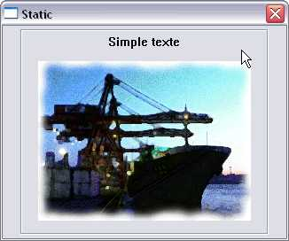
Création
Pour créer un STATIC, il faut appeler CreateWindow avec comme classe "STATIC", et ajouter en plus des styles classiques (WS_CHILD,WS_VISIBLE) un ou plusieurs de ces styles :
SS_BITMAP : spécifie une boîte rectangulaire qui permet d'afficher une image bitmap. La taille du contrôle est déterminée automatiquement en fonction de celle de l'image.
SS_BLACKFRAME : spécifie une boîte rectangulaire avec un cadre de la même couleur que celui des fenêtres (noir par défaut).
SS_BLACKRECT : spécifie une boîte rectangulaire remplie avec la même couleur que le cadre des fenêtres (noir par défaut).
SS_CENTER : spécifie une boîte rectangulaire avec du texte centré. Si le texte est trop long, il est automatiquement réparti en plusieurs lignes.
SS_ETCHEDFRAME : dessine le cadre en utilisant l'attribut EDGE_ETCHED.
SS_ETCHEDHORZ : dessine les angles du haut et du bas en utilisant l'attribut EDGE_ETCHED.
SS_ETCHEDVERT : dessine les angles de gauche et droite en utilisant l'attribut EDGE_ETCHED.
SS_GRAYRECT : spécifie une boîte rectangulaire avec un cadre de la couleur en cours du fond d'écran (gris par défaut).
SS_GRAYFRAME : spécifie une boîte rectangulaire avec la couleur en cours du fond d'écran (gris par défaut).
SS_ICON : spécifie une boîte rectangulaire qui permet d'afficher une icône (ou un curseur animé). La taille du contrôle est déterminée automatiquement en fonction de celle de l'icône.
SS_LEFT : spécifie une boîte rectangulaire avec du texte aligné à gauche. Si le texte est trop long, il est automatiquement réparti en plusieurs lignes.
SS_LEFTNOWORDWRAP : spécifie une boîte rectangulaire avec du texte aligné à gauche. Si le texte est trop long, il est automatiquement tronqué.
SS_NOPREFIX : prévient l'interprétation du signe & dans le texte comme un raccourci clavier.
SS_NOTIFY : envoie les notifications STN_CLICKED, STN_DBLCLK, STN_DISABLE et STN_ENABLE à la fenêtre parente.
SS_OWNERDRAW : le contrôle doit être dessiné par l'utilisateur.
SS_REALSIZEIMAGE : utilisé avec SS_ICON. Au lieu de considérer la taille de la ressource comme taille du contrôle, la taille retournée par LoadImage est utilisée.
SS_RIGHT : spécifie une boite rectangulaire avec du texte aligné à droite. Si le texte est trop long, il est automatiquement réparti en plusieurs lignes.
SS_RIGHTJUST : utilisé avec SS_ICON ou SS_BITMAP. Lors d'un redimensionnement du contrôle, au lieu de changer la position du coin en bas à droite, c'est la position du coin en haut à gauche qui est modifiée.
SS_SIMPLE : spécifie une boîte rectangulaire avec du texte sur une seule ligne. Aucune modification n'est apportée au texte, même si celui-ci est trop long. Le texte n'apparaît pas grisé si le contrôle est désactivé.
SS_SUNKEN : dessine un cadre créant l'effet d'un renfoncement dans la fenêtre, autour du contrôle.
SS_WHITEFRAME : spécifie une boîte rectangulaire avec un cadre de la même couleur que le fond de la fenêtre (blanc par défaut).
SS_WHITERECT : spécifie une boîte rectangulaire remplie avec la même couleur que le fond de la fenêtre.
Notifications
Je vais décrire ici les notifications envoyées par le contrôle via le message WM_COMMAND (sauf mention contraire) . Il est supposé que vous savez comment interagir avec ce message, et je décrirai donc ici uniquement les codes de notifications.
STN_CLICKED
Ce message est envoyé lorsque l'utilisateur clique sur le contrôle.
STN_DBLCLK
Ce message est envoyé lorsque l'utilisateur double-clique sur le contrôle.
STN_DISABLE
Ce message est envoyé lorsque le contrôle est désactivé.
STN_ENABLE
Ce message est envoyé lorsque le contrôle est activé.
WM_CTLCOLORSTATIC
Ce message est envoyé à la fenêtre parent juste avant que le contrôle ne soit dessiné. Ceci est principalement utile pour changer la couleur du texte, ou du fond du contrôle pour le dessin .
Les paramètres valent alors:
wparam : handle du DC sur lequel dessiner.
lparam : handle du bouton
Valeur de retour : handle d'une brosse qui sera utilisée pour le dessin du fond.
Messages
Ces messages peuvent être envoyés au contrôle avec la fonction :
SendMessage(hCtl,iCode,wParam,lParam)
Pour chaque message, je décrirai le rôle et la signification de wParam, lParam et de la valeur retournée.
STM_GETICON
Ce message permet de récupérer le handle de l'icône associée au contrôle.
wParam : 0.
lParam : 0.
Valeur de retour : handle de l'icône associée, ou NULL si aucune.
STM_GETIMAGE
Ce message permet de récupérer le handle de l'image associée au contrôle.
wParam : spécifie le type de l'image à récupérer. Ce peut être une de ces valeurs :
IMAGE_BITMAP
IMAGE_CURSOR
IMAGE_ENHMETAFILE
IMAGE_ICON
lParam : 0.
Valeur de retour : handle de l'image associée, ou NULL si aucune.
STM_SETICON
Ce message permet de définir l'icône associée au contrôle.
wParam : handle de l'icône.
lParam : 0.
Valeur de retour : handle de l'icône précédemment associée, ou NULL si aucune.
STM_SETIMAGE
Ce message permet de définir l'image associée au contrôle.
wParam : spécifie le type de l'image à définir. Ce peut être une de ces valeurs :
IMAGE_BITMAP
IMAGE_CURSOR
IMAGE_ENHMETAFILE
IMAGE_ICON
lParam : handle de l'image.
Valeur de retour : handle de l'image précédemment associée, ou NULL si aucune.
Exemple
Ceci est le code complet d'un exemple utilisant les STATIC.
Vous allez durant ce chapitre apprendre à gérer l'affichage manuel d'informations dans votre fenêtre : celles ci peuvent être du texte, des formes géométriques (dans ce cas ci on parlera de dessin) ou des images (en général des bitmaps).
L'API windows permet de dessiner dans n'importe quel périphérique (imprimante, écran etc.) sans se préoccuper de son fonctionnement (le reste du travail est effectué grâce aux drivers des périphériques), ce qui, évidemment, est très pratique ;) .
Afin de pouvoir dessiner, nous devons obtenir un handle de contexte de périphérique, traduit en anglais par "Handle on Device Context", ou HDC.
Théorique
Un HDC peut être assimilé, pour une meilleure compréhension, à une surface potentiellement dessinable obtenue par l'appel de GetDC. Cette fonction, prenant comme unique paramètre le handle de la fenêtre dont l'on veut récupérer le DC, retourne un HDC portant sur toute la surface de la fenêtre.
Toutes les fonctions de dessin ne nécessitent généralement qu'un contexte de périphérique. Vous vous demandez alors sûrement comment appliquer des personnalisations temporaires pour chaque dessin ? Eh bien toutes ces personnalisations se passent sur le DC lui-même. La fonction de dessin, utilisant le DC courant, sera lors affectée par les modifications appliquées.
Une fois le DC récupéré, chaque personnalisation possible (changements de couleurs, de fontes...) se fait à l'aide d'une sélection. Cette sélection d'un objet (personnalisation) dans un contexte de périphérique a pour effet de l'appliquer au DC. C'est alors qu'arrive SelectObject. Cette fonction, prenant comme deuxième paramètre l'objet à sélectionner dans le HDC spécifié en premier paramètre, retourne l'ancien objet correspondant avant l'application. Ainsi, pour qu'une couleur seule (par exemple, le vert) soit appliquée sur un HDC, on obtient :
Avant de commencer les cas particuliers, un petit cours sur les couleurs (utilisées partout) s'impose :
Les couleurs
Les couleurs sont gérées différemment de la logique actuelle. Je pense en particulier aux couleurs standards comme le RGB, ou Red Green Blue, avec la teneur de chaque couleur primaire variant entre 0 et 255 : en winAPI, les couleurs et motifs sont gérées par Brosses, ou Brushes, et donc HBRUSH.
D'accord, mais comment passer d'une couleur RGB à une Brush ?
Eh bien, Microsoft pense à nous. ;) Nous avons donc à notre disposition CreateSolidBrush prenant comme seul paramètre la valeur hexadécimale de la couleur, ou une variable COLORREF. Pour transformer la couleur RGB en valeur COLORREF afin de la passer en paramètre à CreateSolidBrush, nous pouvons utiliser la macro RGB. Au final, la syntaxe à utiliser afin de récupérer une brush de couleur RGB est la suivante :
Mais les brosses peuvent aussi être utilisées pour, par exemple, changer de motif. Pour cela, msdn nous propose plusieurs fonctions, parmi lesquelles (à titre d'exemple) CreateHatchBrush, permettant de créer une brosse de motif de pointillés, traits ou autres par le passage du type de motif en premier paramètre, et de sa couleur en deuxième.
Où l'intégrer ?
Tous les dessins peuvent être effectués n'importe où dans le code en récupérant un DC. Seulement, dans le cas d'une superposition d'une autre fenêtre sur celle-ci, tous les dessins se retrouvent effacés. Afin de le contrer, nous devons utiliser un message envoyé par le système quand la fenêtre a besoin d'être redessinée : WM_PAINT.
:( Un scintillement désagréable subsiste...
Exact, la cause en est que les dessins sont alors entièrement redessinés, même s'ils sont toujours visibles. Pour y remédier, il est préférable d'utiliser la fonction BeginPaint à la place de GetDC ; même si elle prend le même paramètre (avec en plus un deuxième : un pointeur sur une structure PAINTSTRUCT pour le stockage... pas importante pour nous) et renvoie aussi un HDC, elle permet de ne redessiner que le strict nécessaire.
N'oubliez pas ce que vous venez d'apprendre afin de l'appliquer à ce qui suit. Rédacteur : Mg++
Avant de l'afficher, une personnalisation du texte peut être exécutée (police, couleur).
Personnalisation du texte
Si vous ne savez pas encore ce que signifie le mot fonte, vous devez alors savoir qu'il s'agit d'un modèle d'écriture pour du texte. Pour vous faire une idée, "Times New Roman", "Arial", "Arial Black", etc... sont des fontes (connues qui plus est). Si vous n'avez toujours pas compris, des fontes sont des polices de caractères :D .
Afin de pouvoir en utiliser lors de fonctions d'affichage de texte, nous devons récupérer un handle de fonte, ou HFONT. La récupération est semblable aux deux précédentes fonctions, et peut être effectuée grâce à CreateFont ou CreateFontIndirect. Comme CreateFont possède un prototype long et détaillé, je préfère présenter l'autre, qui passe indirectement (d'où son nom) par une structure détaillant les spécificités de la police (souligné, gras, italique, police, taille etc...) : LOGFONT.
Avant toute utilisation, certaines structures doivent être remises à zéro : ZeroMemory s'en occupe. Il faut lui passer pour son premier paramètre un pointeur de la structure ciblée, et en deuxième sa taille, donnée par sizeof.
LOGFONT, faisant partie de ce type de structures, doit être initialisée à zéro. Ensuite, vous pouvez :
Choisir la police à utiliser en copiant le nom de la police entre guillemets dans le champ lfFaceName de votre structure LOGFONT. Exemple :
Régler la taille de la fonte en définissant le champ lfHeight de la structure (en pixels). Exemple :
structLogfont.lfHeight = 32;
Choisir de souligner ou barrer le texte en réglant les champs lfUnderline ou lfStrikeOut à TRUE. Exemple :
structLogfont.lfUnderline = TRUE
Régler la grosseur du texte en choisissant une valeur pour le champ lfWeight entre 0 et 900 (par pas de 100, il existe des constantes, comme FW_BOLD [gras] à 700). Exemple :
structLogfont.lfWeight = FW_BOLD;
Une fois la structure définie, vous n'avez plus qu'à passer l'adresse de votre structure au seul paramètre possible de CreateFontIndirect, qui s'occupe de vous retourner le handle de fonte que vous devez récupérer. Exemple :
fonte = CreateFontIndirect(&structLogfont);
Affichage de texte
L'affichage du texte à l'écran s'exerce grâce à :
BOOL TextOut (HDC hdc, int nXStart, int nYStart, LPCTSTR lpString, int cbString);
Le premier paramètre désigne le DC courant, dans lequel va être dessiné le texte :
HDC hdc
Le deuxième désigne à quelle position d'abscisse le texte va commencer à être dessiné :
int nXStart
Le troisième a le même effet que précédemment, mais en ordonnée :
int nYStart
Le quatrième désigne la chaîne de caractères à afficher :
LPCTSTR lpString
Le dernier paramètre désigne le nombre de caractères à afficher (généralement le strlen de la chaîne, mais dans le cas où le nombre donné y est inférieur, la chaîne affichée sera tronquée) :
int cbString
Pour aller plus loin
Vous pouvez :
Rendre le fond du texte transparent en utilisant SetBkMode, prenant comme premier caractère le DC du texte, et en deuxième le mode de remplissage du fond (donc ici TRANSPARENT).
Appliquer une couleur au texte avec SetTextColor, prenant comme premier paramètre le DC du texte, et comme deuxième sa couleur (sous la forme d'une structure COLORREF).
Code d'exemple
En guise d'exemple, la fonction ci-dessous affiche la chaîne contenue dans chaine, avec les styles spécifiés en arguments, dans la fenêtre présente en argument n°1 :
void dessineTexte (HWND fenetreCiblee, char *chaine, RECT dimensions, BOOL souligne, char *police, COLORREF couleur)
{
//Déclarations préalables
LOGFONT structFonte;
PAINTSTRUCT ps;
HFONT fonte;
HDC dc;
//Remplissage de la LOGFONT
ZeroMemory(&structFonte, sizeof(LOGFONT));
strcpy(structFonte.lfFaceName, police);
structFonte.lfHeight = dimensions.top-dimensions.bottom;
structFonte.lfWidth = 400;
structFonte.lfUnderline = souligne;
//Création de la fonte à partir de structFonte dans fonte
fonte = CreateFontIndirect(&structFonte);
//Récupération de la surface de dessin dans dc
dc = BeginPaint(fenetreCiblee, &ps);
//Permet au texte d'avoir un fond transparent
SetBkMode(dc, TRANSPARENT);
//Applique la fonte au dc de texte
SelectObject(dc, fonte);
//Applique la couleur de texte au dc
SetTextColor(dc, couleur);
//Affichage du texte
TextOut(dc, dimensions.left, dimensions.top, chaine, strlen(chaine));
//Libération de la surface et du dc
EndPaint(fenetreCiblee, &ps);
return;
}
Vous avez sûrement noté la présence d'une structure RECT que vous ne connaissez pas.
Son champ left désigne l'abscisse du coin supérieur gauche de la surface spécifiée par le RECT.
Son champ top désigne son ordonnée.
Son champ right désigne l'abscisse du coin inférieur droit de la surface spécifiée par le RECT.
Son champ bottom désigne son ordonnée.
Grâce à de petits calculs, je peux alors déterminer la hauteur du texte à afficher. Vous pouvez en inventer un pour la largeur, je ne vous cache pas que j'en ai la flegme :-° . Rédacteur : Mg++
Afin de créer des formes géométriques, vous avez besoin d'un crayon dans la vie réelle, non ? Eh bien en winAPI, c'est pareil.
Cours
Les crayons
Bon ! Maintenant que vous avez compris le truc (et que vous avez quelques notions de dessin depuis la maternelle :p ), que vous savez donc que le dessin se fait par outils facilement représentables visuellement, je vais vous parler des crayons. Comme vous le savez, un crayon peut être caractérisé par :
son motif (la manière dont vous vous en servez)
sa taille
sa couleur
Ça tombe bien, ce sont exactement les paramètres de CreatePen (et dans l'ordre en plus, quelle chance :-° ). Celle-ci renvoie un handle sur un crayon, ou HPEN.
Son motif est spécifié par l'envoi de constantes int au premier de ses paramètres (fnPenStyle), qui peuvent être PS_SOLID (pas de motifs), PS_DASH (tirets), PS_DOTS (pointillés) et j'en passe...
Sa taille est spécifiée par le 2ème paramètre, Width (un int) en pixels.
Sa couleur est déterminée par le dernier paramètre, crColor, dont le type est encore un COLORREF. La macro RGB est alors encore de vigueur ici.
Les différentes formes
Maintenant que vous avez de quoi dessiner, je vais vous fournir des fonctions de dessin permettant de reproduire, avec le DC courant, une forme géométrique :
pour faire un rectangle :
BOOL Rectangle(HDC hdc,int nLeftRect, int nTopRect, int nRightRect, int nBottomRect);
(où hdc désigne le dc courant dans lequel va être dessiné le rectangle, et où les 4 paramètres suivants ont la même désignation que dans la structure RECT (cf fin "Le texte").
Pour faire une ellipse :
BOOL Ellipse(HDC hdc, int nLeftRect, int nTopRect, int nRightRect, int nBottomRect);
(Ses paramètres ont la même désignation que pour Rectangle.)
Pour faire une ligne, il faut faire une combinaison de :
BOOL MoveToEx(HDC hdc, int X, int Y, LPPOINT lpPoint);
Cela permet de déplacer le curseur virtuel dans le dc désigné par le premier paramètre aux coordonnées (X ; Y). Cette fonction écrit les anciennes coordonnées du curseur virtuel dans lpPoint (un pointeur de type POINT est un structure toute bête ne possédant que deux champs : x et y).
BOOL LineTo(HDC hdc, int nXEnd, int nYEnd);
Ce qui a pour rôle de tracer une ligne (affectée par les objets potentiellement sélectionnés) entre le curseur virtuel et (nXEnd ; nYEnd).
Codes d'exemples
Voici un ensemble de fonctions permettant de dessiner un rectangle, une ellipse ou une ligne, avec les options passées en paramètre :
Rectangle :
void dessineRectangle (HWND fenetreCiblee, const RECT dimensions, HPEN crayon, HBRUSH brosse)
{
//Déclarations préalables + demande de surface de dessin
PAINTSTRUCT ps;
HDC dc = BeginPaint(fenetreCiblee, &ps);
//Dessine le contour avec le crayon donné
SelectObject(dc, crayon);
//Peint le fond du rectangle avec la brosse donnée
SelectObject(dc, brosse);
//Dessine le rectangle aux positions données
Rectangle(dc, dimensions.left, dimensions.top, dimensions.right, dimensions.bottom);
//Libération de la surface et fin du dessin
EndPaint(fenetreCiblee, &ps);
return;
}
Ellipse :
void dessineEllipse (HWND fenetreCiblee, const RECT dimensions, HPEN crayon, HBRUSH brosse)
{
//Déclarations préalables + demande de surface de dessin
PAINTSTRUCT ps;
HDC dc = BeginPaint(fenetreCiblee, &ps);
//Dessine le contour avec le crayon donné
SelectObject(dc, crayon);
//Peint le fond du rectangle avec la brosse donnée
SelectObject(dc, brosse);
//Dessine l'ellipse aux positions données
Ellipse(dc, dimensions.left, dimensions.top, dimensions.right, dimensions.bottom);
//Libération de la surface et fin du dessin
EndPaint(fenetreCiblee, &ps);
return;
}
Ligne :
void dessineLigne (HWND fenetreCiblee, const RECT dimensions, HPEN crayon)
{
//Déclarations préalables + récupération de la surface de dessin
PAINTSTRUCT ps;
HDC dc = BeginPaint(fenetreCiblee, &ps);
//Application du crayon sur le dc
SelectObject(dc, crayon);
//Dessin de la ligne
MoveToEx(dc, dimensions.left, dimensions.top, NULL);
LineTo(dc, dimensions.right, dimensions.bottom);
//Libération de la surface + fin du dessin
EndPaint(fenetreCiblee, &ps);
return;
}
Les images affichables en WinAPI sont généralement de type Bitmap. Pour les afficher, vous disposez de deux moyens : par ressources et en passant par un contrôle STATIC, ou par les contextes de périphériques. Voici donc les méthodes disponibles :
Affichage par contrôle STATIC
Cette méthode est la plus simple à mettre en place, et permet de récupérer des notifications à l'égard du contrôle STATIC. Cependant, c'est la plus gourmande en ressources, et n'est donc pas recommandée si vous n'avez aucune utilité des notifications.
Chargement du bitmap
Tout ce que vous avez à faire, c'est intégrer le bitmap en ressources en utilisant cette syntaxe :
img1 BITMAP "Images/bitmap.bmp"
Création du STATIC bitmap
La création de ce type de static s'effectue simplement : contentez-vous de créer un static "normal", de mettre l'ID du bitmap entre guillemets en guise de nom de fenêtre (2ème argument), et d'ajouter le style SS_BITMAP aux autres flag. Les dimensions (6ème et 7ème paramètres) peuvent être mises à 0 pour conserver la taille originelle de l'image.
Affichage par contextes de périphériques
C'est la méthode à suivre si vous préférez ne pas utiliser beaucoup les ressources système. Partez pour commencer d'un code simple comme celui-ci :
void afficheBitmap(HWND fenetreCiblee, char *chemin)
{
HBITMAP bitmap;
HDC hDC;
//Chargement du bitmap
hDC=GetDC(fenetreCiblee);
//Affichage du bitmap
DeleteObject(bitmap);
ReleaseDC(fenetreCiblee,hDC);
}
Si vous avez votre bitmap en ressource, rien de plus simple pour le chargement : LoadBitmap, prenant comme premier paramètre l'instance actuelle, et comme deuxième, son ID entre guillemets, retourne un handle de bitmap directement manipulable. Dans le cas contraire, nous devons utiliser :
HANDLE LoadImage(
HINSTANCE hinst,
LPCTSTR lpszName,
UINT uType,
int cxDesired,
int cyDesired,
UINT fuLoad
);
Dont les arguments sont :
l'instance actuelle.
Le chemin de l'image.
Le type de l'image. Ici IMAGE_BITMAP, mais peut-être aussi IMAGE_ICON ou IMAGE_CURSOR.
La largeur voulue de l'image. On utilise ici 0 pour tout prendre.
Idem, mais pour la hauteur.
Le mode de chargement. L'énumération de toutes ses valeurs possibles étant redondante, je vous précise juste que nous le mettrons à LR_LOADFROMFILE pour le charger à partir du disque.
Donc, dans notre cas ce bout de code ressemblerait alors à ceci :
Ensuite, en ce qui concerne l'affichage, vous disposez de deux méthodes possibles, mais la deuxième vous sera présentée plus tard dans une autre de ses possibilités. Voici donc :
DrawState
Elle a comme prototype :
BOOL DrawState(HDC hdc, HBRUSH hbr, DRAWSTATEPROC lpOutputFunc, LPARAM lData, WPARAM wData, int x, int y, int cx, int cy, UINT fuFlags);
Cette fonction permet d'afficher l'image avec certains effets visuels (masques, etc.). Comme ce n'est pas ce que nous voulons faire ici, je passerai sur les paramètres inutiles pour nous, il vous incombera de les mettre à NULL (avec si nécessaire, un cast).
hdc désigne le dc courant dans lequel va être affichée l'image.
lData désigne le HBITMAP à afficher (un cast en long sera peut être nécessaire).
Comme d'habitude, x et y déterminent la position du coin supérieur gauche de l'image, collée dans le dc courant, alors que cx et cy représentent ses dimensions (donc mises à 0 pour conserver la taille originelle).
fuFlags désigne le type de l'image à afficher : DST_BITMAP, DST_ICON etc..
Voici venu le temps du premier TP. :) Ne vous affolez pas, je vous réserve quelque chose d'assez simple, et toutes les étapes un tantinet plus coriaces vous seront expliquées en guise de pistes.
Votre mission, si vous l'acceptez, sera de créer un petit lecteur audio comprenant les fonctions suivantes :
Affichage des informations de la musique courrament jouée à l'écran, ainsi que les temps (écoulé/total).
Fonctions play / pause / stop.
Possibilité de parcourir le disque à la recherche d'une musique (pour le moment une seule, cela sera plus simple pour vous).
Présence d'un seeker, en fait un slider, permettant de rechercher un endroit particulier dans la musique (vous le connaissez forcément ;) ).
C'est pour l'instant tout ce que je vous propose, cela pour ne pas vous compliquer la vie en guise de premier TP WinAPI. Des propositions d'améliorations vous seront données en fin de tuto, avec quelques éléments utiles pour leur conception.
Je vous propose l'organisation suivante, mais libre à vous de faire la vôtre. Ce sera votre lecteur après tout ^^ :
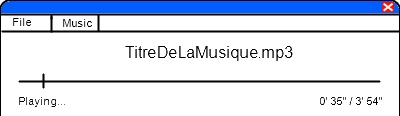
(N'ayez pas peur, je l'ai fait sous Paint :-° .)
Donc, avec cette organisation, le contrôle sur la musique se fera à partir du menu Music (qui possèdera donc les entrées-commandes Play / Pause, et Stop), et le contrôle du player se fera à partir du menu File, qui contiendra donc les entrées-commandes Browse, et Quit.
Par conséquent, l'intérieur de la fenêtre ne comportera que les informations générales, et un contrôle de type slider permettant de "seeker" la musique.
Afin de réaliser le TP, vous avez obligatoirement besoin d'un gestionnaire du son et de la musique. A cet effet, j'ai choisi FMOD, puisqu'il a déjà été étudié dans le tuto de M@teo21.
De plus, une bonne connaissance du tuto vous sera nécessaire.
Pourquoi nous avoir appris tant de choses si seuls le slider et les menus sont utilisés, ainsi que l'affichage du texte ?
Ce TP est une occasion de vous entraîner. Ce que je vous propose est le strict minimum à son fonctionnement : si vous voulez l'améliorer (et ce sera sûrement le cas, comme je l'espère ;) ), vous aurez besoin de toutes les connaissances acquises : listbox et dialogbox pour la playlist, boutons, textes et j'en passe...
Vous aurez sûrement besoin de quelques pistes afin de le créer... je pense notamment au moyen de parcourir le disque dur à la recherche des musiques ;) . Je vais donc vous les détailler ci-après, afin de vous aider le plus possible.
Voici donc les fameuses pistes (en vrac :-° ) .
Le timer
Afin de changer les informations à chaque seconde, (pour le temps, le slider etc...) vous devrez utiliser un timer. Ceux-ci sont un peu différents de ceux de la SDL : un timer, en WinAPI, envoie à la fenêtre parent de celui-ci une notification toutes les X millisecondes. Très pratiques, ils permettent d'exécuter un bloc d'instructions à chaque intervalle de temps. De plus, ils n'ont pas particulièrement besoin de callback, et sont généralement utilisés sans. Vous devrez donc, à la création de votre fenêtre, initialiser le timer qui, par défaut, n'est pas présent (logique), par un appel à la fonction SetTimer.
Son premier argument désigne le handle de la fenêtre parent du timer, qui va recevoir la notification régulière.
Son deuxième argument désigne son ID permettant de le distinguer des éventuels autres timer.
Son troisième argument désigne l'intervalle de temps, en millisecondes, entre chaque notification.
Son dernier argument désigne son éventuelle fonction callback associée, de type TIMERPROC (non nécessaire, et souvent mis à NULL).
Une fois le timer lancé, la fenêtre parent de celui-ci recevra la notification WM_TIMER à chaque intervalle de temps. Pour arrêter le timer, utilisez KillTimer prenant comme premier argument le handle de la fenêtre parent, et en second l'ID du timer.
L'affichage des textes
L'affichage des textes en utilisant le dessin peut compliquer les choses inutilement. Je vous propose donc d'utiliser une méthode très pratique, qui consiste à créer des contrôles static (avec les positions et dimensions nécessaires bien sûr) pour chaque zone d'information (nom de la musique, son état, et son temps), avec un flag adapté à la zone (pour le temps : SS_RIGHT ; pour le nom : SS_CENTER ; pour le status : SS_LEFT). Et enfin, d'exécuter quand vous voulez changer leur texte SetWindowText. Cette fonction, prenant comme premier paramètre le handle de la fenêtre (donc du static ici), et comme deuxième, le texte à afficher, changera les textes des static en les justifiant à la position que vous avez spécifiée.
La sélection de musique
En ce qui concerne la fonction Browse (ou parcourir), la manière la plus efficace reste la boîte de dialogue d'ouverture. Vous la connaissez, n'est-ce pas ? C'est ce petit explorateur, vous permettant de sélectionner ce que vous voulez ouvrir :
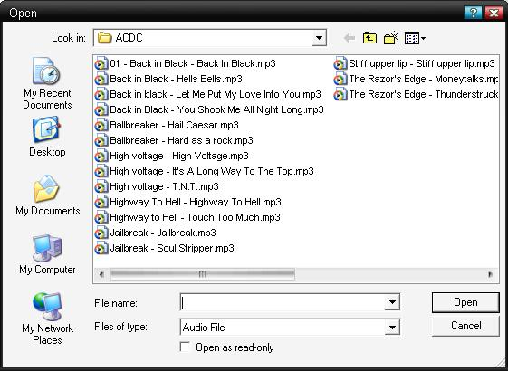
Pour la faire apparaître, nous utiliserons la fonction GetOpenFileName. Cette dernière, qui prend comme seul paramètre une variable de type OPENFILENAME, retourne TRUE si l'utilisateur a cliqué sur "Open", ou FALSE sur "Cancel". (En gros, vous ne traiterez que le TRUE.) La structure OPENFILENAME n'a pas le même rôle que PAINTSTRUCT : vous devrez la remplir. Pour cela, je vais vous décrire les champs qui nous sont utiles.
Le champ lStructSize doit récupérer la taille de la structure. (Utilisez donc un sizeof.)
Le champ hwndOwner récupère le handle de la fenêtre parent. (Donc celle du player.)
Le champ lpstrFile récupère une chaîne de caractères qui va recevoir le chemin de la musique sélectionnée par l'utilisateur, lorsque la fonction retourne.
Le champ nMaxFile récupère la taille maximale, en caractères, acceptée par la chaîne de caractères pointée par lpstrFile (en l'occurrence, MAX_PATH).
Le champ lpstrFilter est le plus dur à comprendre pour un débutant. Il s'agit des filtres utilisés : ce paramètre désigne les filtres possibles (description affichée à l'écran) avec leur extension filtrée. Pour cela, Microsoft a inventé un format de chaîne de caractères (appelé dans le jargon multistring), composée de plusieurs parties (d'autres chaînes, en fait). Celles-ci sont séparées par des caractères NULL, \0. Les parties fonctionnent par paires : la première partie d'une paire désigne le descriptif affiché à l'utilisateur (il aura le choix entre tous les descriptifs) ; la deuxième, la ou les extensions filtrées (sous la forme *.extension). Dans le cas de plusieurs filtres, ils doivent être séparés par des points-virgules. Comme celui-ci est difficile à comprendre, je vous donne sa valeur : truc.lpstrFilter = "Audio File\0*.mp3;*.wav;*.wma;*.ogg\0\0";
Le champ nFilterIndex doit toujours être à 1.
Le champ Flags désigne les flag à utiliser : ici, nous utiliserons OFN_PATHMUSTEXIST et OFN_FILEMUSTEXIST. Ceux-ci permettent de spécifier que le fichier et son chemin doivent exister (pour éviter les bugs).
Une fois ceci fait, vous devrez passer l'adresse de la variable OPENFILENAME remplie à GetOpenFileName. L'appel de cette fonction suffit à afficher la boîte de dialogue, et à remplir le champ pointé par lpstrFile dès que le bouton "Ouvrir" est cliqué.
Le nom de la musique
Afin de trouver le nom de la musique, je vous propose une solution toute bête, en attendant la gestion des tags : utilisez strrchr sur le chemin de la musique avec le caractère \ (doublé dans le code). Elle retournera alors la fin du chemin, ou la musique elle- même.
Le module de musiques
En ce qui concerne le module de son, fsound, vous aurez besoin de quelques fonctions pour coder votre lecteur. Voici les nécessaires :
FSOUND_Init : initialise le module fsound.
FSOUND_Close : ferme le module fsound.
FSOUND_Stream_Open : ouvre une musique.
FSOUND_Stream_Play : joue une musique.
FSOUND_GetPaused : informe de l'état de la pause.
FSOUND_SetPaused : change l'état de la pause.
FSOUND_Stream_Stop : stoppe la musique.
FSOUND_Stream_GetLengthMs : récupère le temps total de la musique.
FSOUND_Stream_SetTime : définit le temps écoulé / actuel de la musique.
FSOUND_Stream_GetTime : récupère le temps écoulé/actuel de la musique
Fin des pistes :p
Normalement, avec ces pistes et votre bagage intellectuel acquis durant ce tuto, vous pourriez y arriver sans aide.
Vous devez avoir vu au préalable parmi les contrôles : le static et le seeker. En outre, vous devez connaître toutes les bases, mais je suis sûr que vous les avez déjà. ;)
Allez, pour vous faire une idée du programme final :
J'espère que vous vous êtes bien débrouillés. ^^ Dans le cas contraire (ou pour voir comment un autre aurait fait, tout simplement), voici une archive contenant le projet complet (.cbp et codes sources) pour vous faire les dents :magicien: :
Télécharger l'archive du projet ! Si jamais mon site est indisponible ou si le lien est rompu d'une quelconque manière, pour raison d'Etat par exemple, voici une recopie du code source :ninja: :
Resource.rc
/**************************************************
Nom du fichier : Resource.rc
Appartenance au projet : TP d'un lecteur audio pour le SDZ
Créateur : kidpaddle2
Rôle du fichier : Contient le template du menu
**********************************************/
#include <windows.h>
#include "Constants.h"
ID_MENU MENU
BEGIN
POPUP "File"
BEGIN
MENUITEM "Browse", ID_B_BROWSE
MENUITEM SEPARATOR
MENUITEM "Quit", ID_B_QUIT
END
POPUP "Music"
BEGIN
MENUITEM "Play/Pause", ID_B_PLAYPAUSE
MENUITEM "Stop", ID_B_STOP
END
END
Constants.h
/*************************************************************************
Nom du fichier : Constants.h
Appartenance au projet : TP d'un lecteur audio pour le SDZ
Créateur : kidpaddle2
Rôle du fichier : Définir les constantes nécessaires aux manipulations
de contrôles (principalement des ID)
**************************************************************************/
///Protection contre les inclusions multiples
#ifndef CONSTANTES_H
#define CONSTANTES_H
///Définition des constantes
#define ID_B_PLAYPAUSE 0
#define ID_B_STOP 1
#define ID_B_BROWSE 2
#define ID_B_QUIT 3
///Fin de la protection
#endif
Functions.h
/*************************************************************************
Nom du fichier : Functions.h
Appartenance au projet : TP d'un lecteur audio pour le SDZ
Créateur : kidpaddle2
Rôle du fichier : contient les prototypes des fonctions
**************************************************************************/
///Protection contre les inclusions multiples
#ifndef FUNCTIONS_H
#define FUNCTIONS_H
///Includes nécessaires
#include <windows.h>
#include <commctrl.h>
#include "Music.h"
///Prototypes des fonctions
void loadMusic(HWND, Music*);
void createStatics (HWND[], HWND, HINSTANCE);
void adaptSeeker (HWND, const Music);
///Fin de la protection
#endif
Functions.cpp
/*************************************************************************
Nom du fichier : Functions.cpp
Appartenance au projet : TP d'un lecteur audio pour le SDZ
Créateur : kidpaddle2
Rôle du fichier : définir les fonctions nécessaires au fonctionnement
du player
**************************************************************************/
///Includes
#include "Functions.h"
/** Fonction : loadMusic
Paramètre 1 : Fenêtre parent du contrôle
Paramètre 2 : adresse de l'objet "Music" pour charger la musique
Rôle : Charger la musique grâce à une boîte de dialogue d'ouverture,
inscrire le chemin et nom, et déterminer le temps total de la
musique**/
void loadMusic (HWND parentWindow, Music *musicToLoad)
{
//Structure nécessaire à la boîte de dialogue d'ouverture
OPENFILENAME toGetFileName;
//Variable qui va recevoir le chemin de la musique
char filePath[MAX_PATH] = "";
//Remplissage de la structure
ZeroMemory(&toGetFileName, sizeof(OPENFILENAME));
toGetFileName.lStructSize = sizeof(OPENFILENAME);
toGetFileName.hwndOwner = parentWindow;
toGetFileName.lpstrFile = filePath;
toGetFileName.nMaxFile = MAX_PATH;
//Avec un filtre de fichiers audio
toGetFileName.lpstrFilter = "Audio File\0*.mp3;*.wav;*.ogg;*.wma\0\0";
toGetFileName.nFilterIndex = 1;
toGetFileName.Flags = OFN_PATHMUSTEXIST | OFN_FILEMUSTEXIST;
//Si l'utilisateur clique sur "Ouvrir"
if(GetOpenFileName(&toGetFileName) == TRUE)
{
//Copier le chemin récupéré dans le chemin de la musique
strcpy(musicToLoad->path, filePath);
//Inscrire le nom de la musique
strcpy(musicToLoad->name, strrchr(musicToLoad->path, '\\'));
//Si la musique est changée, on ferme la précédente
FSOUND_Stream_Close(musicToLoad->stream);
//Ouverture de la musique
musicToLoad->stream = FSOUND_Stream_Open(musicToLoad->path, 0, 0, 0);
//Récupération du temps total
musicToLoad->totalTime = FSOUND_Stream_GetLengthMs(musicToLoad->stream)/1000;
}
return;
}
/** Fonction : createStatics
Paramètre 1 : tableau de statics à créer
Paramètre 2 : fenêtre parent
Paramètre 3 : Instance actuelle
Rôle : Créer les statics montrant les infos sur la musique**/
void createStatics (HWND statics[], HWND parentWindow, HINSTANCE instance)
{
//Création du premier static (nom de la musique)
statics[0] = CreateWindow("STATIC",
"No musics loaded.",
WS_CHILD | WS_VISIBLE | SS_CENTER | SS_NOPREFIX,
10, 11, 370, 15,
parentWindow,
(HMENU)NULL,
instance,
NULL);
//Création du deuxième static (status de la musique)
statics[1] = CreateWindow("STATIC",
"Currently idle.",
WS_CHILD | WS_VISIBLE | SS_LEFT | SS_NOPREFIX,
10, 55, 100, 15,
parentWindow,
(HMENU)NULL,
instance,
NULL);
//Création du troisième static (temps de la musique)
statics[2] = CreateWindow("STATIC",
"",
WS_CHILD | WS_VISIBLE | SS_RIGHT | SS_NOPREFIX,
240, 55, 140, 15,
parentWindow,
(HMENU)NULL,
instance,
NULL);
return;
}
/** Fonction : adaptSeeker
Paramètre 1 : seeker
Paramètre 2 : objet musique chargé
Rôle : Adapter les marges du seeker en fonction du temps total de la
musique **/
void adaptSeeker (HWND seeker, const Music music)
{
//Définit la marge supérieure du seeker au temps total de la musique
SendMessage(seeker, TBM_SETRANGE, FALSE, MAKELONG(0,music.totalTime));
return;
}
/*************************************************************************
Nom du fichier : main.cpp
Appartenance au projet : TP d'un lecteur audio pour le SDZ
Créateur : kidpaddle2
Rôle du fichier : point d'entrée du programme et gestion des évènements
(callbacks)
**************************************************************************/
///Includes
#include <windows.h>
#include <fmod/fmod.h>
#include "Constants.h"
#include "Music.h"
#include "Functions.h"
///Instance actuelle (on en a besoin partout, donc on la déclare globale).
HINSTANCE instance;
///Prototype de la procédure callback du player
LRESULT CALLBACK playerProc(HWND, UINT, WPARAM, LPARAM);
///Winmain
int WinMain (HINSTANCE hThisInstance, HINSTANCE hPreviousInstance,
LPSTR lpCmdLine, int nFursterStill)
{
HWND player = NULL;
MSG message;
WNDCLASS playerClass;
//Remplissage de l'instance globale avec l'instance actuelle
instance = hThisInstance;
//Définition de la classe de fenêtre
playerClass.style = 0;
playerClass.lpfnWndProc = playerProc;
playerClass.cbClsExtra = 0;
playerClass.cbWndExtra = 0;
playerClass.hInstance = instance;
playerClass.hIcon = LoadIcon(NULL, IDI_APPLICATION);
playerClass.hCursor = LoadCursor(NULL, IDC_ARROW);
//Remarquez la brosse employée pour peindre le fond de la fenêtre
playerClass.hbrBackground = CreateSolidBrush(RGB(0,0,0));
//Le menu est associé
playerClass.lpszMenuName = "ID_MENU";
playerClass.lpszClassName = "pClass";
if(!RegisterClass(&playerClass))
return FALSE;
//Création de la fenêtre du player
player = CreateWindow("pClass", "Basic Music Player", WS_OVERLAPPEDWINDOW,
CW_USEDEFAULT, CW_USEDEFAULT, 400, 130,
NULL, NULL, hThisInstance, NULL);
if (!player) return FALSE;
//On l'affiche
ShowWindow(player, nFursterStill);
UpdateWindow(player);
//Boucle évènementielle
while (GetMessage(&message, NULL, 0, 0))
{
TranslateMessage(&message);
DispatchMessage(&message);
}
return message.wParam;
}
///Procédure callback de la fenêtre du player
LRESULT CALLBACK playerProc(HWND playerWindow, UINT message, WPARAM wParam, LPARAM lParam)
{
/*Variables déclarées statiques pour qu'elles soient toujours valides
tout au long du programme*/
static Music music = {0};
//Handles des 3 statics (pour les infos) et du seeker
static HWND infos[3] = {NULL}, seeker = NULL;
//Status
static Status status = idle;
switch (message)
{
case WM_CREATE:
//Création de tous les contrôles
createStatics(infos, playerWindow, instance);
seeker = CreateWindow((LPCTSTR)TRACKBAR_CLASS,
(LPCTSTR)"",
(DWORD)WS_CHILD|WS_VISIBLE | TBS_NOTICKS,
10, 30, 370, 20,
playerWindow,
(HMENU)NULL,
instance,
NULL);
//Initialisation de fsound
FSOUND_Init(44100, 32, 0);
//Lancement du timer nécessaire
SetTimer(playerWindow, 0, 1000, (TIMERPROC)NULL);
return 0;
case WM_COMMAND:
switch(LOWORD(wParam))
{
/*Si la commande "Quit" du menu est cliquée, on envoie WM_DESTROY à la fenêtre*/
case ID_B_QUIT:
SendMessage(playerWindow, WM_DESTROY, 0, 0);
break;
/*Si la commande "Browse" du menu est cliquée, on s'occupe de charger la musique*/
case ID_B_BROWSE:
//Donc on charge la musique (voir Functions.cpp)
loadMusic(playerWindow, &music);
/*On adapte les marges du seeker en conséquence (du temps total)*/
adaptSeeker(seeker, music);
//On met à jour le nom de la musique
SetWindowText(infos[0], music.name);
break;
//Si la commande "Play / Pause" du menu est cliquée et :...
case ID_B_PLAYPAUSE:
/*...si aucune musique n'est jouée, et que la pause n'est pas enclenchée*/
if(!FSOUND_IsPlaying(0) && !FSOUND_GetPaused(0))
//Alors on joue la musique chargée
FSOUND_Stream_Play(0, music.stream);
//...sinon si la pause est enclenchée
else if(FSOUND_GetPaused(0))
//On l'enlève
FSOUND_SetPaused(0, FALSE);
//...sinon si on est en pleine lecture
else if(FSOUND_IsPlaying(0))
//Alors on enclenche la pause
FSOUND_SetPaused(0, TRUE);
//...sinon on fait rien.
else
break;
break;
//Si la commande "Stop" du menu est cliquée...
case ID_B_STOP:
//...on stoppe la musique chargée
FSOUND_Stream_Stop(music.stream);
break;
}
return 0;
//Si le seeker est bougé...
case WM_HSCROLL:
//On trouve la position changée du seeker...
music.elapsedTime = SendMessage(seeker, TBM_GETPOS, 0, 0);
//... et on applique à la musique le temps demandé
FSOUND_Stream_SetTime(music.stream, music.elapsedTime*1000);
break;
//A chaque signal de timer...
case WM_TIMER:
//Et si la musique est jouée
if(FSOUND_IsPlaying(0))
{
/*Et si la pause est enclenchée, on rafraîchît le status en conséquence*/
if(FSOUND_GetPaused(0))
{
/* Seulement si ça ne l'est pas déjà */
if(status != paused)
{
SetWindowText(infos[1], "Paused.");
//Le status est changé
status = paused;
}
}
//Si la pause ne l'est pas
else
{
//On rafraîchit aussi le status en conséquence
/* Seulement si ça ne l'est pas déjà */
if(status != playing)
{
SetWindowText(infos[1], "Playing...");
//Le status est changé
status = playing;
}
//On récupère le temps actuel de la musique
music.elapsedTime = FSOUND_Stream_GetTime(music.stream)/1000;
/*On fabrique une chaine de caractères montrant l'avancée du temps*/
sprintf(music.allTimes,
"%d\' %d\" / %d\' %d\"",
music.elapsedTime/60,
music.elapsedTime%60,
music.totalTime/60,
music.totalTime%60);
//... et on l'affiche dans l'emplacement prévu
SetWindowText(infos[2], music.allTimes);
//Et enfin on met à jour le seeker
SendMessage(seeker, TBM_SETPOS, TRUE, music.elapsedTime);
}
}
//Si la musique n'est pas en train d'être jouée
else
{
/*On rafraîchit le status et l'avancée du temps en conséquence*/
/* Seulement si ça ne l'est pas déjà */
if((status != stopped) && (status != idle))
{
SetWindowText(infos[1], "Stopped.");
SetWindowText(infos[2], "");
//Et on met à zéro le seeker
SendMessage(seeker,TBM_SETPOS, TRUE, 0);
//Le status change
status = stopped;
}
}
return 0;
//Si le sontrôle demande à être recoloré...
case WM_CTLCOLORSTATIC:
{
//On récupère un DC dessus...
HDC textDC = (HDC)wParam;
SetTextColor(textDC, RGB(0,255,0));
//Qui permet de nous donner la main sur le texte à rendre transparent
SetBkMode(textDC, TRANSPARENT);
static HBRUSH brush = CreateSolidBrush(RGB(0,0,0)); /* Il vaut mieux la mettre en static pour éviter des bugs graphiques au chargement */
/*Et finalement on retourne une brosse pour colorer son fond. (la même que la fenêtre principale)*/
return (LRESULT)brush;
}
//Si on demande à quitter
case WM_DESTROY:
//On ferme fsound
FSOUND_Close();
//et on quitte...fini.
PostQuitMessage(0);
return 0;
default:
return DefWindowProc(playerWindow, message, wParam, lParam);
}
}
Ce lecteur est un bon début, mais il n'est pas parfait (nooon sans blague ? :p ). Je vous propose ici quelques idées d'améliorations avec, si besoin est, quelques astuces pour les concrétiser.
Sélection multiple
Vous pourriez permettre au lecteur de récupérer plusieurs musiques au lieu d'une dans la boîte de dialogue d'ouverture. Comme vous avez pu le voir, elle ne le permet pas. Pour cela, ajoutez à la liste de flags OFN_MULTISELECT, qui permettra de faire une sélection multiple. Mais... je ne vous en ai pas parlé car c'est un peu plus dur que pour la sélection unique. ;) En effet, vous ne disposez que d'une chaîne de sortie (lpszFile). Pas de panique, Microsoft est là. Dans le cas d'une sélection multiple, la chaîne se transforme alors en une multistring, dont je vous ai parlé plus haut. Le chemin du dossier où se trouvent les musiques, ainsi que chaque nom de musique sélectionnée qu'il précède, sont alors séparés par un caractère NULL, et le dernier caractère est doublé. Il va donc falloir que vous inventiez une fonction (je ne vais pas la donner, sinon ce n'est pas drôle :lol: ) permettant de découper la chaîne en un tableau de string, que vous stockerez alors. Voici alors son format, en guise de coup de pouce ^^ :
Après l'avoir intégré, un système de progression entre les musiques serait intéressant : l'ajout de 'Next', 'Previous' serait alors adapté, et un choix entre lecture normale ou aléatoire pourrait être ajouté.
Ajout d'une playlist
Une playlist pourrait alors être ajoutée, pour représenter visuellement les musiques chargées. Un double-clic sur une entrée de celle-ci lançerait alors la musique.
Fonctions habituelles
Après, pourraient être insérées les fonctions normales, tel que réglage du volume, etc.
Possibilités autres
D'autres possibilités seront vues plus en détail lors de la progression du cours, comme un skin élaboré dans une fenêtre non rectangulaire en utilisant les régions, la possibilité de minimiser l'application, etc.
Déjà, si vous intégrez toutes ces idées, cela prouvera que vous vous débrouillez bien avec le winAPI. Quoiqu'il arrive, gardez une organisation propre, et les ajouts se feront sans problème. :ange:
Rédacteur : Mg++
Et voilà, ce premier TP est fini :) Je vous retrouve après dans la suite du cours, et j'espère que ce TP vous a fait du bien. ;) Rédacteur : kidpaddle2
Vous avez jusqu'ici exclusivement travaillé avec des contrôles pour intéragir avec la fenêtre. Je vous propose ici de traiter manuellement les principaux événements du clavier et de la souris.
Chacun de ces messages survient l'un après l'autre (dans l'ordre), à chaque fois qu'une touche est utilisée.
Voici un schéma résumant le tout :
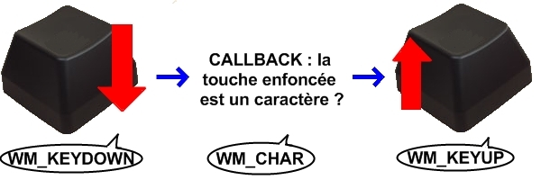
Schéma des messages générés tout au long de l'utilisation d'une touche Comme vous pouvez le voir, WM_KEYDOWN survient lors de l'enfoncement d'une touche, WM_CHAR si cette touche désigne un caractère, et WM_KEYUP lors du relâchement de la touche.
Tous ces messages prennent comme paramètre :
WPARAM : code virtuel de la touche
LPARAM : informations de répétition, d'état de touche système etc.
Le paramètre LPARAM n'est souvent pas utilisé. Par contre, le premier permet de déterminer la touche qui a généré l'événement, à travers une correspondance code/touche, dont le tableau est disponible à l'adresse suivante (je n'ai pas eu le courage de tout retranscrire dans un tableau zCode, mais si une âme charitable pouvait le faire, je lui en serait reconnaissant ^^ ).
Il n'y a pas grand-chose à dire d'autre, donc un code complet devrait suffire à vous mettre en tête leur utilisation.
Exemple
Voici donc un exemple de traitement des trois messages (non compilable), qui permet simplement de quitter le programme à l'appui de la touche "Echap", et d'ajouter à une string les éventuels caractères entrés.
//Soit wParam et lParam les WPARAM et LPARAM (normal ^^ )
//Soit buffer une instance de std::string
/* switch du MSG dans la callback de la fenêtre */
case WM_KEYDOWN:
//ou WM_KEYUP
switch(wParam)
{
case VK_ESCAPE:
PostQuitMessage(0);
break;
default:
break;
}
return 0;
case WM_CHAR:
buffer += (char)wParam;
return 0;
La souris génère deux messages consécutifs à l'appui d'un de ses bouton, chacun décliné en trois messages, selon le bouton concerné. La nomenclature de tels message est alors WM_BOUTONMESSAGE où :
BOUTON est l'identifiant du bouton ayant généré le message pouvant être :
L (bouton gauche)
R (bouton droit)
M (bouton du milieu)
MESSAGE le type d'événement, pouvant être :
BUTTONDOWN
BUTTONUP
On retrouve ici les suffixes -DOWN et -UP, montrant que durant l'utilisation d'un bouton, WM_(L, R ou M)BUTTONDOWN est envoyé quand il est enfoncé, et WM_(L, R ou M)BUTTONUP quand il est relâché.
Ces messages ont tous les mêmes paramètres WPARAM et LPARAM : le paramètre WPARAM contient un masque de bouton, c'est-à-dire le code virtuel de touches/boutons étant enfoncés lorsque l'événement survient (équivalent à la traduction d'appuis simultanés), dont les valeurs peuvent être :
MK_CONTROL : la touche Ctrl est enfoncée
MK_LBUTTON : le bouton gauche est enfoncé
MK_RBUTTON : Le bouton droit est enfoncé
MK_SHIFT : la touche SHIFT est enfoncée
Par ailleurs, le paramètre LPARAM contient les coordonnées du curseur lors de l'émission du message : le LOWORD contient son abscisse, et le HIWORD son ordonnée. Ces coordonnées peuvent êtres récupérées à l'aide des macros GET_X_LPARAM(LPARAM) (pour l'abscisse) et GET_Y_LPARAM(LPARAM) (pour l'ordonnée), ou encore MAKEPOINTS(LPARAM) (pour récupérer une structure POINTS).
La molette
L'événement WM_MOUSEWHEEL, généré lors de l'utilisation de la molette, possède les mêmes paramètres, excepté le fait que le masque de bouton expliqué plus haut est contenu par le HIWORD du WPARAM.
Pourquoi ?
J'y viens :p : le LOWORD est en fait utilisé par l'angle parcouru par la molette, défini à partir de la constante WHEEL_DELTA (valant 120, et correspondant en général à un "cran" de la molette). Si ce paramètre est positif, c'est que la molette a été tournée vers le "haut", ou à l'opposé de l'utilisateur. A l'inverse, une valeur négative traduit un mouvement vers le "bas", ou vers l'utilisateur.
Le déplacement
Nous avons vu jusqu'ici les événements des boutons, et de la molette de la souris. Mais qu'en est-il de son mouvement ?
Quand la souris est déplacée, le message WM_MOUSEMOVE est envoyée à la fenêtre située sous le curseur. Celui-ci (chance ! :p ) possède exactement les mêmes paramètres que les messages correspondant à l'utilisation des boutons de la souris, à savoir les boutons pressés simultanément, et les coordonnées du curseur.
Divers
Vous pouvez récupérer la position de la souris à n'importe quel endroit de votre code, avec la fonction GetCursorPos(), prenant comme paramètre un pointeur de POINT. Vous l'aurez deviné, la fonction SetCursorPos() permettrait de définir la position du curseur, en prenant un POINT en paramètre.
Exemple
Voici un code récapitulatif tout simple, déduisant simplement la distance parcourue par le curseur (quand le bouton gauche de la souris est enfoncé), et par la molette (non compilable, comme d'habitude ;) ).
#include <math.h>
#define RADIUS (2*PI)
double linearDistance(POINT start, POINT end)
{
return sqrt(pow((end.x - start.x), 2) + pow((end.y - start.y), 2))
}
int DEG_TO_RAD(int deg)
{
return (deg*PI)/180
}
double angularDistance(int angle)
{
return abs(angle)*RADIUS;
}
/* Soit cursorDistance et wheelDistance des static double, représentant respectivement
la distance parcourue par le curseur et la molette (en pixels), ainsi que
BOOL lBtnDown l'état du bouton gauche de la souris. (TRUE pour
enfoncé, FALSE pour relâché) (FALSE par défaut) */
//WindowProc, switch MSG (avec LPARAM lParam et WPARAM wParam)
case WM_LBUTTONDOWN:
lBtnDown = TRUE;
return 0;
case WM_LBUTTONUP:
lBtnDown = FALSE;
return 0;
case WM_MOUSEMOVE:
{
if(lBtnDown)
{
static POINT old = {0,0};
POINT current;
current.x = GET_X_LPARAM(lParam);
current.y = GET_Y_LPARAM(lParam);
cursorDistance += linearDistance(old, current);
old = current;
}
return 0;
}
case WM_MOUSEWHEEL:
wheelDistance += angularDistance(DEG_TO_RAD(LOWORD(lParam)));
return 0;
Rédacteur : Mg++
Ce fut une courte introduction aux événements principaux du clavier et de la souris. Un prochain chapitre sera dédié en partie aux événements système, comme le Drag And Drop.
Je suis certain que vous avez déjà éprouvé le désir de concevoir des applications ayant un design plus évolué à base de skins, formes fantaisistes etc., comme le proposent la plupart des logiciels sur la toile.
Eh bien, je vous propose ici de le réaliser ;) . Vous verrez donc ici comment tailler votre fenêtre comme bon vous semble. Pour cela, il est bien entendu necessaire que vous ayiez lu auparavant les autres chapitres de ce tutorial, et en particulier L'affichage (pour les images), et Les événements (surtout pour les tests relatifs à la souris, les boutons étant pour le moment incrustés au skin*).
Commençons tout d'abord par tailler fenêtre, non pas avec un burin, mais avec les régions.
En premier lieu, il est nécessaire de définir ce qu'est une région. En fait, vous pouvez vous la modéliser comme un moule. Je ne sais pas si l'image vous interpelle, mais c'est comme les formes métalliques que vous appliquez sur un gâteau pour qu'il en prenne justement la forme ^^ .
L'usage de ces régions se définit en plusieurs étapes :
Création d'une région
Application de la région à une fenêtre.
Procédons dans l'ordre (tant qu'à faire :p ), et commençons dont par la création des régions proprement dite.
Création d'une région
A l'instar des contrôles, une région possède un handle permettant de la manier. Celui-ci, dont le type est HRGN, contient les informations relatives à la région visée. Cette structure est remplie à partir de fonctions de création de région, autorisant un large éventail de formes possibles, à travers différentes fonctions.
Voyez-plutôt :
CreateRectRgn()
CreateRoundRectRgn()
CreateEllipticRgn()
CreatePolygonRgn()
...
Celles ci-dessus étant les principales, nous ne verrons que celles-ci (la liste complète se trouvant bien entendu sur msdn).
CreateRectRgn()
CreateRectRgn() permet de créer une région de forme rectangulaire, dont les coordonnées des coins supérieur gauche et inférieur droit sont données.
Le prototype de CreateRectRgn() est le suivant :
HRGN CreateRectRgn(
int nLeftRect, //Abscisse du coin supérieur gauche de la région
int nTopRect, //Ordonnée du coin supérieur gauche de la région
int nRightRect, //Abscisse du coin inférieur droit de la région
int nBottomRect //Ordonnée du coin inférieur droit de la région
);
CreateRoundRectRgn()
CreateRoundRectRgn() permet de créer une région de la forme d'un rectangle ayant des coins arrondis, et dont les coordonnées des coins supérieur gauche et inférieur droit, ainsi que les dimensions de l'éllipse (permettant d'obtenir ces arrondis) sont données.
Le prototype de CreateRoundRectRgn() est le suivant :
HRGN CreateRoundRectRgn(
int nLeftRect, //Abscisse du coin supérieur gauche de la région
int nTopRect, //Ordonnée du coin supérieur gauche de la région
int nRightRect, //Abscisse du coin inférieur droit de la région
int nBottomRect //Ordonnée du coin inférieur droit de la région
int nWidthEllipse, //Largeur de l'ellipse inscrite
int nHeightEllipse //Hauteur de l'ellipse inscrite
);
CreateEllipticRgn()
CreateEllipticRgn() permet de créer une région de forme élliptique, dont les coordonnées des coins supérieur gauche et inférieur droit du rectangle dans lequel elle est inscrite sont données.
Le prototype de CreateEllipticRgn() est le suivant :
HRGN CreateEllipticRgn(
int nLeftRect, //Abscisse du coin supérieur gauche du rectangle circonscrit
int nTopRect, //Ordonnée du coin supérieur gauche du rectangle circonscrit
int nRightRect, //Abscisse du coin inférieur droit du rectangle circonscrit
int nBottomRect //Ordonnée du coin inférieur droit du rectangle circonscrit
);
CreatePolygonRgn()
CreatePolygonRgn() n'est certes pas la fonction la plus pratique de celles exposées, mais reste la plus intéressante. En effet, en procurant à la fonction un tableau de coordonnées de points (sous la forme d'un tableau de POINT (CONST) POINT*), leur nombre ainsi que le mode de remplissage (voir ci-après), vous pouvez créer exactement la région que vous souhaitez.
Son prototype est le suivant :
HRGN CreatePolygonRgn(
CONST POINT *lppt, //Tableau de points
int cPoints, //Nombre de points dans le tableau
int fnPolyFillMode //Mode de remplissage du polygone
);
Une petite mise au point s'impose quant au mode de remplissage. Celui-ci peut prendre les valeurs ALTERNATE, et WINDING. ALTERNATE est souvent conseillé, et décrit le procédé suivant : selon l'algorithme scanline, la zone comprise entre les arêtes impaires et paires du polygone correspondra à la région créée. (pour plus amples informations, cherchez sur la Toile :-° )
Opérations diverses
Parfois, ces fonctions ne suffisent pas pour obtenir les formes dont vous avez envie (par exemple quand vous n'avez pas envie de récupérer des points pour créer votre région >_ ). Dans ces cas là, on les complète par d'autres fonctions, comme CombineRgn(), pour étendre encore plus les possibilités.
Celle-ci permet de combiner deux régions, selon le mode de combinaison dont les valeurs possibles sont :
RGN_AND : La région obtenue est l'intersection des deux régions données
RGN_DIFF : La région obtenue est la combinaison des parties de la première des deux régions données, qui n'intersectent pas la deuxième.
RGN_OR : La région obtenue est l'union des deux régions données.
RGN_XOR : [Comme RGN_OR, sans les intersections des deux régions.]
Voici donc son prototype :
int CombineRgn(
HRGN hrgnDest, //Handle de la région de destination
HRGN hrgnSrc1, //Handle de la première des deux régions à combiner
HRGN hrgnSrc2, //Handle de la deuxième des deux régions à combiner
int fnCombineMode //Mode de combinaison des deux régions
);
La fonction peut alors retourner :
NULLREGION : La région obtenue est vide
SIMPLEREGION : La région obtenue est un rectangle
COMPLEXREGION : La région obtenue est plus qu'un simple rectangle
ERROR : Aucune région ne fut générée
Le but de ce tuto, c'est un peu d'avoir une fenêtre de la forme de son skin, non ? Je vais mettre des années à créer ma région !
Pas de panique, ces fonctions ne sont que des bases (pouvant néanmoins vous servir ultérieurement) à une fonction parfaitement adaptée : BmpToRgn() :ange:
Cette fonction (que j'ai découverte sur cppfrance.com à mes débuts, et créée par anthraxx) permet de récupérer une région à partir d'une image bitmap (donc d'une image 32bits) et d'une couleur de transparence (par défaut, noir).
Voici le code complet de la fonction :magicien: :
HRGN BmpToRgn (HBITMAP hBmp, COLORREF cTransparentColor)
{
#define ALLOC_UNIT 100
int y, x;
HRGN hRgn = NULL;
if (!hBmp) return 0; // si bitmap invalide retourne
BITMAP bm;
GetObject(hBmp, sizeof(bm), &bm); // met les infos d'en tete du bitmap dans bm
UINT siz=bm.bmWidth*bm.bmHeight*4; // enregistre la taille des donnes de l'image
char *lpBmpBits=(char*)LocalAlloc(LMEM_FIXED,siz); // fait de la place pour les bits du bitmap
GetBitmapBits(hBmp,siz,lpBmpBits); // obtient les bits de l'image dans l'espace qu'on a reservé
bm.bmBits=lpBmpBits; // complete la strucutre bm avec les bits
while (bm.bmWidthBytes % 4) bm.bmWidthBytes++; // bmWidthBytes doit être divisible par 4
DWORD maxRects = ALLOC_UNIT;
HANDLE hData = GlobalAlloc(GMEM_MOVEABLE, sizeof(RGNDATAHEADER) + (sizeof(RECT) * maxRects));
RGNDATA *pData = (RGNDATA *)GlobalLock(hData);
pData->rdh.dwSize = sizeof(RGNDATAHEADER);
pData->rdh.iType = RDH_RECTANGLES;
pData->rdh.nCount = pData->rdh.nRgnSize = 0;
SetRect(&pData->rdh.rcBound, MAXLONG, MAXLONG, 0, 0);
BYTE *p32 = (BYTE *)bm.bmBits;
for (y = 0; y < bm.bmHeight; y++) // parcourt toutes les lignes de l'image, de haut en bas
{
for (x = 0; x < bm.bmWidth; x++) // parcourt tous les pixels de la ligne, de gauche à droite
{
// Recherche une suite continue de pixels non transparents
int x0 = x;
LONG *p = (LONG *)(p32 + 4*x);
while (x < bm.bmWidth)
{
if ((unsigned)*p==cTransparentColor)
break; // ce pixel est transparent
p++;
x++;
}
if (x > x0)
{
// ajoute les pixels (de (x0, y) à (x, y+1)) à la region en tant que rectangle
if (pData->rdh.nCount >= maxRects)
{
GlobalUnlock(hData);
maxRects += ALLOC_UNIT;
hData = GlobalReAlloc(hData, sizeof(RGNDATAHEADER) +
(sizeof(RECT) * maxRects), GMEM_MOVEABLE);
pData = (RGNDATA *)GlobalLock(hData);
}
RECT *pr = (RECT *)&pData->Buffer;
SetRect(&pr[pData->rdh.nCount], x0, y, x, y+1);
if (x0 < pData->rdh.rcBound.left)
pData->rdh.rcBound.left = x0;
if (y < pData->rdh.rcBound.top)
pData->rdh.rcBound.top = y;
if (x > pData->rdh.rcBound.right)
pData->rdh.rcBound.right = x;
if (y+1 > pData->rdh.rcBound.bottom)
pData->rdh.rcBound.bottom = y+1;
pData->rdh.nCount++;
// Il parait que sous Windows 98, ExtCreateRegion() ne marche pas s'il y a trop de rectangles
// Pas de panique: on construit la region en deux fois
if (pData->rdh.nCount == 2000)
{
HRGN h = ExtCreateRegion(NULL, sizeof(RGNDATAHEADER) + (sizeof(RECT) * maxRects), pData);
if (hRgn)
{
CombineRgn(hRgn, hRgn, h, RGN_OR);
DeleteObject(h);
}
else
hRgn = h;
pData->rdh.nCount = 0;
SetRect(&pData->rdh.rcBound, MAXLONG, MAXLONG, 0, 0);
}
}
}
// On passe à la ligne suivante
p32 += bm.bmWidthBytes;
}
// On cree la region
// (et, s'il y avait plus de 2000 rectangles, on la combine avec celle créee precedemment)
HRGN h = ExtCreateRegion(NULL, sizeof(RGNDATAHEADER) + (sizeof(RECT) * maxRects), pData);
if (hRgn)
{
CombineRgn(hRgn, hRgn, h, RGN_OR);
DeleteObject(h);
}
else hRgn = h;
LocalFree((HLOCAL)lpBmpBits);
return hRgn;
}
Je ne vous demande evidemment pas de la comprendre, mais juste de savoir l'utiliser (c'est pour votre bien, hein :p ) : le handle de bitmap doit bien entendu être obtenu par le chargement d'une image avec LoadImage() ou LoadBitmap, et la structure COLORREF (la couleur de transparence) par un appel à RGB(). (voir L'affichage)
Application de la région à une fenêtre
Alors là, il n'y a rien de plus simple, un appel de SetWindowRgn() avec comme paramètres le handle de la fenêtre à laquelle on veut appliquer la région, le handle de la région à appliquer, et enfin le "Redraw Flag" (booléen à fixer à TRUE si la fenêtre doit être redessinée, ou FALSE sinon).
Exemple
Voici un code illustratif de la manipulation des régions (non compilable) :
HRGN rectRegion,
roundRectRegion,
ellipticRegion,
polygonRegion,
combinedRegion,
bitmapRegion;
RECT rect = {10,10,300,100};
POINT pointArray[5];
//Soit bitmap ayant été chargé au préalable
//Soit hwnd ayant été créé au préalable
rectRegion = CreateRectRgnIndirect(&rect);
/* La plupart du temps, les deux dernières valeurs sont déterminées "au feeling" ;) */
roundRectRegion = CreateRoundRectRgn(10,10,300,100,10,10);
ellipticRegion = CreateEllipticRgnIndirect(&rect);
pointArray[0].x = 0; pointArray[0].y = 1;
pointArray[1].x = 3; pointArray[1].y = 3;
pointArray[2].x = 6; pointArray[2].y = 1;
pointArray[3].x = 5; pointArray[3].y = -2;
pointArray[4].x = 2; pointArray[4].y = -2;
polygonRegion = CreatePolygonRgn(pointArray, 5, ALTERNATE);
//RGN_XOR, par exemple
CombineRgn(combinedRegion, rectRegion, ellipticRegion, RGN_XOR);
//Le blanc est la couleur transparente
bitmapRegion = BmpToRgn(bitmap, RGB(255,255,255));
//Et enfin :
SetWindowRgn(hwnd, /* region */);
Maintenant que vous avez une fenêtre taillée par vos soins (dans la majorité des cas, sans barre de titre), peut-être voudriez-vous donner la possiblité à l'utilisateur de la bouger ? :-°
Pour cela, nous allons utiliser une notification très pratique (car ne servant fort heureusement pas qu'à ça), qui n'est autre que WM_NCHITTEST.
Cette notification est envoyée lorsqu'un événement, dont la source est la souris, survient sur la fenêtre d'un programme. Il s'agit d'un test antérieur aux messages WM_MOUSEMOVE, WM_LBUTTONDOWN etc. (tout comme WM_KEYDOWN est antérieur à WM_CHAR après test), pour déterminer dans quelle zone de la fenêtre se trouve la souris. Une fois traitée (si c'est le cas), nous devons renvoyer une constante indiquant la zone de la fenêtre correspondante (après test des coordonnées, forcément).
Ici, la constante à retourner est HTCAPTION (caption pour titre). Cependant, d'autres constantes peuvent être envoyées, représentant d'autres zones de la fenêtre :
HTBOTTOM : bordure inférieure (agrandissement vertical possible de la fenêtre)
HTBOTTOMLEFT/HTBOTTOMRIGHT : bordure inférieure gauche/droite (agrandissement possible de la fenêtre)
HTLEFT/HTRIGHT : bordure gauche/droite (agrnadissement horizontal possible de la fenêtre)
Par contre, si la zone visée n'est tout simplement qu'une zone client, vous devez renvoyer HTCLIENT (logique).
Comment déterminer dans quelle zone le curseur se trouve ?
Je l'ai dit plus haut, il faut tester les coordonnées du curseur. Pour cela, pas besoin de GetCursorPos(), elles se trouvent dans le LPARAM du message (le WPARAM étant non-utilisé). Par conséquent, vous pourrez les récupérer à l'aide des macros GET_X_LPARAM() et GET_Y_LPARAM(), ou MAKEPOINTS(), expliquées antérieurement.
Exemple
/* Soit hwnd le handle de la fenêtre, et lParam le LPARAM de la callback */
//WindowProc avec switch du MSG
case WM_NCHITTEST:
{
LRESULT ret = HTCLIENT;
//Coordonnées de la fenêtre
RECT wCoord;
GetWindowRect(hwnd, &wCoord);
//Coordonnées relatives à la zone client de la fenêtre
POINT cCoord;
cCoord.x = GET_X_LPARAM(lParam) - wCoord.left;
cCoord.y = GET_Y_LPARAM(lParam) - wCoord.top;
//tests des coordonnées
if(/* zone dite "de déplacement" */)
ret = HTCAPTION;
//...
return ret;
}
Avec cette méthode, votre fenêtre devrait pouvoir bouger fluidement (en tout cas, autant qu'avec des barres de titre "normales" ;) ) Rédacteur : Mg++
Vous êtes d'orénavant capables de tailler vos fenêtres comme bon vous semble, tout en personnalisant sa gestion (redimensionnements, déplacements etc.). Dans une prochaine mise à jour du chapitre, nous verrons quelque chose de nettement plus intéressant, à savoir les listbox dites "ownerdraw", les boutons hover (boutons changeant d'état en fonction du stade de la souris), en utilisant les masques etc., et sûrement à partir de l'élaboration d'une hiérarchie de classes, etc.
Le cours n'est pas terminé, d'autres leçons suivront ;)
Voici la liste de toutes les fonctions de l'API Windows que vous avez découvertes dans ce tutoriel. Pour chaque fonction, j'explique le rôle, ses paramètres et sa valeur de retour.
WinMain
int WinMain(
HINSTANCE hInstance,
HINSTANCE hPrevInstance,
LPSTR lpCmdLine,
int nCmdShow
);
Description
Cette fonction est le point d'entrée de tout programme Windows, c'est elle qui est appelée en premier dans votre programme. C'est en quelque sorte l'équivalent du main en programme console.
Paramètres
HINSTANCE hInstance
Ce paramètre est l'instance de votre programme, c'est-à-dire une sorte d'identifiant unique qui représente votre programme. Ce paramètre est très important, puisqu'il est utilisé dans de nombreuses fonctions ou structures comme WNDCLASS ou CreateWindow.
HINSTANCE hPrevInstance
Ce paramètre est obsolète depuis la fin de Windows 16-bit, il est toujours mis à NULL.
LPSTR lpCmdLine
Ce paramètre est une chaîne de caractères qui contient une copie conforme de la ligne de commande. Ainsi, contrairement aux programmes console, la ligne de commande n'est pas découpée en arguments mais conservée telle quelle.
int nCmdShow
Ce paramètre a un lien avec ShowWindow, puisqu'il représente l'état dans lequel doit être affichée la fenêtre du programme : maximisée, minimisée,...
Valeur de retour
Si le WinMain se termine avant la boucle des messages (voir GetMessage), alors elle doit retourner 0. Sinon, lorsqu'elle reçoit le message WM_QUIT, elle doit renvoyer la valeur contenue dans wParam (voir l'exemple dans la première partie).
RegisterClass
ATOM RegisterClass(
CONST WNDCLASS *lpWndClass
);
Description
Cette fonction enregistre une classe de fenêtre pour une utilisation avec CreateWindow ou CreateWindowEx. Cette fonction a maintenant été remplacée par une autre, plus puissante : RegisterClassEx, mais elle peut très bien continuer à être utilisée.
Paramètres
Le seul paramètre de cette fonction est un pointeur vers une structure de type WNDCLASS. Pour plus de précision, voir la description de la structure WNDCLASS.
Valeur de retour
Si la fonction réussit, la valeur retournée est un identifiant unique qui représente cette classe. Si elle échoue, elle renvoie 0.
CreateWindow
HWND CreateWindow(
LPCTSTR lpClassName,
LPCTSTR lpWindowName,
DWORD dwStyle,
int x,
int y,
int nWidth,
int nHeight,
HWND hWndParent,
HMENU hMenu,
HINSTANCE hInstance,
LPVOID lpParam
);
Description
Cette fonction, comme son nom l'indique, sert à créer une fenêtre.
Paramètres
LPCTSTR lpClassName
Ce paramètre est le nom d'une classe précédemment enregistrée avec RegisterClass.
LPCTSTR lpWindowName
Ce paramètre est le nom de la fenêtre lorsque l'on crée une "vraie" fenêtre. Lorsqu'il s'agit d'un contrôle, ce paramètre peut être utile (ou non). Voilà une liste non exhaustive :
Bouton : texte du bouton
Liste : inutile
Zone d'édition : texte initial
DWORD dwStyle
Ce paramètre représente le style de la fenêtre, il résulte en fait de la combinaison de nombreuses styles. Vous pourrez trouver une liste en annexe. Il existe une série de styles qui s'appliquent à toutes les fenêtres, et d'autres qui ne s'appliquent qu'à certains contrôles.
int x,
int y,
int nWidth,
int nHeight
Ces paramètres représentent la position et la taille initiales de la fenêtre. Si x=CW_USEDEFAULT, alors le système choisit automatiquement la position de la fenêtre.
Si nWidth=CW_USEDEFAULT, alors le système choisit automatiquement la taille par défaut de la fenêtre.
HWND hWndParent
Ce paramètre est l'identifiant du parent de la fenêtre à créer. Si ce paramètre vaut NULL, la fenêtre a pour parent le Bureau.
HMENU hMenu
Ce paramètre, lors de la création d'une "vraie" fenêtre, est l'identifiant d'un menu qui s'affichera en haut de la fenêtre (vous savez comme 'Fichier', 'Édition', 'Aide', ...). Lors de la création d'un contrôle, celui-ci représente un entier utilisé pour identifier le contrôle sans son HWND. Par exemple:
HMENU identifiantControle=(HMENU)1000;
Si ce paramètre vaut NULL, la fenêtre n'a pas de menu, ou pas d'identifiant selon le cas.
HINSTANCE hInstance
Ce paramètre est l'instance du programme qui crée la fenêtre ; ici en l'occurrence, le vôtre qui est passé en paramètre à WinMain.
LPVOID lpParam
Ce paramètre est un pointeur vers ce que vous voulez, il est utilisé pour passer un paramètre supplémentaire lors de la création de la fenêtre. Voir la notification WM_CREATE en annexe.
Valeur de retour
Cette fonction renvoie un handle (poignée) sur votre fenêtre, c'est-à-dire une sorte d'identifiant unique, qui vous servira à communiquer avec votre fenêtre pour (par exemple) créer des contrôles dans votre fenêtre, ou changer sa taille. Si la valeur de retour vaut NULL, alors la création a échoué.
ShowWindow
BOOL ShowWindow(
HWND hWnd,
int nCmdShow
);
Description
Cette fonction sert à modifier la visibilité d'une fenêtre.
Paramètres
HWND hWnd
Ce paramètre est le handle sur la fenêtre dont vous voulez modifier la visibilité. Vous l'obtenez lors de l'appel à CreateWindow par exemple.
int nCmdShow
Ce paramètre peut prendre plusieurs valeurs selon la visibilité que vous voulez appliquer.
SW_HIDE : cache la fenêtre (celle-ci deviendra invisible à l'utilisateur).
SW_MAXIMIZE : la fenêtre prendra la taille de l'écran.
SW_MINIMIZE : la fenêtre sera réduite en barre des tâches.
SW_RESTORE : l'inverse de WS_MINIMIZE, la fenêtre retrouvera son état précédent.
SW_SHOW : rend la fenêtre visible.
SW_SHOWDEFAULT : trop compliqué pour l'instant, il faut avoir une connaissance plus approfondie de Windows pour le comprendre.
SW_SHOWMAXIMIZED : c'est équivalent à SW_SHOW + SW_MAXIMIZE.
SW_SHOWMINIMIZED : c'est équivalent à SW_SHOW + SW_MINIMIZE
SW_SHOWMINNOACTIVE : idem que SW_SHOWMINIMIZED, mais la fenêtre n'est pas activée.
SW_SHOWNA : idem que SW_SHOW mais la fenêtre n'est pas activée.
SW_SHOWNOACTIVATE : idem que SW_SHOWNORMAL, mais la fenêtre n'est pas activée.
SW_SHOWNORMAL : active et montre la fenêtre, si celle-ci est minimisée, cela équivaut à SW_RESTORE.
Valeur de retour
Cette fonction renvoie TRUE si elle a réussi, et FALSE si elle a échoué.
UpdateWindow
BOOL UpdateWindow(
HWND hWnd
);
Description
Cette fonction met à jour la zone client de la fenêtre, en la forçant à être redessinée en envoyant un message WM_PAINTdirectement à la fenêtre, au lieu de placer le message dans la file des messages.
Paramètres
HWND hWnd
handle de la fenêtre dont la zone client est à redessiner.
Valeur de retour
La fonction renvoie TRUE en cas de succès, et FALSE en cas d'échec.
Cette fonction récupère un message dans la file du thread appelant.
Paramètres
LPMSG lpMsg
Ce paramètre est un pointeur vers une structure de type MSG (voir annexe) qui contiendra, après l'appel à la fonction, le message récupéré.
HWND hWnd
Ce paramètre représente l'identifiant de la fenêtre dont on veut récupérer le message. S'il ce paramètre vaut NULL, alors la fonction récupère un message qui appartient à n'importe quelle fenêtre créée par le thread.
UINT wMsgFilterMin,UINT wMsgFilterMax
Ces paramètres représentent respectivement les identifiants des messages les plus "bas" et les plus "hauts" à faire passer. Si ces paramètres valent 0, tous les messages sont passés. Valeurs particulières :
WM_KEYFIRST, WM_KEYLAST pour tous les événements clavier.
WM_MOUSEFIRST, WM_MOUSELAST pour tous les événements souris.
Valeur de retour
Cette fonction retourne TRUE si elle réussit, et FALSE si elle échoue.
translatemessage
BOOL TranslateMessage(
const MSG *lpMsg
);
Description
Cette fonction est uniquement utile pour les messages de type clavier, elle traduit les événements de type Touche Virtuelle (voir note) en événement de types Caractère (voir note), et poste le message obtenu dans la file des messages.
Paramètres
const MSG *lpMsg
Ce paramètre est un pointeur vers le message récupéré par GetMessage.
Valeur de retour
Si le message a été traduit, cette fonction renvoie TRUE. Si le message est WM_KEYDOWN, WM_KEYUP, WM_SYSKEYDOWN ou WM_SYSKEYUP, cette fonction renvoie TRUE. Sinon, elle renvoie FALSE.
DispatchMessage
LRESULT DispatchMessage(
const MSG *lpmsg
);
Description
Cette fonction envoie le message à la fonction de callback de la fenêtre concernée. En quelque sorte, c'est elle qui appelle votre fonction qui gère les messages.
Paramètres
const MSG *lpMsg
Ce paramètre est un pointeur vers le message récupéré par GetMessage.
Valeur de retour
Cette fonction renvoie la valeur retournée par votre fonction de callback. Par exemple, si dans votre de fonction de gestion des messages vous faites : "return 1000;", alors, cette fonction retournera 1000.
Ceci n'est pas vraiment une fonction de l'API Windows à proprement parler : c'est la fonction de gestion des messages envoyée à votre (vos) fenêtre(s).
Paramètres
HWND hwnd
Ceci est le handle de la fenêtre concernée par le message.
UINT uMsg
Ceci est l'identifiant du message.
WPARAM wParam,
LPARAM lParam
Ces paramètres sont entièrement dépendant du message envoyé. Voir l'annexe sur les messages.
Valeur de retour
Ceci est la valeur retournée par vous-mêmes, ou la fonction DefWindowProc.
Cette fonction appelle la fonction de gestion des messages par défaut du système. Elle est utile lorsque vous ne gérez pas vous-mêmes le message. En pratique, à chaque fois que vous ne gérez pas un message, vous appelez cette fonction.
Paramètres
Vous devez passer les paramètres de votre fonction de gestion des messages (voir WindowProc) tels quels..
Valeur de retour
Ceci est la valeur retournée par la fonction de gestion des messages. Vous devez retourner cette valeur :
Cette fonction permet d'envoyer un message à une fenêtre ou à un contrôle. C'est-à-dire qu'elle va appeler la fonction de gestion des messages de la fenêtre avec les paramètres que vous spécifiez. Par exemple, si vous faites :
SendMessage(hwnd,WM_QUIT,0,0);
Ceci va appeler une fonction de type WindowProc, associée à hwnd, avec exactement les mêmes paramètres que vous avez spécifiés.
Paramètres
Ce sont les même que pour WindowProc sauf que hWnd est l'identifiant de la fenêtre à laquelle vous envoyez le message.
Valeur de retour
Cette fonction renvoie la valeur retournée par la fonction de gestion des messages.
Cette fonction extrêmement pratique permet d'afficher une petite fenêtre avec du texte dedans pour informer l'utilisateur, ou lui demander quelque chose.
Paramètres
HWND hWnd
Ce paramètre est le handle de la fenêtre qui sera le parent du message affiché.
LPCTSTR lpText
Ce paramètre est la chaîne de caractères à afficher dans le message.
LPCTSTR lpCaption
Ce paramètre est la chaîne de caractères à afficher comme titre de la fenêtre.
UINT uType
Ce paramètre est le type de message à afficher. Il peut être la combinaison de plusieurs paramètres grâce au OU binaire(|). Le premier groupe de paramètres spécifie les boutons à afficher :
MB_ABORTRETRYIGNORE : trois boutons : 'Abandonner', 'Réessayer', 'Ignorer'.
MB_OK : un bouton : 'Ok'.
MB_OKCANCEL : deux boutons : 'Ok', 'Annuler'.
MB_RETRYCANCEL : deux boutons : 'Réessayer', 'Annuler'.
MB_YESNO : deux boutons : 'Oui', 'Non'.
MB_YESNOCANCEL : trois boutons : 'Oui', 'Non', 'Annuler'.
Le deuxième groupe spécifie l'icône à afficher :
MB_ICONEXCLAMATION : un point d'exclamation.
MB_ICONWARNING : un point d'exclamation.
MB_ICONINFORMATION : un i dans un cercle.
MB_ICONASTERISK : un i dans un cercle.
MB_ICONQUESTION : un point d'exclamation (ce paramètre est déconseillé par Microsoft).
MB_ICONSTOP : une icône STOP.
MB_ICONERROR : une icône d'erreur.
MB_ICONHAND : une icône de main.
Le troisième groupe spécifie le bouton par défaut.
MB_DEFBUTTON1 : le premier bouton de la liste.
MB_DEFBUTTON2 : le deuxième bouton de la liste.
MB_DEFBUTTON3 : le troisième bouton de la liste.
MB_DEFBUTTON4 : le quatrième bouton de la liste.
Le quatrième groupe spécifie le type de fenêtre :
MB_APPLMODAL : l'utilisateur doit répondre, mais peut activer les autres fenêtres du Bureau, sauf la fenêtre parent du message.
MB_SYSTEMMODAL : même chose que MB_APPLMODAL, mais si la fenêtre parent n'est pas la fenêtre au premier plan, elle le devient, et y reste jusqu'à ce que l'utilisateur réponde.
MB_TASKMODAL : même chose que MB_APPLMODAL, mais si la fenêtre parent vaut NULL, toutes les fenêtres du thread appelant sont désactivées en attendant la réponse.
Le dernier groupe spécifie d'autres options :
MB_RIGHT : le texte est justifié à droite.
MB_RTLREADING : le texte est affiché de droite à gauche.
MB_SETFOREGROUND : le fenêtre du message passe au premier plan.
MB_TOPMOST : la fenêtre du message passe au premier plan, et le reste jusqu'à ce que l'utilisateur réponde.
Valeur de retour
Si la fonction échoue, elle renvoie 0. Si elle réussit, elle renvoie:
IDABORT : l'utilisateur a pressé 'Abandonner'.
IDCANCEL : l'utilisateur a pressé 'Annuler'.
IDCONTINUE : l'utilisateur a pressé 'Continuer'.
IDIGNORE : l'utilisateur a pressé 'Ignorer'.
IDNO : l'utilisateur a pressé 'Non'.
IDOK : l'utilisateur à pressé 'Ok'.
IDRETRY : l'utilisateur à pressé 'Réessayer'.
IDTRYAGAIN : l'utilisateur à pressé 'Essayer encore'.
IDYES : l'utilisateur à pressé 'Oui'.
CreateMenu
HMENU CreateMenu(VOID);
Description
Cette fonction permet de créer un menu. Ce menu est initialement vide.
Paramètres
Valeur de retour
Le handle du menu en cas de succès, et NULL en cas d'échec.
Cette fonction (qui en fait est une macro) fait la même chose que CreateDialogBox, sauf qu'elle ne rend le contrôle que lors de la destruction de la boîte de dialogue avec la fonction EndDialog.
Paramètres
Ceux sont les mêmes que pour la fonction CreateDialogBox.
Valeur de retour
Cette fonction renvoie la valeur passée au paramètre nResult de la fonction EndDialog.
EndDialog
BOOL EndDialog(
HWND hDlg,
INT_PTR nResult
);
Description
Cette fonction détruit la boîte de dialogue, et rend le contrôle au thread lorsque celle-ci a été créée avec la fonction DialogBox qui est bloquante.
Paramètres
HWND hDlg
handle de la boîte de dialogue à détruire.
INT_PTR nResult
Spécifie une valeur à retourner à l'application lors de la destruction.
Voici la liste de tous les messages de l'API Windows que vous avez découverts dans ce tutoriel, et qui sont envoyés à la fonction de gestion des messages . Pour chaque message, j'expliquerai sa signification ainsi que celle des paramètres wParam et lParam et de la valeur retournée.
WM_CREATE
Description
Ce message est envoyé lors de la création d'une fenêtre avec CreateWindow et CreateWindowEx.
wParam
Ce paramètre est inutilisé.
lParam
Pointeur vers une structure de type CREATESTRUCT. Voir Annexe sur les structures.
Valeur de retour
Retournez 0 pour continuer la création de la fenêtre, ou -1 pour annuler la création.
WM_DESTROY
Description
Ce message est envoyé lorsqu'une fenêtre va être détruite.
wParam
Ce paramètre est inutilisé.
lParam
Ce paramètre est inutilisé.
Valeur de retour
Retournez 0.
WM_COMMAND
Description
Ce message est utilisé lorsque l'utilisateur interagit avec un contrôle.
wParam
Le mot haut (récupérable avec HIWORD) est le code de notification du contrôle. Celui-ci est spécifique à chaque classe de contrôle. Il vaut 1 si le message vient d'un raccourci clavier, et 0 si le message vient d'un menu. Le mot bas (récupérable avec LOWORD) est l'identifiant de la fenêtre spécifié lors de la création avec CreateWindow et le paramètre hMenu.
lParam
handle du contrôle (fils de la fenêtre qui reçoit le message) qui a envoyé le message. Il vaut NULL si ce n'est pas un contrôle.
Voici la liste de toutes les structures de l'API Windows que vous avez découvertes dans ce tutoriel. Pour chaque structure, j'expliquerai le rôle de chacun des membres.
Cette structure est utilisée lors de la création d'une classe de fenêtre. Elle est passée en paramètre à RegisterClass.
Membres
UINT style
Spécifie les styles de la classe, ce peut être une combinaison avec le OU binaire (|) de n'importe quel paramètre :
CS_BYTEALIGNCLIENT : aligne la zone client des fenêtres sur la frontière d'un octet. Ce style affecte la taille et la position horizontale des fenêtres.
CS_BYTEALIGNWINDOW : même chose que CS_BYTEALIGNCLIENT, mais concernant la zone fenêtre, et non pas sa zone client.
CS_CLASSDC : les fenêtres de cette classe partagent toutes le même DC (device context) utilisé lorsque l'on dessine dans les fenêtres.
CS_DBLCLKS : les fenêtres reçoivent des événements de type double-clic.
CS_GLOBALCLASS : cette classe est globale au système et non pas locale au programme.
CS_HREDRAW : redessine la fenêtre en cas de changement de largeur des fenêtres.
CS_NOCLOSE : la fenêtre ne peut pas être fermée.
CS_OWNDC : chaque fenêtre à son propre DC.
CS_PARENTDC : permet d'optimiser le dessin dans le DC en récupérant le DC du parent et en empêchant le dessin en dehors de sa surface.
CS_SAVEBITS : lorsqu'une portion de fenêtre est cachée par une autre, sauvegarde cette portion puis la restaure ultérieurement au lieu de redessiner.
CS_VREDRAW : redessine la fenêtre en cas de changement de hauteur.
WNDPROC lpfnWndProc
Ce membre est un pointeur vers la fonction de gestion des messages arrivant à toutes les fenêtres de cette classe.
int cbClsExtra
Spécifie le nombre d'octets supplémentaires à allouer dans la structure de la classe. Cela permet de stocker des données supplémentaires associées à cette classe.
int cbWndExtra
Spécifie le nombre d'octets supplémentaires à allouer dans la structure d'une fenêtre. Cela permet de stocker des données supplémentaires associées à chaque fenêtre.
HINSTANCE hInstance
Instance du programme qui crée la classe. Cette variable est passée en paramètre au WinMain.
HICON hIcon
handle de l'icône à afficher dans la barre de titre des fenêtres de cette classe.
HCURSOR hCursor
handle du curseur à afficher quand le pointeur de la souris est au-dessus de la fenêtre.
HBRUSH hbrBackground
Brosse à utiliser pour dessiner le fond de la fenêtre (c'est en rapport avec le GDI). Il y en a quelques-unes prédéfinies :
COLOR_ACTIVEBORDER
COLOR_ACTIVECAPTION
COLOR_APPWORKSPACE
COLOR_BACKGROUND
COLOR_BTNFACE
COLOR_BTNSHADOW
COLOR_BTNTEXT
COLOR_CAPTIONTEXT
COLOR_GRAYTEXT
COLOR_HIGHLIGHT
COLOR_HIGHLIGHTTEXT
COLOR_INACTIVEBORDER
COLOR_INACTIVECAPTION
COLOR_MENU
COLOR_MENUTEXT
COLOR_SCROLLBAR
COLOR_WINDOW
COLOR_WINDOWFRAME
COLOR_WINDOWTEXT
Si ce paramètre est NULL, le programme doit dessiner lui-même le fond de la fenêtre lors des notification WM_PAINT ou WM_ERASEBKGND.
LPCTSTR lpszMenuName
Nom de la ressource à utiliser comme menu pour les fenêtres de la classe (voir note).
LPCTSTR lpszClassName
Nom de la classe. Il doit être unique dans le programme pour que la classe soit enregistrée avec succès.
Cette structure représente un message dans la file des messages envoyés à une fenêtre.
Membres
HWND hwnd
Ceci est le handle de la fenêtre qui doit recevoir le message.
UINT message
Identifiant du message (c'est le même que celui passé à la fonction de gestion des messages).
WPARAM wParam
LPARAM lParam
Ce sont des paramètres supplémentaires passés à la fonction de gestion des messages.
DWORD time
L'heure à laquelle le message a été posté.
POINT pt
Position du curseur lorsque le message a été posté.
CREATESTRUCT
typedef struct tagCREATESTRUCT {
LPVOID lpCreateParams;
HINSTANCE hInstance;
HMENU hMenu;
HWND hwndParent;
int cy;
int cx;
int y;
int x;
LONG style;
LPCTSTR lpszName;
LPCTSTR lpszClass;
DWORD dwExStyle;
} CREATESTRUCT, *LPCREATESTRUCT;
Description
Cette structure est passée en paramètre avec le message WM_CREATE. Elle permet de connaître les paramètres exacts avec lesquels la fenêtre a été créée.
Membres
Les membres sont exactement les mêmes que pour CreateWindow. Seules précisions :
int x
int y
int cx
int cy
Si, lors de la création, vous avez spécifié CW_USEDEFAULT ou 0, la valeur vaudra alors la taille réelle de la fenêtre.
RECT
typedef struct _RECT {
LONG left;
LONG top;
LONG right;
LONG bottom;
} RECT;
Description
Cette structure permet de stocker différents paramètres qui ont à voir avec des rectangles comme des dimensions, des marges ou des positions...
Membres
LONG left
Coordonnée en abscisse du coin supérieur gauche.
LONG top
Coordonnée en ordonnée du coin supérieur gauche.
LONG right
Coordonnée en abscisse du coin inférieur droit.
LONG bottom
Coordonnée en ordonnée du coin inférieur droit.
La documentation sera remplie au fur et à mesure de l'avancement du tuto, et de notre temps libre. ;)
msdn : véritable bible du codeur winAPI, c'est en fait la documentation anglaise de Microsoft accessible ici.
Bas niveau (langage, fonction, instruction, etc.) : peu développé, proche du système voire du matériel. Exemple : langage bas niveau.
Pop-up : se dit d'une fenêtre ou d'un menu apparaissant soudainement après une action de l'utilisateur.
Haut niveau : développé, proche de l'utilisateur ou codeur. Exemple : langage haut niveau.
Instance : utilisé généralement dans les langages orientés objets, désigne une occurrence d'un objet. Elle est dans ce tuto votre programme en lui-même (c'est un objet après tout). Exemple :
//variable est une instance de Objet
Objet variable;
Fonction callback : fonction chargée de traiter les messages envoyés à une fenêtre, ou à un contrôle. Aussi dénommée procédure. Exemple :
Template, ou modèle : sorte de schéma situé en ressource décrivant l'organisation d'un objet, comme un menu ou une boîte de dialogue. En C++, c'est une fonction applicable à n'importe quel type d'argument. Exemple :
ID_MENU MENU
BEGIN
POPUP "Menu"
BEGIN
MENUITEM "Commande 1", ID_CMD1
MENUITEM "Commande 2", ID_CMD2
END
END
Cast, ou transtypage : action de transformer le type d'une variable en une autre. Exemple :
long lVariable = (long)iVariable
Flag, ou drapeau : caractère spécial donné à un objet, pouvant être combiné avec l'opérateur logique |. Généralement utilisé pour les styles. Exemple :
truc.uFlags = F_TRUC | F_MACHIN;
Focus : fait, généralement pour un contrôle, de recevoir tous les évènements clavier. Pour une fenêtre, on parle d'active.
Le glossaire n'est pas fini, il est rempli au fur et à mesure de l'avancement du tuto ;)
Avant de commencer, nous allons vous inculquer quelques notions de BDR.
Mais que diable est-ce, la BDR ?
La BDR est une base de données où sont stockées les informations nécessaires au bon fonctionnement de Windows. On y trouve :
les configurations de l'ordinateur (matériel, etc.)
la personnalisation de Windows (affichage, sons, etc.)
les préférences utilisées pour les programmes et jeux (historiques, tableaux de scores, options, chemins d'accès, etc.)
etc.
Ainsi, chaque fois que vous modifiez ne serait-ce qu'une chose (si petite soit elle) dans votre ordinateur, la BDR s'en trouve sensiblement changée.
Les informations sont classées dans des dossiers dans l'arborescence, et se présentent sous la forme de clés registre. Celles-ci sont des informations, possédant un type, un ID et une valeur.
Pour ceux qui ne l'ont jamais vue, voici sous quelle forme se présente la BDR :
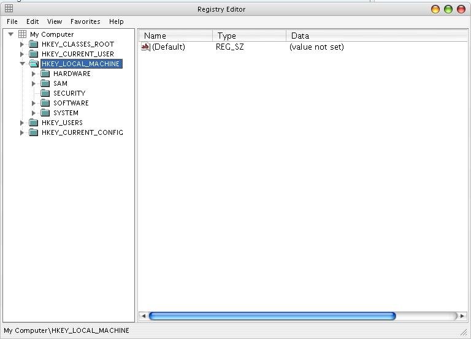
Comme vous pouvez le voir sur cette capture d'écran, les répertoires à la racine de la BDR sont :
HKEY_LOCAL_MACHINE : contient les informations communes à tous les utilisateurs de la machine.
HKEY_CLASSES_ROOT : contient les informations sur les extensions de fichiers, donc des associations.
HKEY_CURRENT_USER : contient les informations (préférences en général) spécifiques à l'utilisateur actuel.
HKEY_USERS : contient les paramètres propres à chaque utilisateur.
HKEY_CURRENT_CONFIG : contient les configurations de l'utilisateur actuel.
Bien ! Je pense que vous savez maintenant le minimum pour débuter. Direction la prochaine partie.
Commençons progressivement. Nous allons voir comment, à partir du répertoire racine HKEY_CLASS_ROOT, changer l'icône associée à un type de fichier.
1ère méthode : méthode semi-manuelle (manipulation au travers de regedit)
Voilà comment est organisée la BDR de ce côté-ci : un dossier portant comme nom une extension contient une clé registre (default) portant comme valeur le nom descriptif du fichier. Alors, le dossier portant ce nom descriptif à l'intérieur de HKEY_CLASSES_ROOT (donc un niveau en arrière) contient un dossier intitulé DefaultIcon. Dans celui-ci, la clé (default) porte comme valeur le chemin de l'icône associée à ce type de fichiers.
Voici concernant le descriptif de son organisation. Concrètement, les étapes permettant de changer l'icône peuvent être représentées sur un schéma comme ceci :
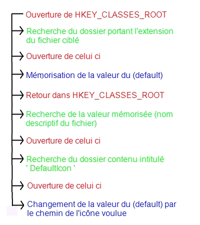
Comme voir est mieux que croire, je vais vous indiquer pas à pas comment changer l'icône d'un fichier XML (par exemple).
En premier lieu, ouvrez la BDR et rendez-vous dans HKEY_CLASSES_ROOT. Vous devriez voir ceci :
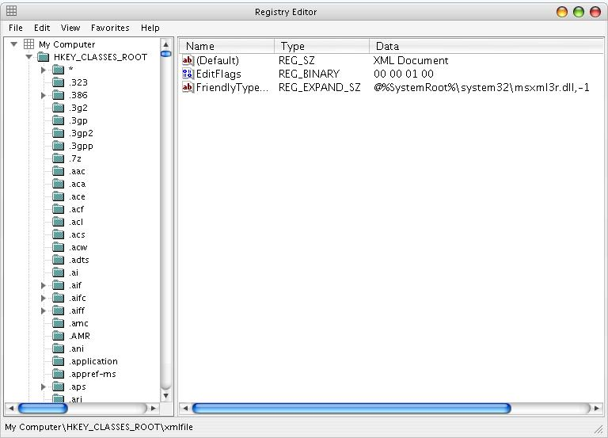
Ensuite, recherchez le dossier portant comme nom '.xml', et ouvrez-le.
Mémorisez ensuite la valeur du (default) contenue dedans. Il s'agit du nom descriptif du fichier concerné.
Vous aurez ceci :
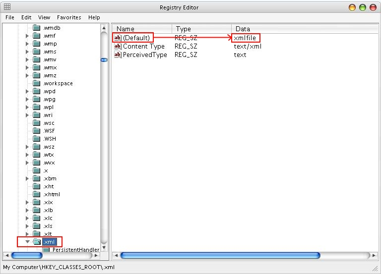
Puis, rendez-vous au dossier portant ce nom descriptif, sachant qu'il est contenu au même niveau de HKEY_CLASSES_ROOT que les extensions, et ouvrez-le. Vous verrez à l'intérieur un dossier intitulé DefaultIcon, le dossier que nous cherchons. Rendez-vous y et vous pourrez alors contempler le chemin de l'icône concernée, contenu dans la valeur du (default) de ce dossier.
En fait, vous voyez normalement ceci :
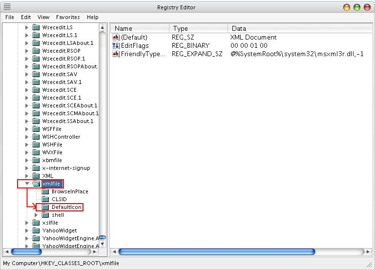
Pour modifier l'icône, faites un clic droit sur la clé (default) et sélectionnez Modify. Une boîte de dialogue s'ouvre, et vous pourrez alors sélectionner le chemin de l'icône voulue dans le champ Valeur avant de quitter.
Une illustration :
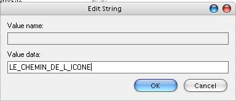
L'icône est ainsi changée. :)
2ème méthode : méthode manuelle (utilisation du winAPI) dans un code en C
Pour modifier le registre Windows dans votre code, vous aurez besoin d'inclure la bibliothèque nécessaire dans votre code, à savoir :
#include <windows.h>
Celle-ci, seule bibliothèque à intégrer au code pour se servir du winAPI, définit les fonctions permettant de manipuler le registre dont nous aurons besoin :
Ces fonctions agissent sur une variable de type "handle de clé" ou HKEY.
Maintenant que vous avez les informations nécessaires, allons créer notre code ;) . Une fonction sera beaucoup plus pratique, pour la maintenance et la lisibilité du code. Je vous propose donc cette forme de fonction :
ext désigne l'extension dont on veut modifier l'icône
icon désigne le chemin de l'icône voulue
Voyons maintenant son contenu : Les déclarations de variables
Le handle de clé :
HKEY key;
Une string qui va nous permettre de mémoriser ce dont nous avons besoin :
char mem[MAX_PATH] = "";
Une variable indiquant la taille de la string récupérée, pour queryValue :
DWORD kSize /* = 8192 */;
Etapes
Ouverture du dossier portant l'extension comme nom :
RegOpenKeyEx(
HKEY_CLASSES_ROOT, //Nom de la branche principale
ext, //Nom de la sous-clé (dossier), ici l'extension
0, //réservé
KEY_ALL_ACCESS, //Tout accès
&key //Taille de la donnée, en bytes
);
Récupération dans mem de la valeur du default :
RegQueryValueEx(
key,
NULL, //NULL, donc valeur de (default)
0,
NULL, //Taille de data (inutile)
(BYTE*)mem, //Buffer de sortie
&kSize
);
Ouverture du dossier DefaultIcon situé dans celui portant le nom descriptif du fichier :
Maintenant que vous avez normalement compris comment manipuler, que cela soit à partir de regedit ou du winAPI, la BDR, inutile de détailler autant. (C'est surtout que je n'ai plus de place pour les images. :p )
Alors dans cette partie, je vais vous apprendre comment lancer votre application au démarrage de Windows. C'est pas bien long, et pas bien compliqué, mais si vous n'avez pas entièrement compris le principe de la BDR ou comment la manier, je vous renvoie à la sous-partie n°2.
1ère méthode : semi-manuelle (au travers de regedit)
Afin d'ajouter un programme à la liste de démarrage (au startup, dans le jargon), il faut juste ouvrir le dossier Software\Microsoft\Windows\CurrentVersion\Run, situé dans la branche d'arborescence HKEY_CURRENT_USER (pour l'utilisateur actuel seulement, c'est préférable), et ajouter une clé registre portant comme ID votre nom de programme, et comme valeur son chemin d'accès.
Pour cela, placez-vous dans le dossier Run dont la place a été citée, faites un clic droit sur la zone d'énumération des clés registre (partie droite), sélectionnez New -> Key et spécifiez comme dit plus haut :
comme ID : votre nom de programme (peu importe)
comme valeur : son chemin d'accès.
En ce qui conçerne sa suppression de la liste de démarrage, vous n'avez qu'à vous rendre dans le répertoire Run, et supprimer la clé que vous avez créée.
2ème méthode : manuelle (en utilisant le winAPI)
Pareil ici, rien de compliqué ou de long. Pour faire ce travail, je vous propose la fonction suivante :
2ème méthode : manuelle (en utilisant le winAPI)
Pareil ici, rien de compliqué ou de long. Pour faire ce travail, je vous propose la fonction suivante :
Dans cette partie, je vais vous apprendre comment associer votre programme avec un type défini de fichiers.
1ère méthode : semi-manuelle (à l'aide de regedit)
Ici, retour à la branche d'arborescence HKEY_CLASSES_ROOT, puisque c'est là que la gestion des extensions est faite.
Le processus est assez semblable au changement d'icône : un dossier portant l'extension du fichier comporte un (default) pointant vers un autre dossier (contenu au même endroit que l'extension) étant le nom descriptif du type de fichier. Mais comme vous avez pu le voir sur les captures d'écran, il y a d'autres dossiers dans celui-ci, autres que DefaultIcon. Dans un de ceux-ci, Shell, se trouve Open, et dedans se trouve enfin command.
C'est sa valeur (default) qui va déterminer quel programme va lancer ce type de fichier à la commande Open du clic droit d'un ou plusieurs fichiers. En effet, il comporte le chemin d'accès au programme, suivi de soit "%1", si le programme n'ouvre qu'un fichier à la fois, soit "%L", s'ils sont plusieurs et donc listés.
Maintenant que vous avez vu l'organisation des associations, voici un exemple de nouvelle association de fichiers. Je vais vous expliquer comment associer Notepad++ aux fichiers .txt par exemple.
Voici la marche à suivre, comme vous l'avez deviné ;) :
ouvrez HKEY_CLASSES_ROOT
Repérez le dossier portant le nom .txt et ouvrez-le.
Mémorisez le (default) contenu à l'intérieur (à savoir txtfile).
Retournez dans HKEY_CLASSES_ROOT, et ouvrez txtfile.
Ouvrez maintenant successivement Shell, Open, et enfin command.
Modifiez la valeur du (default) par le chemin de NotePad++ entre guillemets (puisqu'il n'est pas la seule information), suivi d'un espace et de "%1"
Voilà, l'association est terminée :)
2ème méthode : manuelle (en utilisant le winAPI)
Passons maintenant au codage.
Cette fois-ci, je vous propose la fonction suivante :
Remplacement du chemin d'accès par celui de votre programme :
//Changez le %1 par %L dans le cas d'une sélection multiple possible
sprintf(mem,"\"%s\"/*arguments possibles*/ \"%1\"", path);
RegSetValueEx(
key,
NULL,
0,
REG_SZ,
(BYTE*)mem,
strlen(mem)+1
);
Fermeture du handle de clé :
RegCloseKey(key);
Et voici la fonction complète (incluant la prise en compte des erreurs) :
Vous allez ici apprendre à donner le style de votre Windows actuel à votre application.
Téléchargement préalable
Pour cela, vous aurez besoin d'un fichier manifeste, se présentant sous la forme d'un fichier xml.
Commencez donc par télécharger celui-ci. (Clic droit + Enregistrer sous...)
Si le téléchargement échoue, sachez qu'il s'agit seulement d'un fichier codé en ASCII (donc avec NotePad, par exemple) et renommé en .xml, contenant le code suivant :
Pour associer le manifeste à votre application, vous disposez de deux méthodes :
dynamiquement, donc pendant l'exécution
en utilisant les ressources, ceci pour l'intégrer à l'exécutable.
Dynamiquement
En utilisant cette méthode, l'exécutable utilisera le manifeste situé dans le même dossier que celui-ci. Commencez par renommer votre manifeste avec le nom de votre exécutable comme radical, et avec ".manifest" comme extension. Par exemple, si votre exécutable s'appelle "Programme.exe", alors renommez "manifest.xml" en "Programme.exe.manifest".
Vous n'avez plus qu'à placer le manifeste renommé dans le répertoire contenant votre exécutable.
En utilisant les ressources
Vous avez peut-être envie de vous débarrasser de quelques fichiers entourant l'exécutable, en les intégrant aux ressources ? Comme le manifeste, par exemple ? :p Bien. Alors tout se passe à la compilation. Rajoutez à votre script ressource (*.rc) le code d'intégration suivant :
1 24 "manifest.xml"
Dans ce cas-ci, 1 est l'ID du manifeste, 24 son type, et "manifest.xml" son chemin.
Vous n'avez plus qu'à contempler votre application disposer du style du Windows courant. ;)
Les avis sont partagés à son sujet : à savoir si elle est utile ou non, productive ou non, mais toujours est-il qu'elle reste employée, et qu'on a tout intérêt à la comprendre.
Principe
Nous allons donc ici décrire les sigles qui reviennent le plus souvent. En fait, elle consiste à préfixer en minuscules le nom de la variable (qui commence alors par une majuscule) par le sigle de son type.
Exemple:
HANDLE hWnd;
INT iX;
CHAR cCode;
Les préfixes
Les préfixes utilisés sont:
i : entier (int ou INT en général)
n : entier court (short int ou SHORT)
l : entier long (long int ou LONG)
f : nombre à virgule flottante simple précision (float ou FLOAT)
d : nombre à virgule flottante double précision (double ou DOUBLE)
c : caractère (char ou CHAR) ou un dénombrement
ch : caractère (char ou CHAR)
b : booléen (bool ou BOOL)
s : chaîne de caractères (CHAR *, PCHAR, LPSTR, LPCSTR, ...)
sz : chaîne de caractères terminée par un zéro (CHAR *, PCHAR, LPSTR, LPCSTR, ...)
w : mot ou "word" en anglais (WORD)
dw : double-mot ou "double word" en anglais (DWORD)
h : handle (HANDLE, HWND, HFILE, HBITMAP, ...)
pt : point (POINT)
rgb : couleur (RGB) [rarement utilisée]
str : encore une autre façon de préciser une chaîne de caractères.
Les modificateurs
Il existe aussi quelque modificateurs:
u : non-signé. Exemple : ul pour ULONG
lp, p ou p_ : pointeur sur quelque chose. Exemple : lpstr ou psz...
a ou ar : tableau (ou "array" en anglais) [rarement utilisé]
m_ : membre d'une classe (C++) ou d'une structure
g_ : variable globale
s_ : variable statique (correspondant au mot-clé static en C/C++).
Exemples
Ainsi, en mélangeant les deux, on peut obtenir ceci par exemple :
LPSTR g_szName;// variable globale qui est une chaîne de caractères terminée par zéro.
struct Truc
{
PPOINT m_lpptPosition;// variable membre d'une structure, pointeur sur une structure de type point.
};
INT cbExtra;// nombre(le 'c') d'octets(le 'b') supplémentaires (à allouer par exemple)
Évidemment, il ne faut pas en abuser. Dans l'exemple précédent, cela alourdit inutilement l'expression ; on pourra omettre le "pt".
Depuis la parution de mon tutoriel, j'ai répondu à diverses questions, parfois en fournissant un code fonctionnel. J'ai donc décidé de répertorier ici-même ces différents codes afin que vous puissiez en profiter ;)
Gestion du presse-papier
Le presse-papier revient souvent sur les forums, en particulier en ce qui concerne les futurs traitements de texte en WinAPI. C'est pour cela que j'ai créé deux petites fonctions toutes simples permettant sa gestion, GetClipboardText() et SetClipboardText(), qui conviendront aux moins exigeants, tout en inspirant les plus exigeants :) :
#include <windows.h>
/* goto peut être utilisé si la redirection est dans le sens direct de la lecture du code (on évite le code spaguetti), et que son utilisation est claire... Pour moi, ça l'est. */
#define REDIRECT_IF(condition, label) if(condition) goto label
#define EXIT_LABEL local_exit
#define EXIT_IF(condition) REDIRECT_IF(condition, EXIT_LABEL)
/* Quand "on colle" : */
char *GetClipboardText()
{
char *text = NULL;
EXIT_IF(!IsClipboardFormatAvailable(CF_TEXT));
EXIT_IF(!OpenClipboard(NULL));
{
char *textMem = (char*)GetClipboardData(CF_TEXT);
/* free devra être utilisé une fois le texte utilisé */
text = malloc((lstrlen(textMem)+1) * sizeof *text);
lstrcpy(text, textMem);
}
CloseClipboard();
EXIT_LABEL:
return text;
}
/* Quand "on copie" : */
int SetClipboardText(char const *text)
{
int ret = 0;
HANDLE hGlobalMem = GlobalAlloc(GHND, lstrlen(text)+1);
char *lpGlobalMem = NULL;
EXIT_IF(hGlobalMem == NULL);
lpGlobalMem = (char*)GlobalLock(hGlobalMem);
EXIT_IF(lpGlobalMem == NULL);
lstrcpy(lpGlobalMem, text);
GlobalUnlock(hGlobalMem);
EXIT_IF(!OpenClipboard(NULL));
EmptyClipboard();
if(SetClipboardData(CF_TEXT, hGlobalMem) != NULL)
ret = 1;
CloseClipboard();
EXIT_LABEL:
return ret; /* 1 : Succeed, 0 : Failure */
}
Gestion du drag and drop
La question du drag-and-drop est aussi quelque peu récalcitrante, puisque l'API Windows ne fournit pas de système direct pour s'en charger. J'en ai jadis proposé un, qui se résume à une unique fonction GetDroppedFilesPaths() :
Citation : Moi
Un petit exemple censé écrire les chemins des fichiers lâchés sur la fenêtre dans un fichier (situé dans le même répertoire que l'exécutable) nommé "Result.txt" (pas compilable tel quel).
/* Callback procedure : Soit hwnd (HWND) et wParam (WPARAM), passés en paramètre à la procédure. */
case WM_CREATE:
/* Ne pas oublier d'accepter les drag-and-drop ;) */
DragAcceptFiles(hwnd, TRUE);
return 0;
case WM_DROPFILES:
{
CHAR **paths = NULL;
UINT count = GetDroppedFilesPaths((HDROP)wParam, paths);
WritePathsToFile(paths, count, "Result.txt");
/* On n'oublie pas de libérer la mémoire allouée */
{
UINT i = 0;
while(i < count)
free(paths[i++]);
free(paths);
}
/* Ne pas oublier de finir la procédure de drag */
DragFinish((HDROP)wParam);
return 0;
}
Voici deux fonctions toutes simples permettant de minimiser et de restaurer une application :
/* Cache ton application et place une icône dans la barre de tâches,
dont le handle est hIcon, szTip le message affiché dans une petite bulle (due au
survol prolongé de la souris), et msg le message callback, permettant de traiter
les événements */
NOTIFYICONDATA *Minimize(HWND handler, HICON hIcon, LPCTSTR szTip, UINT msg)
{
NOTIFYICONDATA *nim = malloc(sizeof *nim);
nid->cbSize = sizeof(NOTIFYICONDATA);
nid->hWnd = handler;
nid->uID = 0;
nid->hIcon = hIcon;
nid->uCallbackMessage = msg;
nid->uFlags = NIF_ICON | NIF_MESSAGE | NIF_TIP;
strcpy(nid->szTip, szTip);
Shell_NotifyIcon(NIM_ADD, nid);
ShowWindow(handler, SW_HIDE);
return nid;
}
void Restore(NOTIFYICONDATA *data)
{
ShowWindow(data->hWnd, SW_SHOW);
Shell_NotifyIcon(NIM_DELETE, data);
}
Et voilà un exemple d'utilisation :
/* Par exemple, la zone utilisateur étant située après WM_USER */
#define TI WM_USER+1
/* On minimise la fenêtre en récupérant une structure qui servira à la restaurer */
NOTIFYICONDATA *data = Minimize(hwnd, LoadIcon(hInstance, "Icon"), "Je suis une TrayIcon", TI);
/* ... */
/* On restaure la fenêtre */
Restore(data);
/* Et on n'oublie pas de libérer la mémoire... */
free(data);
/* ... */
/* Quant au switch du low-word du message : */
case TI:
/* Traitement, par exemple avec TrackPopupMenuEx(), voir msdn */
Une idée à fouiller lors de l'encapsulation
Un jour on m'a demandé si c'était possible de spécifier une méthode comme callback, et voici ce que je lui ai répondu :
Citation : Moi
Le fait est que... C'est impossible ^^ La callback doit être statique. Edit: Question de signature... Ca paraît logique avec la structure WNDCLASSEX
Tu dois donc contourner le problème. Voici ce que je te propose : Utilise SetWindowLongPtr() après création de ta fenêtre pour passer l'objet courant (obtenu à travers la structure CREATESTRUCT passée par le LPARAM de la callback statique) en tant que pointeur récupérable grâce à GetWindowLong() (par exemple, à l'emplacement GWLP_USERDATA) dans la callback statique qui se chargera alors de rediriger les événements perçus vers les callbacks virtuelles correspondantes.
Fouille cette idée, si tu as du courage :
class Wnd
{
HWND m_handle;
//...
static LRESULT StaticProc(HWND, UINT, WPARAM, LPARAM);
static LRESULT DefProc(HWND, UINT, WPARAM, LPARAM);
//...
virtual LRESULT virtualProc(UINT, WPARAM, LPARAM); //Pure ou pas
//...
};
class MyWnd : public Wnd
{
//...
virtual LRESULT virtualProc(UINT, WPARAM, LPARAM); //Override
};
LRESULT Wnd::StaticProc(HWND hWnd, UINT uMsg, WPARAM wParam, LPARAM lParam)
{
LRESULT ret = 0;
//Si la fenetre est en creation, le pointeur n'a pas ete encore initialise
if(uMsg == WM_NCCREATE)
{
/* SetWindowLongPtr() de 'this' contenu dans lParam grâce au dernier paramètre
de CreateWindowEx() -> Voir CREATESTRUCT structure */
SetObjectFromCreateStruct(hWnd, lParam); //A toi de la créer...
}
Wnd *pObj = reinterpret_cast<Wnd*>(GetWindowLongPtr(hWnd, GWLP_USERDATA));
if(pObj != NULL)
ret = pObj->virtualProc(uMsg, wParam, lParam);
else
ret = DefProc( hWnd, uMsg, wParam, lParam);
return ret;
}
Cela reste primitif, mais c'est une solution à envisager lorsqu'on est nous-même Orienté Objet ( ^^ ) et que l'on est réticent à utiliser MFC. Cela permet en outre de bien contrôler les rouages d'une API ainsi simplifiée.
Utiliser les Dynamic Link Library
Ou DLL qui vous permettent de découper le code dans d'autres fichiers joints à l'exécutable, soit afin de l'alléger (on lie tout de même statiquement pour s'affranchir des contraintes de chargement dynamiques, tout se passe comme s'il s'agissait d'une bibliothèque statique [.a, .lib] à la génération, mais les bibliothèques sont stockées à part dans des DLL), soit liées dynamiquement (chargement de la DLL et de ses fonctions à l'exécution, dans le code, aucune opération de linker). Les DLL permettent une maintenance facilitée, pour par exemple des mises à jour sur des points particuliers, simplement en remplaçant uniquement des DLL, sans toucher au reste. Elles sont particulièrement utiles pour les plugin.
DavySharp974, que je remercie au passage, nous propose une bibliothèque qui regroupe le code de liaison dynamique des DLL dans 3 fonctions. On ne détaille pas la création desdites DLL et d'une manière générale leur fonctionnement, mais cela peut vous faciliter la vie. Et qui sait, cela sûrement complété.
Citation : DavySharp974
Dans cette partie, vous pourrez apprendre comment charger dynamiquement une DLL sous Windows :) Pour ce faire, il vous faut télécharger libDLL
Dézippez les fichiers et mettez-les dans les bons emplacements (excepté le fichier 'test_dll.dll' qui doit être dans le même répertoire que votre projet de test). Au cas où le lien soit cassé, ou pour simple information, voilà le code de la bibliothèque :
sqdll.h
/*
Library for DLL loading.
by Davy Sharp
This program is free software: you can redistribute it and/or modify
it under the terms of the GNU General Public License as published by
the Free Software Foundation, either version 3 of the License, or
(at your option) any later version.
This program is distributed in the hope that it will be useful,
but WITHOUT ANY WARRANTY; without even the implied warranty of
MERCHANTABILITY or FITNESS FOR A PARTICULAR PURPOSE. See the
GNU General Public License for more details.
You should have received a copy of the GNU General Public License
along with this program. If not, see <http://www.gnu.org/licenses/>.
*/
#ifndef __SQ_EXT_DLL_H
#define __SQ_EXT_DLL_H
#if !defined _WIN32 && !defined __Win32__
#error "libDLL was designed to be used uner Windows only !"
#endif
#ifdef __cplusplus
extern "C"
{
#endif
typedef struct sq_dll_struct_t* sqdll_t;
sqdll_t dll_load(const char* file_name);
void dll_free(sqdll_t dll_ptr);
void* dll_function(sqdll_t dll_ptr, const char* function_name);
#ifdef __cplusplus
}
#endif
#endif // __SQ_EXT_DLL_H
Nos pouvons à présent commencer à coder notre programme de test. Ecrivez un main vide, avec un 'return 0' à la fin.
int main(int argn, char** argv)
{
return 0;
}
Dans le header 'libdll.h', libDLL définit trois fonctions, les trois seules dont vous aurez besoin pour utiliser une DLL.
la première fonction s'appelle sqdll_t* dll_load(const char* nomDuFichierDLL). Comme son nom l'indique (où pas :p ), elle sert à charger la DLL.
Nous avons donc:
int main(int argn, char** argv)
{
sqdll_t maDLL = dll_load("test_dll.dll"); // Chargement de la dll 'test_dll.dll' qui devrait être dans le répertoire de votre projet
return 0;
}
Ensuite, la fonction la plus importante, celle qui permet d'utiliser les fonctions de la DLL, s'appelle void* dll_function(sqdll_t*, const char* nomDeLaFonction)
Elle prend en premier paramètre le pointeur de Handle de DLL et en second paramètre le nom de la fonction à charger. Son retour est de type void* car elle ne sait pas le type de retour et celui des arguments de la fonction qu'on charge.
En revanche, nous, on le connait :) la DLL 'test_dll.dll' contient une fonction int ajouter(int a, int b)
Nous déclarons donc le pointeur sur la fonction ajouter comme ceci: int (*ajouter)(int, int)
Je récapitule, finalement, le code écrit est
int main(int argn, char** argv)
{
sqdll_t maDLL = NULL; // On initialise à NULL
int (*ajouter)(int, int) = NULL; // On initialise à NULL
maDLL = dll_load("test_dll.dll"); // Chargement de la dll 'test_dll.dll' qui devrait être dans le répertoire de votre projet
if (!maDLL) // Si le chargement a échoué...
{
printf("Erreur, impossible de trouver 'test_dll.dll' !"); // On affiche un message d'erreur...
return -1; // Et on renvoie un code d'erreur
}
ajouter = dll_function(maDLL, "ajouter"); // On charge la fonction 'ajouter' depuis la DLL
if (!ajouter) // Si le chargement a échoué...
{
printf("Erreur, impossible de trouver la fonction 'ajouter' dans 'test_dll.dll'); // On affiche un message...
dll_free(maDLL); // Ne pas oublier de libérer la DLL, même si la fonction n'a pas été trouvée dedans
return -2; // Et on renvoie un code d'erreur
}
// Si on arrive jusqu'ici, c'est que tout s'est bien passé
printf("La somme de %d et %d est %d", 429, 763, ajouter(429, 763)); // On utilise la fonction 'ajouter'
dll_free(maDLL); // on n'oublie pas de libérer la DLL en quittant
return 0;
}
Il me semblait en avoir d'autres en réserve, mais je vous avoue que j'ai un peu la flegme de me plonger dans mon courrier dans une chasse aux codes :-° D'autres surgiront peut-être ?
Rédacteur : Mg++
Les annexes ne sont pas finies, elles sont avancées au fur et à mesure de la progression du tuto ;)
Je poste ici pour vous présenter un programme que j'ai jadis créé : NeoBlast.
Qu'est ce que c'est ?
NeoBlast (en français : "Souffle Nouveau") est un lecteur audio avancé pouvant lire la totalité des fichiers audios présents sur vos ordinateurs respectifs :
Wave
mp3
Wma
Ogg
etc...
Comment ?
J'ai utilisé la bibliothèque fmod afin d'avoir le plus de fonctions possible permettant de manipuler les fichiers audio pour les implémenter dans mon programme.
[Malheureusement, même si celle-ci est portable, la bibliothèque graphique utilisée (GUI) étant le windows API ou API win32 n'est pas portable, et ne fonctionnera que sous Windows.]
Que fait-il de spécial ?
NeoBlast ne fait rien de vraiment "spécial", mais se contente d'avoir la plupart des fonctionnalités des lecteurs audio "pro" présents sur le net :
lecture des fichiers audio (logique)
gestion de playlist
Drag and drop dans la playlist
Seeker
affichage en temps réel des infos de la musique (temps, titre, etc.)
fonctions principales (Play / Pause / Stop / Next / Previous)
ouverture simple des fichiers musicaux en unic ou multi select à travers une boite de dialogue d'ouverture
chargement / Sauvegarde de playlist au format m3P (format propriétaire)
scan du / des disques pour trouver automatiquement les fichiers audio
possibilité de rejouer la playlist arrivée à la fin
Shuffle
possibilité de lancer NeoBlast au démarrage :
minimisé
avec une playlist spécifiée
Skin améliorés
Parlons-en des skin... ils sont comment ?
Pour vous faire une idée, voici :
Le skin principal :
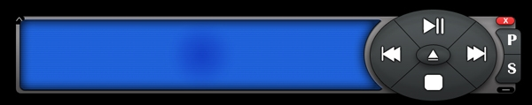
Le skin de la playlist :
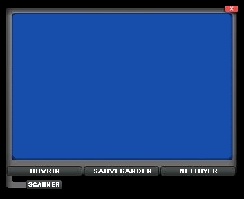
Un grand merci à Musethebest pour la conception des skin... d'ailleurs un peu de pub :p .
[Le noir est utilisé pour la présentation : l'utilisation des régions m'a permis de pouvoir avoir des fenêtres ayant la forme de ces skins (avec la couleur noire comme transparente) sans barre de titre.]
Pour bouger les fenêtres modélisées par les skins, exécutez un drag avec le bouton droit de la souris. (voir "Help" pour quelques précisions).
Génial ! Où le télécharger ?
(Bin quoi, c'est possible non ? :-° )
Vous pourrez le télécharger (en étant équipé d'un extracteur de rar / zip) à partir des liens ci-dessous : (N'oubliez pas de lire le fichier "Help" situé dans le menu Démarrer, et s'il vous plaît, ne sautez pas la licence.)
Voilà la présentation est terminée, place aux tests !
Vous pourrez consulter les codes sources (C) présents dans le répertoire d'install de NeoBlast ; attention, ils sont très indigestes, je l'ai créé à mes débuts, n'étant à cette époque pas rigoureux.
Si vous avez des avis, des commentaires, des critiques [constructives] ou encore des suggestions, n'hésitez pas à écrire dans mon livre d'or situé sur mon site e-Synapse, où une présentation dudit logiciel est aussi présente (au cas où).
Remerciements :
Musethebest qui s'est occupé des skins
Médinoc qui m'a beaucoup aidé sur le forum de developpez.com
En quoi cela consiste t'il : (principales caractéristiques)
Programme permettant de s'échanger des messages sur un réseau local comme sur internet. (avec l'adresse IP ou le nom du PC distant)
Possibilité de s'échanger des fichiers (depuis la version 3.0 du 14/04/07)
Mettre en contact jusqu'a 8 personnes. (il faut pour cela le module DDpop-Serveur : vous pourez virer les utilisateurs qui sont pas sages :p )
Faire en sorte que le programme démarre et se connecte automatiquement à l'ouverture d'une session.
Possibilité de minimiser l'application dans la systray (=barre d'icône à coté de l'horloge).
Choix du port utilisé.
Choix de la police de caractère ainsi que des couleurs (couleur de fond et couleur du texte).
Vous pouvez aussi envoyer des Wizz (comme sur MSN).
Quelques sons pour agrémenter le tout.
Points n'ayant pu être développés :
Le multiplateforme : il marche que sous Windows :o (je me suis tout de même efforcé d'assurer la compatibilité avec Windows98 :) ).
Un aperçu
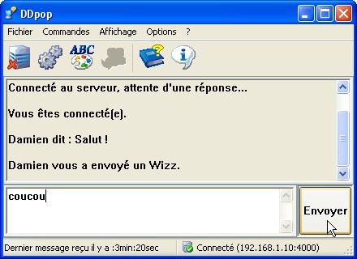
Lien et contact
Voici l'adresse ou vous pouvez télécharger DDpop : http://damien09.programmes.site.voila.fr. Il est conseillé de télécharger également le module DDpop-Serveur (ça va avec DDpop) comme ça vous pourrez être 8 à dialoguer ;) . Les téléchargements (DDpop et DDpopServeur) incluent une Documentation expliquant le fonctionnement du programme correspondant, n'hésitez pas à la consulter.
Infos
Les caractéristiques indiquées ci-dessus ne sont peut être pas celles de la dernière version, si vous voulez les caractéristiques de la version actuelle référez vous à cette page. DDpop et DDpop-Serveur sont des programmes codés en C++ avec l'API Windows par Dando.D.
N'hésitez pas à laisser des commentaires ici ou à me poser des questions :) et prevenez moi si vous trouvez des bugs.
La liste n'est pas complète, n'hésitez pas à rajouter les votres !
Sauf mention contraire, tous les projets sont sous licence GPL, et peuvent donc être étudiés (pas d'appropriation, et les modifications entraîneront obligatoirement une citation du créateur originel).